🏠
日
月
縦書き／横書き
| 鉄研でいず！ for ノベルデイズ２: 2018年、最後の冒険！ |
| 米田淳一 |
| Junichi YONETA Lab (2018) |
|
鉄研でいず！２ 2018年、最後の冒険！
米田淳一
2018年の夏を迎えた女子だけの鉄研(鉄道研究部)。そこで、総裁と呼ばれる部長が、JAM国際鉄道模型コンベンションに出展する冒険を語る。これが鉄研最後の冒険になってしまうのか。乾坤一擲の大作戦！
もくじ
登場人物紹介
長原キラ ながはらキラ：エビコー鉄研の部長。みんなに『総裁』と呼ばれている。「さふである！」など口調がやたら特徴ある子。このエビコー鉄研を創部した張本人。『乙女のたしなみ・テツ道』を掲げて鉄道模型などテツ活動の充実に邁進中。
＊総裁のびっくりヒミツ能力（順次公開）
・隠れオッドアイ。安いラノベのキャラだと思われたくないので視力は悪くないのにカラーコンタクトをはめて眼の色を合わせている。しかしこのオッドアイのその眼を見てしまうと自白させてしまう作用がある。あまりにも危険なのでそれを抑制するためにもカラーコンタクト。
ほかにもまだまだあります。
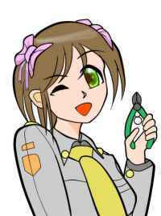
葛城御波 かつらぎ みなみ：国語洞察力に優れたアイドル並み容姿の子。でも密かに変態。しかしイマジネーション能力は随一。
武者小路詩音 むしゃのこうじ しおん：鉄研内で、模型の腕は随一。高校入学が遅れたので、実は他のみんなより年上。鉄道・運輸工学教授の娘で、超癒し系の超お嬢様。模型テツとしての腕前も一級。
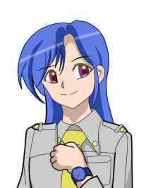
芦塚ツバメ あしづかツバメ：イラストと模型作りに優れた子。イラストの腕前は超高校級。「ヒドイっ」が口癖。
中川華子 なかがわ はなこ：鉄道趣味向けに特化した食堂『サハシ』の娘。写真撮影と料理が得意。バカにされるとすぐ反応してしまう。
鹿川カオル かぬか カオル：ダイヤ鉄。超頭脳明晰で、鉄道会社のダイヤをアルバイトで組んでしまうほどの『ダイヤ鉄』。プロ将棋棋士を目指し奨励会所属。王子と呼ばれるほどハンサムな女の子。電子回路やプログラミングが得意。
田島ミエ たじまみえ:総裁の古くからの友人。凄腕の模型テツ。鉄研のみんなと一緒に大洗などを旅行したものの、関西在住で滅多に会えない。なおかつその実像は不明。
プロローグ・オブ・鉄研でいず！２
うむむ......。
総裁、どうしたんですか？
御波ちゃん、どうもこうもないわよ！ 私たち「鉄研でいず！」の2018年再開版が全然読まれてないのよ！！
ひいいい、PV 5、って......！ 他のが3000以上読んでもらってるのに！
深刻な読者離れである！！
力強く言ってもだめですよ！！ ヒドいッ！！
ブランクがございましたからねえ......前の投稿からなんと5ヶ月も放置ですわ。これでは読者の皆様に申し訳ない限りですわ。
詩音ちゃんとやってたトークメーカーの電子書籍化も中途で止めちゃってたもんね...。すまないわね。
まさに未完成作品の死屍累々である！！
それも力強く言ってもだめです！！ ヒドイっ！！
でも思ってたんですけど、なんでこんなにいろいろ手を出してどれも物にならないという憂き目にあったんでしょう。エブリスタに書いた作品も未成ですよね。
その上YouTubeの鉄道模型チャンネルもがんばったけど収益がいまいちだよー。
topbuzzにも手出してたよね...。
3DプリントのDMMにも手出してましたね。
そのうえpixiv FANBOXにも手出してる。もうどこまで戦線拡大してるんですか！
もともと電子書籍中心だったのに......ヒドイっ！！
なんというタコ足状態......。しかもどれもたいしたことないという......。
カクヨムとかなろうもやってたよねー。
死屍累々にもほどがあります！！ ひどいよう！！
うむ、これには理由があるのだ......。
そもそも、こんな外部リンクまみれで読者の皆さんも混乱してますよ！
うわっ、ほんとだ、ヒドイっ！！
それというのも......。
やはり「軍資金」の問題ですか？
さふなり。このすべてはなんとか出展の軍資金のための収益事業にしようとがんばったのである。
でも、どれも結局はダメであった......。
でももう7月も終わりですよ！！ 来月はもうJAM（国際鉄道模型コンベンション）出展ですよ！！ 間に合いませんよ！！
まさに窮地なのだ......。
私も助けようと頑張ったんですが......。
でも、私達の目的、乙女のたしなみ「テツ道」の探求と、そのためのJAM国際鉄道模型コンベンション出展に、本当にお金が足りないのですか？
足りないのであれば、ここは緊急事態、わたくしのお父様に用立てをお願いしてみようかと存じますが。
うっ、詩音ちゃんのお父さん産学連携の工学教授で今ベンチャー立ち上げてめちゃめちゃお金あるんだった......。この前も「お父様のクルマで先に行ってますわ」っていって、乗ってきたのがマイバッハ・S600プルマンだった......それもちゃんと運転の執事さんもいたし。どんだけお嬢様なのよ......。
そ、そうね。もうこうなったら、どーんと詩音ちゃん家プレゼンツでJAMに出展しちゃいましょうよ。それが早い。それがいい。ヒドイっ！！
なにが「どーんと」なんですか。めちゃめちゃですよ！！
うむ、なんとか自主財源でJAM出店を目指しておったのだが、まさにカツカツである。
しかも時間も思わぬことでロスしてしもうた。
追いつまりすぎです！
いろいろなことが裏目に出たからのう......でも、今からは断念はできぬ、
で、進捗はどうなってるの？ これで模型工作もダメダメだったら救いはゼロよ。
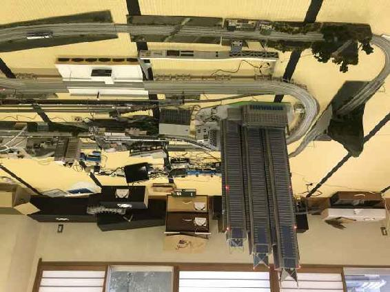
うっ、写真が逆さだっ！
またexif情報が悪さしてるんですね。トークメーカー側で対応してもらわないと。
でもすごい！ めちゃめちゃ大規模な鉄道模型レイアウトじゃないですか！
これをミエくんの奇車製造とともにJVを組んで展示するのだ。これはその展示リハーサルの様子なり。
すごい......。
実際に展示できればの話、ではあるのだが。
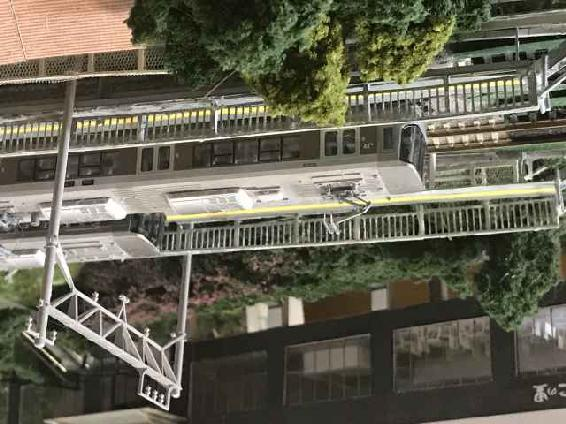
また逆さですね。
一応トークメーカーの運営さんにフィードバックを送ったのであるのだが。うぬぬぬぬ。
でも私たち鉄研の作品にしてはかなりの作り込み密度の気がします！ツツジが咲いてるし！
フェンスもオリジナル作成のものばかりですね。ポイント高い。
フェンスは自作は難しいし市販品は高くて形も自由にならぬ。そこで一工夫したのであるな。
風祭駅をモデルにしたモジュールよね。このために私たち、3回も小田原の箱根登山鉄道風祭駅に取材に行ったの。ヒドイっ。
え、総裁と二人で？
うむ、さふであるのだ。
御波はちょっと複雑な表情になっていた。
でも、これであとは会場への運搬さえ成功すればなんとかなりそうですね。
やだなー。それが一番の最大の問題じゃないー。総裁のおうちの車は今回でないんだよー。どうやって運ぶのー？こんな大荷物。
うむ、そこはクロネコのJIT BOX便を使って運搬するのだ。104センチ四方高さ170センチの専用コンテナでの運搬が比較的安価にできるのだな。通常は法人相手のみなのだが、このJAMに限ってはイベント扱いでJAM事務局が手伝ってくれるのだ。
そうですよね。それならなんとか！！ ヒドいっ！！
ツバメちゃん、それはひどくないよー。むしろそれのおかげでこれまで最大の展示ができそう。すごい！！
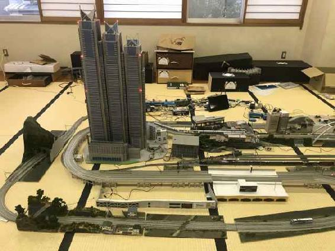
凄まじい規模ですわ...。地上複々線に高架線、大規模モジュールも3つ接続。それに小田急の名撮影地第二菖蒲トンネルに緩曲線まで。この紙製の壁で囲ってあるところはもしかすると......。
ミエくんの奇車製造@1186expさんのモジュールがここに入るのである。これは展示リハーサル用のダミーストラクチャーなのだ。
リハーサルまでしたんですね！
さふなり。公民館を借りて7月1日と7月15日の2回実施したのだ。
なんだかんだいって着実に進めてますよね。ひどいっ。
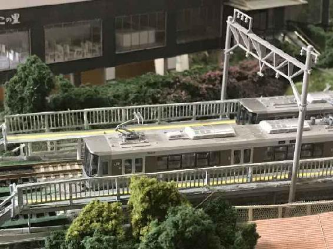
こんどはちゃんと上下正しいー。
うむ。トークメーカーの運営さんにフィードバックを送ったものの、自分でexif情報を消す作業をしたのだな。運営さんもexifの対応については前向きであるようだ。実に弥栄なり！
でも、一見順調に見えますよね。ここだけ見ると。でもなぜそれなのにすったもんだになっちゃったんですか？
タイトルからして庵野監督風味......もー。まったく。でもそんな感じだったのか......。
それでも復活なさったのですね。それでわたくしたち鉄研のみんなもこうしてまたいろいろ頑張れるのですね。
良かった......私にはなにもできなかったんだけども。
いや、ミエくんの存在は絶望に陥りかけたワタクシを何度も救ってくれた。まさにここまでですでに大冒険であったのだ。
でもミエさんって、兵庫豊岡ですよね。ってことはもしかすると！
はいー。豊岡市内を流れる円山川が7月豪雨で氾濫しかかって、あと35センチで水害に巻き込まれるところでしたー。
何トンデモナイこと明るく言ってるんですか。大丈夫だったんですか！
不安だったんですが、総裁が徹夜で水位情報のHPと気象レーダーのHP見ながら応援のメッセージくれたから......。
えっ、徹夜？
また御波の表情が複雑になる。
でも無事で良かったのだ。ミエくんは今年は昨年の奇車工場に某洗駅と呼ぶ大洗駅ショーティーモジュール、そして小田急ロマンスカーHiSEを改造アップグレードしたHiGSEで参戦するぞよ。
そして私達は風祭駅モジュール、第二菖蒲トンネルモジュールなどにいつもの周遊列車「あまつかぜ」などで参戦。他にもゲストでフルスクラッチで早くも制作されたGSEやF-TRAIN２などが参戦予定なの。ひどいっ。
すっかり小田急マツリですね。それだと。
何しろ今年は、
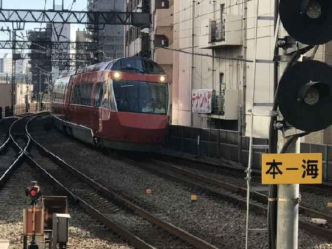
小田急最新のロマンスカーGSE車の登場の年でもあるし、
（写真は著者撮影の本厚木を通過しようとするGSE営業運転一番列車）
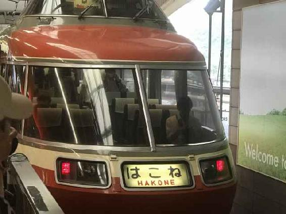
私鉄特急のレジェンドとも呼ばれるロマンスカーLSE車の引退の年でもあるからの。
そういえばミエさんもすっかり小田急ファンになってしまったんですよね。
はい！ お正月に総裁がとってくれたきっぷで憧れのLSEの前展望席に初めて乗ることができました！ それがお別れにもなってしまったのですが、あの昭和デザインの素晴らしさに実際乗って感動しました！ 関西在住だと図鑑で見て憧れるしかなかったから......。
そのためにTOMIXのLSEを重改造してコンプリート化を目指すとか、さすがミエさんでらっしゃるわ。鉄道模型に対するこのすさまじい情熱はホント素敵ですわ。
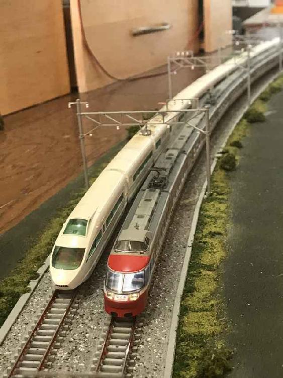
すごい出来......。あのTOMIXのずっと昔から改良されたとこの少ない模型をここまで改良するなんて。
でもKATOにレジェンドコレクションシリーズで出されちゃいそうな気もしますけどね。てへ。
とはいえミエくんの情熱はいつもながらあっぱれなのだ。そしてこうして我が小田急原理主義穏健派の布教に成功してしまったぞよ。
なんですか小田急原理主義って。ひどいっ。
でも、これでJAMでの小田急マツリはできそうですね。JAM本体のテーマは今年は「北海道」。私達毎回ガン無視しちゃってるけど......。
それもまた良き哉。自由環状線は自由なのだぞ。
でもさっきの３月から４月にかけての著者さん爆ウツのあと、どうやってここまで復旧したんですか......。それ気になる......。
それにすべてが完成したわけじゃないですよね。まだ詰めの作業がある。
うむ、それについては次のエピソードで語るぞよ。
えー！！
いやなのか？
ええよー！！
みんなずっこけた。
と、ともあれ、次回からついに工作の様子、そしてさまざまなドラマが始まるぞよ。
乞うご期待！！
夏の大・小田急マツリに向けて－ぼくらのヒーローLSE！
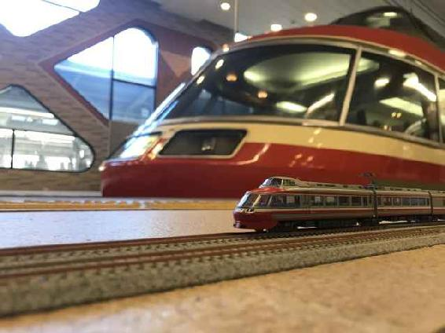
ワタクシ達の2018年は正月鉄道模型合宿から始まったのだ。昼はLSE乗車、夜は模型製作合宿。おせちも食べて素晴らしい正月となった。
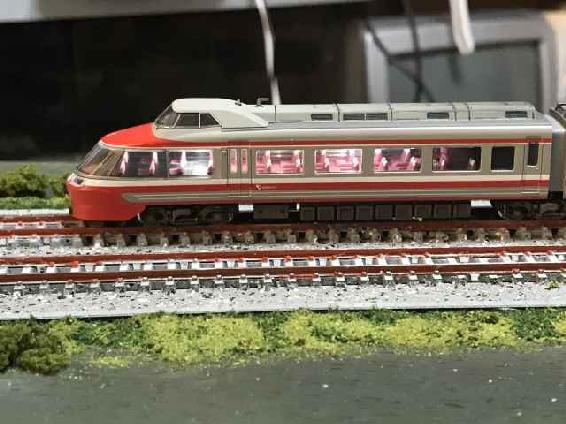
ミエくんがコンプリート化を目指してTOMIXの製品の改良に挑んだ作品がこれである。まずメーカーのTOMIXはヘッドライトとテールライトをつくように製品を改良したとき、先頭車の車高を上げてしまったのだ。ゆえ、ミエくんは集電バネを少し切って調整したのであるな。
バネを専用品にできないからと言っても、共通の集電バネを使ったノーマルだと先頭車がウィリーしたみたいになって編成美が損なわれてしまいます。連接車の魅力はその編成美にあります！
またよく見ると分かると思うのだが、展望室の窓柱を裏側から細い黒テープで裏打ちしておるのだ。製品だとガラスパーツのモールドに色差ししただけで心もとない。この裏打ちによってかなり強度感・安定感が増すのだ。
実車を見た後で気づいたんですが、運転室真下のＢピラーはもっと太かったので、裏打ちを追加しました。これで運転室が宙に浮いたような不安定感は解消できました！
すごい細かい観察......。
ここまで愛されたLSE車も幸せですわね。
なにしろワタクシ達にとってLSEは小田急ロマンスカーの中でもヒーローであったからのう。独特の伸びやかなラインのキレと柔らかさの調和。まさに昭和デザインの粋であるのだ。
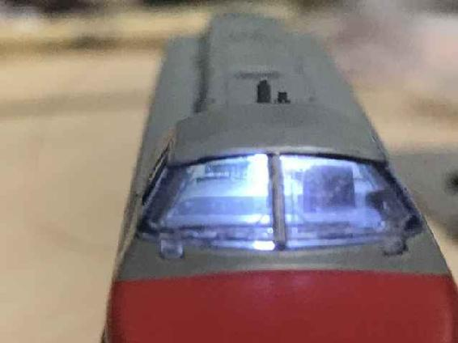
ちなみにワタクシの持つライトチューンのLSEはこうなっておる。
運転台の内装まで！！！
後尾になるときは運転室灯がつくとはいえ、ここまで作るなんて！
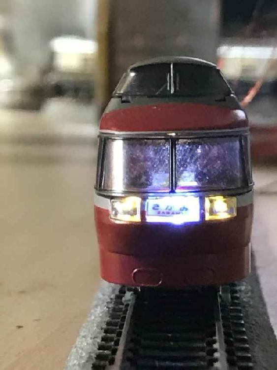
前進時はこんな感じである。ヘッドライトが角目で内側に寄るのだ。製品ではここまで再現してはおらぬ。ミエくんとワタクシのLSEはここまで作っておる。
後退時はこんな感じである。テールランプは左右に振り分けられる。あちこち汚いのは失敬であるが......。
写真は残酷ですわ......。これ、横幅2センチしかないのに、ここまで厳しく写ってしまうなんて。
それでもアップに耐えうる同じものを作ってしまうミエくんの腕の確かさはさすがなり。
いやー、それほどでもー。
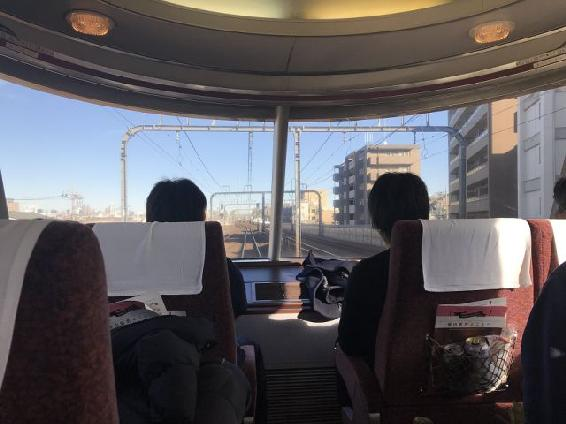
そして我々は念願のLSEの前展望室に乗車。その走りと眺望を堪能したのである！
本当に素敵でした！
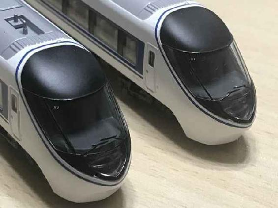
そして帰ってからの合宿工作である！！
このマイクロエース製371系、運転台がシースルーでないどころか運転台コンソールもないのだ。初版であるからのう......。いつかシースルー化したいと思うておった。
そこで私は「そのドリルはなんのためにある！」と言ったのです。とあるアニメのセリフです。
ミエさんそういうとこミーハーだけどどアツいですよね。
ワタクシはしばらくためらっておったのだが、
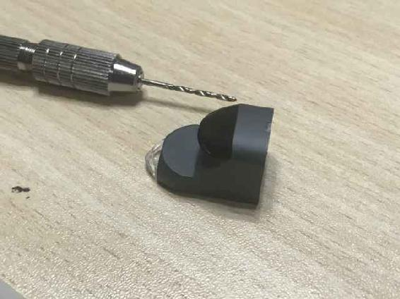
わ、本当にドリルが出てきた！！
というわけでワタクシがライト類の工作を、ミエくんがシースルー化の物理工作を担当して、協力プレイでシースルー化に挑んだのである。
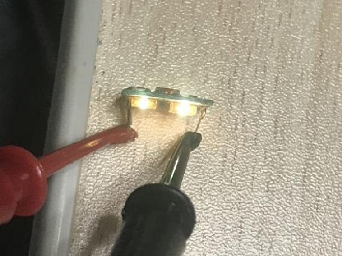
ところがこのノーマルのライト基板、謎なのである......。LEDを３つも使いながら、うち2つは点き方も色も全く同じなのだ......。
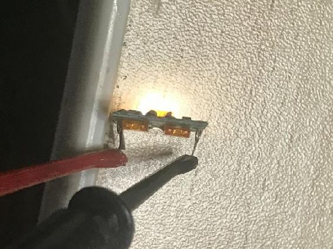
LED2つでいいじゃないですかこれなら......意味分かんないですよ。
ゆえ、ポイッとこの基盤はボツにして、ブリッジとチップLEDとダイオードで代わりを作ったのである。
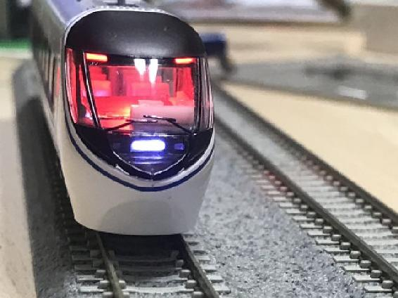
ミエくんがコンソールを作りつつあるなかテールランプ点灯。
こうして外がよく見える展望の良さが371系の真骨頂であったのだ。ワタクシの好きな電車の一つであるのだ。
しっかり愛称幕が白色に輝いているのがまたよいですわ。ちゃんと光の色が違っているのがこだわりですわね。
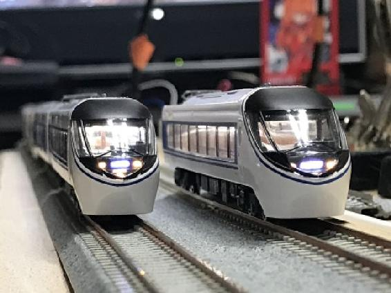
これが前進状態である。ヘッドランプは電球色、愛称幕は白色、そして前頭部にすこし光が散って光前頭のようになっておるのが特徴なり。
バブル期の設計らしい豪華さですわ。素敵。
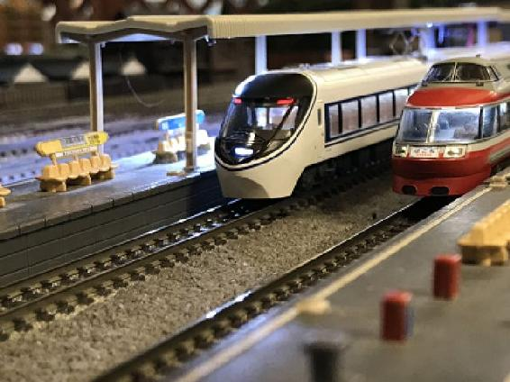
そしてポポンデッタ海老名でシェイクダウン走行である！
いいなー。本物っぽいー。ほんと80年代の小田急線の華やかな雰囲気だなー。
私も参加したかったなー。
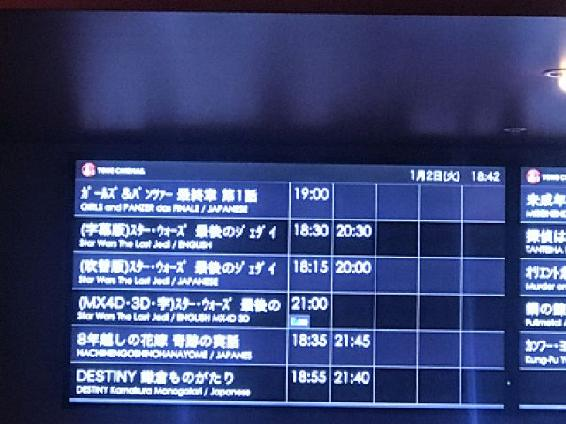
そしてガルパン劇場版最終章を海老名の映画館で見て、鉄道模型強化合宿は〆であった。これも実に良い映画であったぞ。あまりにも良くて映画館の下の回転寿司で1時間以上も感想を語り合ったのである！
いかにもミエさん大喜びですよね。ひどいっ。
ひどくないですよー。でもほんと、楽しかったなー。
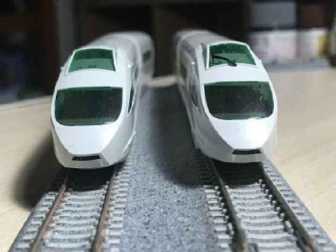
そして我々の小田急ロマンスカーへの愛も高まっていく。
ミエくんが帰還した後に行ったVSEのワイパー強化もそのひとつなのだ。ロマンスカーの2階運転席のワイパーは位置が高くて途中交換が難しいので、破損に備えて特別構造なのだ。それを表現したのである。
左がノーマル、右が改良後ですね。細かいけど印象がすごく変わりますね！
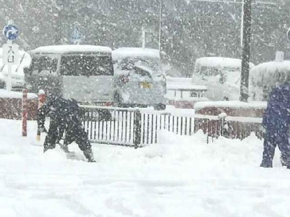
そうしていくうちに春が近づき、関東に豪雪が降った。
そんななか、ワタクシに一つのアイディアが浮かんだ。
わっ、なんか嫌な予感がブワッと！！
総裁ナチュラルに悪巧みするからなー。ひどいっ。
ここまで小田急ロマンスカーに惚れ込んだら、その舞台にもこりたくなるのは必然と言えよう。
ゆえ、次回はその話であるぞよ。
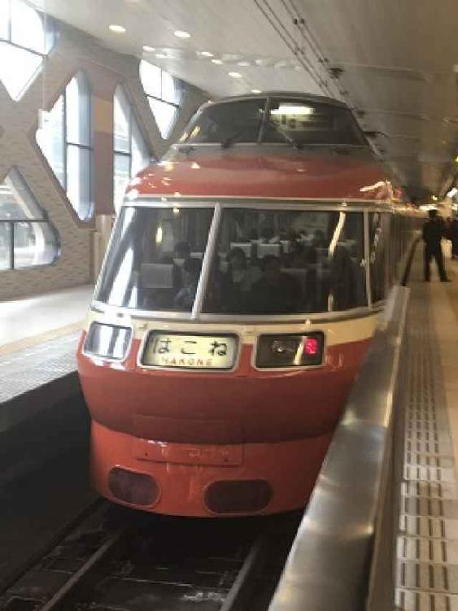
ちなみにこのころ何度か新宿に行く用事があって、その度にLSEを観察しておった。撮影の人も少しずつ増え始めておった。そう、LSE実車との別れが迫りつつあったのだ。
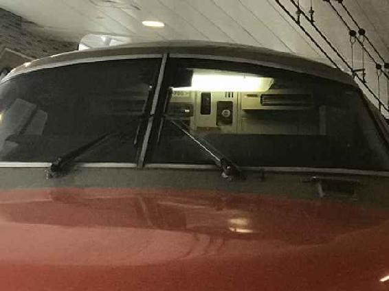
でも視点がホント模型鉄だなあ。運転台の内装まだ観察してたり。
事実ワタクシは模型鉄であるからのう......。
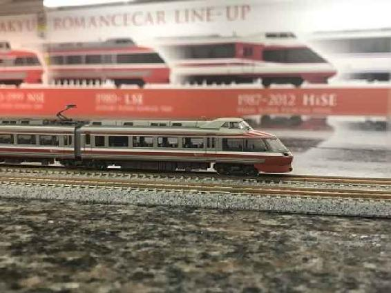
ほんとにLSEはヒーローだったんだねー。
設計段階でも先代のNSEに対し「男っぽいロマンスカーを」との要望でデザインされたのがLSEであるともいう。しかし見れば見るほど素晴らしい造形である。スカートと前頭部の間にちょっとした膨らみが作られていることなども実に素敵だ。ミエくんがそれに気づいたのである。
さすがのミエさんの観察力だなー。
恐縮です―。
つづきますー。
魅惑のＳ字！！
で、ロマンスカーの格好の舞台って、どこなんです？
それは第２菖蒲トンネルである！
あのメガネ型の短いトンネルが並んでて、それ越しにカーブをやってくる列車が見えるって、あそこですね！！ ヒドイっ！
ボクも時々撮影に行くよー。渋沢と新松田の中間にあって、下り側の踏切から狙うのが定石のいかにも小田急って感じの名撮影地だねー。
さふなり。小田急の風景、といってこれほどパンチのある風景は外になかろう。
でもなぜ？ ちょっと盲点っぽいけど、なぜここを作ろうと思いついたんですか？
それはミエくんとワタクシで鉄道模型合宿のシェイクダウン走行をポポンデッタ海老名のレンタルレイアウトをしているときだった。
複線トンネルを抜けるミエくんのLSE改とワタクシの371改。そこでふと思ったのだ。
「小田急って、複線トンネル少ないよなあ」と。
そういえばそうかも！
建設のときに費用の面で断面積大きいトンネル掘るの避けたのかもしれませんね。複線トンネルは断面積大きいもの。
トンネルの掘削費用は断面積によりますものね。小田急は開業当初からかなりの窮乏状況で、株も長い間無配だったと資料で読みましたわ。なんとも経営的に苦しかったと。
それをこらえて現在の複々線完成に至る小田急の社史はまさに私鉄のなかで経営のリーダーシップが一番問われたものであるとワタクシは思うのである。良くも悪くも私鉄イズム全開なのだ。
たしかに経営者が自分が乗りたいからと列車の行先からダイヤから車両まで設定させてしまって、それが現代に至るまで走り続けてるとか、私鉄でなければ絶対無理ですよね。
それに小田急の職員さん、みんなそれぞれどこか楽しそうー。あんまり苦虫噛み潰してる人見たことないー。子供が手ふると必ず手を振りかえしたりホーン鳴らしたりすごくフレンドリーだよねー。
それはそれで小田急にも経営判断ミスではないかと思われることもあるのだが、それも含めて小田急は私鉄的で楽しい会社なのだ。ゆえワタクシは小田急原理主義穏健派を名乗り、作る模型の架空鉄道は北急電鉄を名乗るのである！！
なにげに北大阪急行さんとか北越急行さんとかにもメーワクかけてそうですけどね。あと北急のコーポレートマーク、どこか阪急さんのいまのマークに似てる気も。
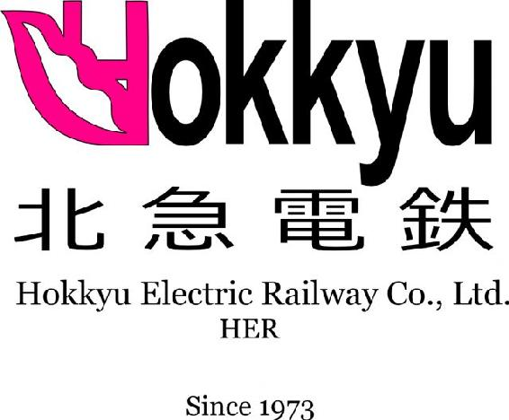
うむ、その点でもワタクシは自らを厳しく律してテツ道に邁進せねばならぬのだ！
で、その小田急愛で作ったその第2菖蒲トンネルって、どんな感じなんですか？
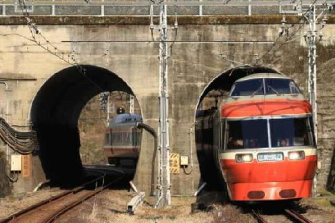
このトンネルである！！！
うわ、すごくバッチリな写真！！
何しろこの説明のためにこの写真のライセンスを購入したのだ。さすがプロの写真、ドンピシャである！！この品質なら値段も納得と言えよう！！
しかしただでさえお金が足りないのにこんなことをして大丈夫なのですか？
いちいち姑息な方法をつかって説明用の写真を探したり不法行為をしてリスクを背負うことに比べればずっとリーズナブルなのである。この写真を撮るために現地に赴いてドンピシャに撮れるまで頑張って撮るなら、気持ちよく払って使わせていただいたほうが双方にとって幸せというものであろう！！
ホントそうですわね。権利というものはそうやって互いを守り、互いをリスペクトし、互いを幸せにするために使うべきものですわ。
さすが詩音くん、その観点はワタクシも同じなのである。
そこで、このトンネルの再現のためにワタクシはベニヤ板を用意した。かつてのよねカーブと名付けられた緩曲線を作るときにホームセンターでカットをお願いしたベニヤ板が４枚ある。そのうちの２枚めを使う。
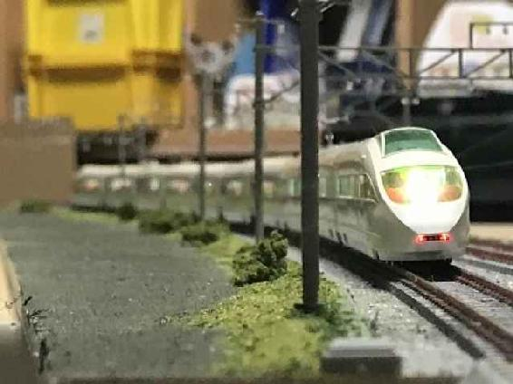
これが「よねカーブ」ですね。こういうゆるい曲線は楽しいですよね。
Nゲージはカーブではどうしても曲線がきついと車体のオーバーハングが飛び出して格好悪いからのう。
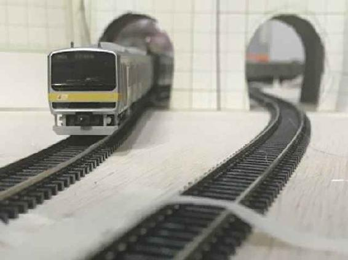
おおー、結構迫力出ますねー。
でもなんか違うなあー。
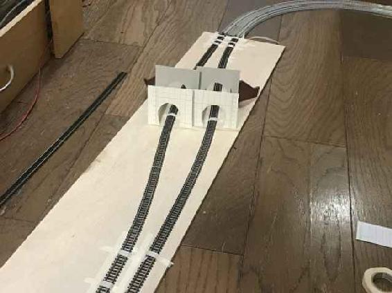
うむ、華子は鋭いのう。
はじめワタクシはこのように線路を配置しておった。
しかし！！
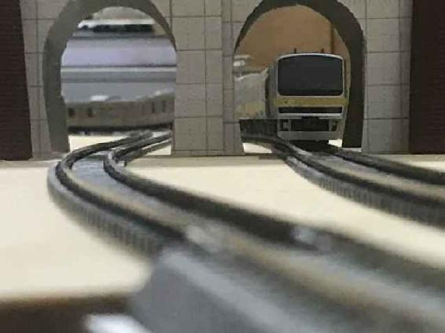
華子くん、こうなるべきだと君は言いたいのではないか？
そうですー！！ そうそう、これこれー！！
そうなのだ。ワタクシはカーブの向きを間違えておったのだ......。
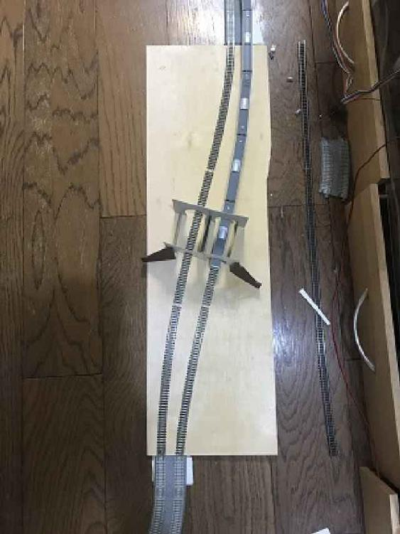
これで線路配置は決定である。出口と入口でユニトラック規格にしてあるのでユニトラックの線路に組み込んで自在に楽しめるぞ。
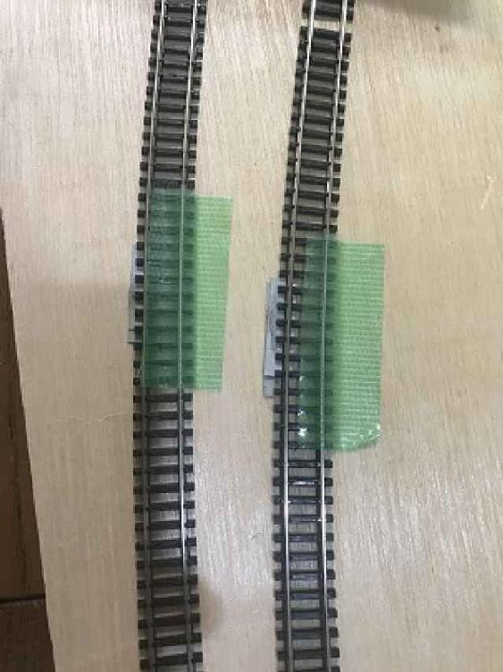
このように線路の傾き、カントをつけていく。ゴム系接着剤で線路を固定するときに片側に厚紙を挟んで角度を調整するのだな。あまりきついと列車が転覆してしまう。しかしゆるすぎると格好良くないのだ。そして角度の変化に調和がないと列車の挙動が乱れてしまうのだ。
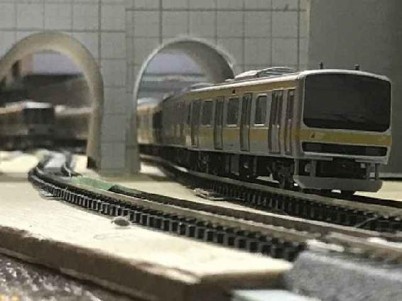
そしてこの様になったのである。
スピード感出てますね、この静止画の時点ですでに。
それが模型のレールにカントをつける効用のひとつであるのう。もともと模型の走行安定性を考えてカントをつけないという選択肢もあるのだが、ワタクシはリスクがあってもカントをつけたいと思うのだな。
でもトンネル、単線トンネルだけど背が高いですね。これは小田急のトンネルが背が低すぎるのかもしれませんね。これぐらいはないと模型車両のパンタグラフが引っかかりそう。
カオルくんも鋭いのう。そうなのだ。その理由も、そのための後の検討でもまた判明するのだ。小田急のいろいろな苦労が、たったこの一つのトンネルでもまた一つわかることになるのだ。
テツ道とはなにか、わたくしも思索してまいりましたわ。それで、もしかすると他人の苦労を理解することもまたテツ道の精神かもしれないと思い至りました。世の中に楽な仕事など一つもないこと、でもその仕事の中に楽しみを見出していく......そういう世界観に至るのもまたテツ道ではないでしょうか。
さすが詩音くん、それもまた一つであるのだ。深く洞察すること、掘り下げて考えることにより、物事のより良い理解に至るのもテツ道なり。
テツ道って、深いんだねー。
さふなり。ゆえ、この第二菖蒲トンネルの作成もまだ続く。
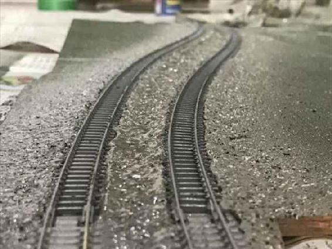
わっ、なんですかこれ！ ヒドイっ！！
ストーン調スプレーを使って一気にバラスト面を作ってしまうのである。
紙粘土で整形して砂利面を作っておいて、スプレーで一気に仕上げるのだ。
レールをしっかりマスキングしてから吹かないと本当にヒドイことになるぞよ。
最近編み出された広い面積を一気にバラスト仕上げする手法ですね。下地に黒い紙粘土を使えばさらに時間短縮効果が大きいとか。
さふなり。しかしやってみてわかったのだが、このストーン調スプレー、スプレー缶の軸が非常に弱くて脆いぞ。折れて私の心も折れそうになった......。それでも吹いたのであるが。
でも納期に追われた場合は非常に有効な工法ですわ。
そして様々な手法への挑戦もまた、テツ道の探求の手段でもあるのだ。
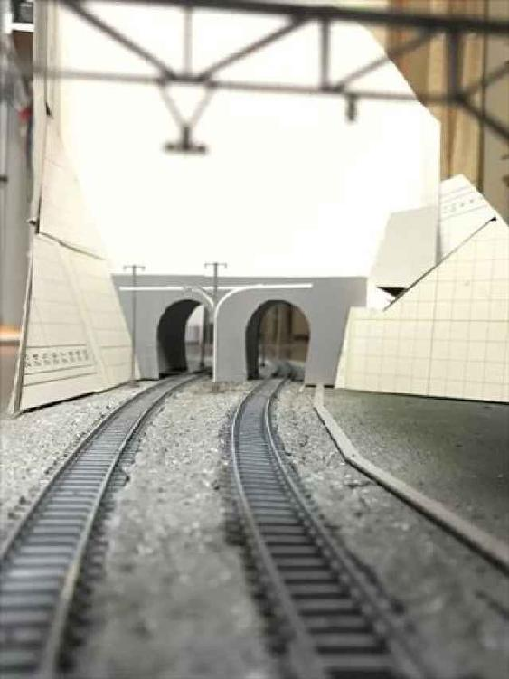
これがスプレー乾燥後である！！
すごい粒状感！！ これならバラスト撒かなくても結構イケますね！ ヒドイっ！！
さらにバラストを少量詰めてバラスト面を安定させることで線路面はほぼ完了である。あと線路のレール側面は塗っておくとギラつかずに仕上がりが良いぞ。
というわけでこの工作、続くのである！！
謎のセンターポール
うむ、ここで気づいたものもおるやに思うのだ。
なんです？ ヒドイっ。
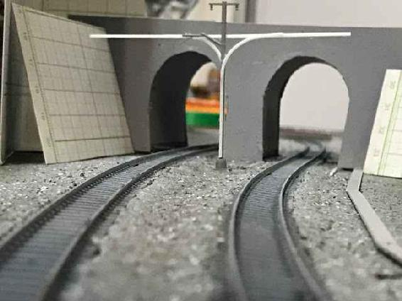
このなぞのセンターポール状の架線柱であるのだ。
あ、たしかにそうですね。妙な形だなあと思ってました。路面電車の架線柱じゃあるまいし。
これ、私も検討したんです。
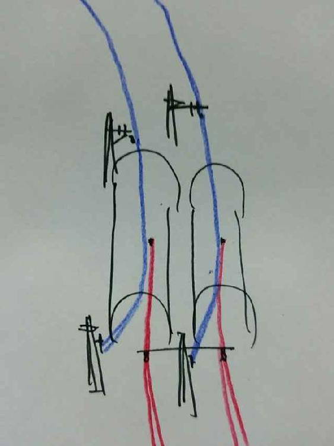
どうにもこのトンネルの出入り口の架線柱の形がフに落ちないので考えておったのだが、このように架線を張っておるようなのだ。
トンネルの中がエアセクション、変電所からの送電の境界になってるんですか？
さふなり。赤と青で送電している変電所が違っている。エアセクションとも言う。
思えばこの狭いトンネルの中で異常時に停車するのは避難の都合上避けたいであろう。
それならば、停車したり発車したり力行したりすることが禁止のエアセクションを兼ねてしまえば、運転士さんもトンネル内は注意して惰行で必ず通過とわかるので非常によろしいのだ。
その上でＳ字に架線を張るために架線の端っこをこのセンターポールみたいなので引っぱってるんですね。なるほどです！
狭いトンネルを逆手に取ったいい方法ですわ。プロの仕事ですわね。まさしく。
というわけで架線柱の謎がほぼとけたので、後は作成であるのだ。
本当は模型でも架線張りたいですよね......。
うむ、たしかにそうなのだが、張ったらあとのメンテナンスがしぬほど大変なので涙をのんだのだ。
脱線復旧とかのときに架線、すごく邪魔で面倒ですものね。でも張るとめちゃめちゃ実感的になって効果高いんですけどねえ。
鉄道模型で脱線は不可避なのである。それゆえ、そこで涙をのむことも必要となる。
そのメンテナンス性と美観の両立をはかるプランニングこそ、鉄道模型作成の醍醐味でもあるのだ。
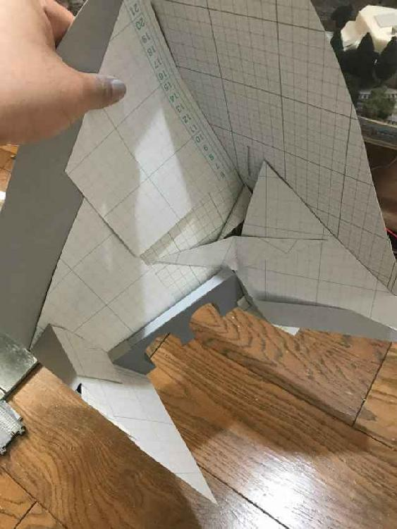
山は斯様に作成していく。
紙製なんだねー。
石膏などを使うと重たくなってしまう危険があるでのう。しかし石膏を使う利点もあるので、使い分けるとヨイぞ。
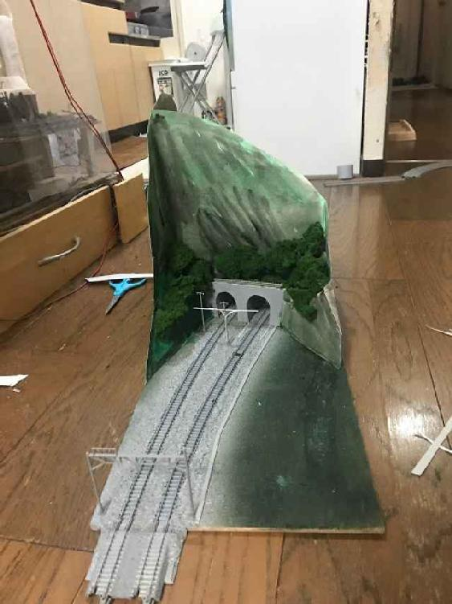
ざっくり緑化してみるのだ。
トンネルがめちゃめちゃ短くてヒドイっ！
実物の第２菖蒲トンネルは意外とトンネル長が６０メートルほどもあるのだ。マトモに作ったらモジュールが大きくなりすぎて扱いが大変であるからのう。
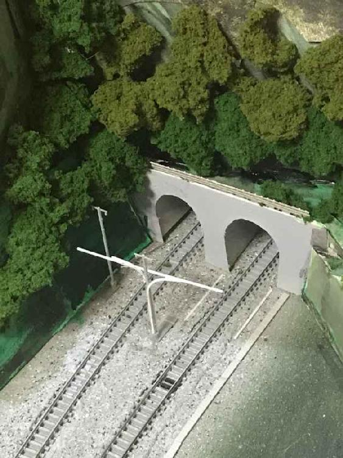
おおー、どんどん緑化していってますね！！
地味に細かく作り込んでいっているのだが、こういう作り込みは実に楽しいのだ。
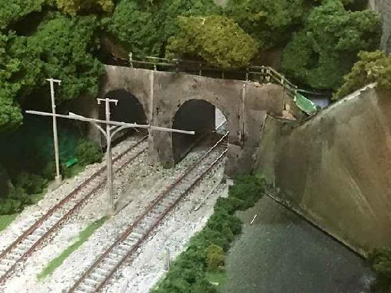
ウェザリングしたのだ。トンネルポータルなどはペーパー製なのだがサーフェイサーを吹いて表面処理してあるのでスミ入れブラックを塗っても大丈夫なのだ。
たしかに結構こういうきったないトンネルありますよね。たしかにトンネルを洗ってもお金になりませんもんね。ヒドイっ。
機能と点検のじゃまにならなければ放置であるからのう。
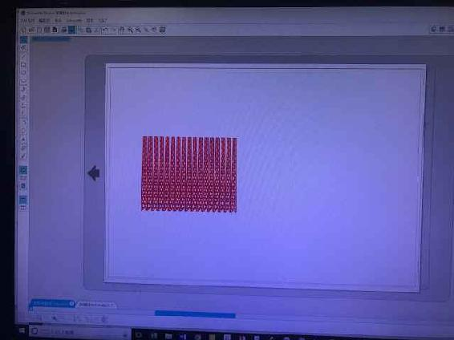
ここでクラフトロボ出動である。架線のディテールパーツをペーパーで作るのだ。
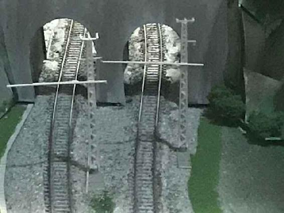
塗装途中である。この架線柱の芯は市販架線柱。機能的だし頑丈だぞ。それにディテールを追加することで機能性と美観を兼ねるのだ。
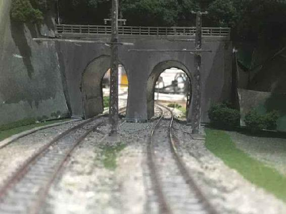
すごくそれっぽーいー！
草木の繁茂は時期によってもっと生えていたりもっと枯れていたりなのだが、ここは思い切って限定したのである。でないと資料写真に振り回されるのだ。
資料写真はあればいいってものじゃないんですね。
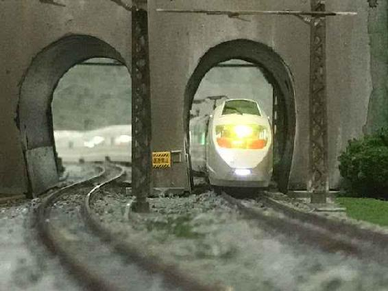
さふなり。そしてこのように仕上がりである、
退避禁止看板とか細かいなー。
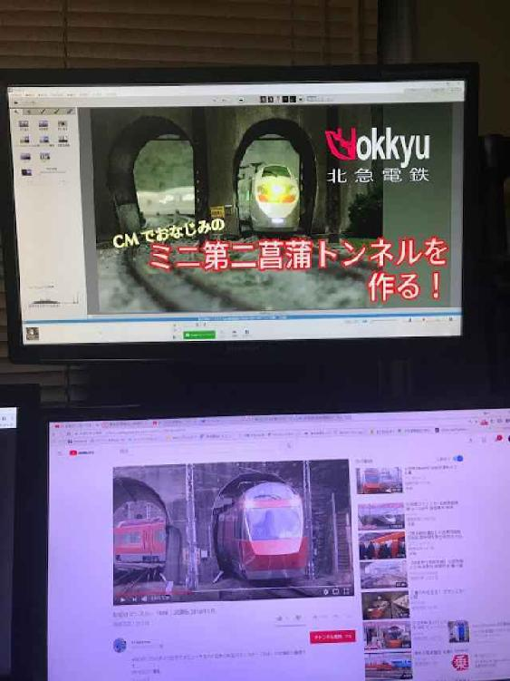
作業中のＰＣがこうなって思わず「フフッ」となってしもうた......。下のYouTubeと上の模型がドンピシャで並んでしもうたのだ。
たしかにこれはそうなりますよね。
ついでにチャンネル登録もしてくれるといいよー。鉄道模型ネタ中心でやってるうちの北急電鉄チャンネルの更新とかすぐわかるしー。
よろしくなのだ。もともとチャンネル登録を募集しなかったために収益化資格を失う憂き目にあってしもうたからのう。回復したとはいえ。
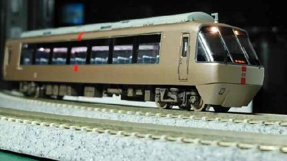
このころ私はこれをやってました！！
ロマンスカーEXE！ でもすごくディテールアップしてある！！
ミエくんの初めて乗ったロマンスカーがこれであるからのう。印象深いということでマイクロエースの製品を入手してディテールアップしておるのだ。なかなか高価な模型であるだけに手を入れるのはビビるのだが......。
さすがミエさんの観察が生きてるなー。
ありがとうございますー！
しかしなおさらこれで大・小田急マツリは開催しないともったいないですね。
うむ、頑張るしかないのである！！
そして時系列的にはこの直後、NovelJAMがあって、激闘の末に入賞したのに実家ともめて著者さんバク鬱になるんですよね......。
依代がそうなってはワタクシもどうもできん。しっかりせい、著者。おりゃ！ なのである！
でも小説の執筆から電子書籍書店での発売までを２泊３日でやってしまうこのイベント、まさに「出版を革新する」にふさわしい画期的なイベントでしたわ。
著者さんは前回著者役として小説を書いたのですが、今回は編集者役。２名の著者さんとデザイナーさんでチームを組んでアシスト役をやったのですわね。
あー、詩音ちゃん参加したそうにしてる―！
わたくしが非実在女子高校生でなければ、ほんとうに参加したいですわ。ツバメさんもそうですわね。
え、あたし？ ......でも、こういう文系の腕を競えるこういうコンペってなかなかないからなー。興味惹かれるなー。イラストとデザインは私もやりたいし。
これが我が著者のチームの受賞の様子なのだ。激闘奮戦の後であるが、じつに楽しいイベントであった。
このために総裁また一肌脱いだんですよね。「あぶないみずぎ」着ちゃったんですよね。
著者が轟沈しかかったからの。救援のためである。まさに八王子決戦であった！
もー。総裁どんどんＨＥＮＴＡＩになってくんだもんなー。あくまでもＫＥＮＺＥＮ！
この「鉄研でいず！」はテツ道の啓蒙が主目的であるからのう......。
主目的が完全に迷子になってますよ......。
NovelJAM帰宅後に行った試運転の様子である。
結構コンパクトに運転できるんですね。これがモジュールレイアウトの魅力ですね！
さふなり。狭い部屋でも雄大な鉄道風景を動画で楽しめるのだ。
素敵ですわ......巨大レイアウトだけが正解ではないと思わされますわ。人それぞれに楽しみ方があっていいと思える。これこそテツ道ですわね。
人それぞれのテツ道。それを互いに尊重し合うところに美があるのだぞ。
工作はまだ続くのである！！
悲劇と、僕たちの戦場
斯様に順調に準備を進めているかのように思えたときであった。
このような通知が届いた。
ヒドイっ！！ YouTubeを収益化できなくなったなんて！
現実にこの変更あっても不正行為だらけだよねー。YouTubeひどいよねー。
うむ。でもどう抗議しようとYouTubeは絶対に潰れないから何をしても平気なのであろう。YouTubeの使う「コミュニティ」や「クリエイター」の言葉のなんという空々しさよ。クリエイター？ 「小作人」の間違いであろう。現代のコンテンツプラットフォーム商法と資本主義と新自由主義がここまでくるともう延々と搾取しかない。
しかもその地主と小作人の立場にあることすら気づいていない方もいらっしゃいますわ。むしろ地主に感謝しろ、作りたいのならただで作れ、などと詰め寄った方もいましたわね。
芯までこの世の搾取に慣れきってしまったのであろう。情けない限りである。現代の資本主義の害毒が個々まで回ってしまったのだ。だから原価厨などとよばれる基地外な考えのものが跡を絶たぬのだ。
しかし、この通知の一番きついのはむしろ次の写真なのである！！
ひいいい！！！ あと６％、あと402円で支払いが発生したのにここでストップだなんて！！ ヒドイっ！！
向こうは機械的にやるしかありませんからね。とはいえ悲しいですね。
軍資金がまた一つ減ったのである......。
ちょっとこれ、立ち直るのきついですよね。
しかし！ 我がテツ道はこれでも前に進まねばならぬのだ。こういうときこそテツ道なのだ。
そう思って、うちからジャンク車両を送ったんです―！
おおー！ ミエさんナイス！ 何を送ったんですか？
223系です。もともと改造しようと思ってたんですけど、その改造して作ろうとしていた車両がメーカーから製品で出ることになって余剰になったので総裁に送ったんです。
うむ。ワタクシも223系は大好きな車両であるからの。届いて早速手を入れた。
ひいい！！ なんでパンタグラフ2丁、それもシングルアームにしてるんですか！！ 全然JR西日本っぽくなくなっちゃったじゃないですか！！ ヒドイッ！！
うむ、我が架空鉄道は北急電鉄であるからの。JR西日本さんではないのだ。しかも我が北急では223系はごく少数の技術試験車両という位置づけなのだ。
東日本の車両中心ですもんね。持ってるの。
それどころじゃなーい！
そしてこの223系改をしばらく見ていて思うたのだ。
これは大昔に作ったカメラカーじゃないですか。模型車両からの風景がテレビで見られるって言う。キットの商品名トレインスコープ、TC-9でしたね。
それをジャンクの車体に入れ込み、なおかつ電源をレール集電ではなく車体搭載のエネループ電池からの給電にしてノイズ低減を図ったのだ。
車体に電池って......プラレールじゃないんだから。ヒドイっ！！
このように組み込んでみた。なかなか物々しくてヨイぞ。
ものものしすぎます！！
そして試運転である！！
ライトつくようにしたんですね。
しかしそのせいで謎のノイズが入るようになってしもうた......。
うーん、おかしいなあ。レール電流とカメラ駆動用の電池は分離してるはずなんですけどね。もしかすると混波してるのかな......。
ワタクシにはそれ以上突き止められなかったのだ。
これがカメラカーからの画像なり。HD画像ではないのでいまいち荒いのだが...。
でも十分楽しそうです！！
HD画質カメラへの更新は何度も計画したのだが、リアルタイムで画像を確認できるHDカメラはドローン用などがあった。しかも素敵な読者様から寄贈を受けたカメラは回路が大きめなれどHD画質しかもWi-Fiによるリアルタイム画像というものだったのだが、残念ながら搭載加工が間に合わなかったのだ。
それはほんとうに残念ですわね...。せっかく寄贈していただいたのに。
いまいちテンパっておるのと著者の鬱がヒドイので工作が全くはかどらなかったのだ。
著者さんの鬱は今回ひどかったねー。
いろいろあったからのう......。
この動画にそのような経緯と試運転風景をまとめてあるのだ。ぜひご覧いただきたく。
そうこうしているうちに発注していた高架レールが到着したのだ。
すごい量！！ ほんと、これから戦争でも始めるんじゃないかってぐらい！
まさにこれはワタクシにとって、戦争であるからのう......。
高架ラーメン橋脚は多めのほうが見た目が素敵ですわね。標準の数だと橋脚がスカスカでボリューム感に欠けますわ。
うむ。ラーメン高架のこのボリューム感は現代的な鉄道風景としてこれまた題材として楽しいものなり。昭和の田舎もまたノスタルジー溢れてヨイものだが、こういう平成の近代的かつ無機質な構築物のボリュームもまた楽しいものであるぞ。
なんですかこれ！ 何かの計測をやっているようなテント！
これを置けばどんな不自然な線路も「実験線」にしてしまえるという「野外実験計測本部セット」である！！
確かにこうやっておくと、何かの実験をしているように見えるけど......なんだろうこの不思議な気持ちは。
うむ、かなーり反則技な工作であるからのう......。
わが鉄道のフラッグシップ周遊列車「あまつかぜ」にも手を加えておった。
内装を印刷にて作り込んだのである！！
ドアやコンソールが見えて素敵ですわ！！
しかし窓ガラスがこのＮゲージではレンズになってしまうため、いまいち内装が歪んで見えてしまうのが残念なり。
さらに3Dパースも作り込んでおった。
あれっ、片方はみなれた「あまつかぜ」だけど、もう片方は？ まさか！
さふなり。新規作成しようと3Dデータを作り込んでおった。
今オープンテラス装備車になってる「横浜」の二代目ですね。
3Dプリントで作ろうとやっておったのだが、間に合わないしお金も足りないと断念したのである。
残念ですわ......。
斯様にいろいろとあがいておったのだ。YouTubeから「君はいらない」扱いされたのに悲しかったが、それを作品にぶつけたのだ。しかしどれもいまいちであった。
でもここまでできれば十分だと思うけどなあ。
いや、まだまだなのである！！
そんなに思いつめて......。
なにしろ、これがわれらの「戦場」なのだ。
去年果たせなかったこと、そして来年きっと果たせないことを完遂するには、これしかないのだ。
そのころ、私も......。
ええっ、ミエさんも？
はい......総裁がとりつかれたようにやっているのを見てて、私もあがいていたのです。
つづく！！
憧憬のローズバーミリオン
総裁が奮闘しているとき、私、見つけちゃったんです......某オークションでジャンク出品されていた、赤いロマンスカーHiSE車を。
うむ、おそらくそのもとのオーナーさんは「RED EXPRESS」のようなJR九州スタイルにしたかったらしいのだ。だが、そのころは新ロマンスカーGSE車が最終試運転をおこない、テレビでも登場がCMで流れておった。久々の展望ロマンスカーの新車、まさに小田急はお祝いカラー一色であった。
それで、思っちゃったんです......HiSE車もいくつか手直しして、ローズバーミリオンに塗れば、GSEっぽくなるんじゃないかな、って。
でも理にかなってるのが鉄道模型界の新星・ぐそくむしさんがあっという間にGSEをもうＮゲージで作っちゃってるんですよね。今から追いかけても追いつかないし、製品化の可能性も高い。となると基軸をかえてGSEっぽい車両を表現するのはネタかぶりしない上にGSEのエッセンスの車両を持てる妙手です。
私もそう思って、タネ車としてHiSEを手に入れて、さっそく加工に入りました。
まずセンターピラーを削って、もとのヘッドライトは埋めたのであったな。
すごくきれいに磨きましたね！！
あの薄いプラの展望室窓ガラスのモールドだけを取り除くのはなかなか繊細な工作力がいりますわ。すばらしい。
でも、片方をやるときにやっぱり無理させちゃって、破損しそうになったんです。
わ！ スペアパーツだ！！
同じく自由形模型を作ってらっしゃる方がパーツを送ってくれたんです！！
この方にはわが「鉄研でいず！」ラッピングトレインのデカールも作ってもらったのだ。実に素敵な方なるぞ。
そしてＡピラーの飾帯を作りました。あの実車のメタルに輝くところがカッコいいのが印象的でした。これを2組4本作ります。
またパンタグラフをシングルアーム化しました。
思えばHiSEはシングルアームパンタに換装されたことがなかった。長野電鉄に売却されても下枠交差パンタのままである。折りたたみ時の面積がぜんぜん違うのでシングルアームパンタの設置は小田急もやっていない加工になるのだ。
カーブで位置変化の少ない台車直上に摺板が来るという原則からこの向きにしました。でも一部当たるパーツが出るので、そこは切除したり移設したり。
そして床下もGSE実車に習ってカバーを取り付けました。実車はもっとスマートなインテーク付きのカバーなんですが、それはつくれないのでルーバーを取り付けてディテーリングしてあります。
メカニカルな感じが楽しいです！ 独特の説得力があります!
そこでワタクシも遠隔地での作業を続けておった。
製図作業である。実車GSEのレタリング表現に習い、我々もレタリングを作ることとしたのだ。
窓上のマークや小田急のコーポレートマークも自作である。
号車番号をどう入れるかでも悩みましたよね。
GSEやVSE・MSEははじめから大きなレタリングで号車番号を入れることがデザイン段階で考慮されておったからのう......。
しかもこの大きなHiGSEロゴを入れる場所を考えていて、工作が思わぬ方向に行ったんです。
なんですかその思わぬ方向って......。
でも架空の車両を思いつく方はいらっしゃっても、それをこのように実際に走行する模型にするのはじつに見ていて楽しいですわ。
それが自由形鉄道模型のココロであるのだ。
レタリングをプリンタで出力してサイズを確認なのである。
あ、これだと側面のステップにレタリングが当たりそう。ヒドイっ！
そこは制作を行うミエくんに頼むしかないのである......。
あれ、これ、模型はKATOのHiSEですね。ずっと昔に出て以来絶版の。
ワタクシ所有のものなのだ。ずっと昔にジャンクで購入したのだが、カップリングが後でポロポロ折れて走行不能になったりしたのだ。そこはミエくんから3Dプリントによるパーツが届いて修繕可能となったのだが......。
このように版下を作り、専門の業者さんに作成を依頼するのである。
そして2色インレタになるのだ。
そしてこれが新ロマンスカーGSEの一番列車である。これを撮るためにワタクシは本厚木駅に行ったのだ。必要な模型パーツ購入も兼ねておったのであるが。
最近総裁撮り鉄するようになったねー。YouTubeにアップするためかなー。
うむ、それもあるのだが、日々の記録は大事なのだ。鉄道にも日々の生活にも同じ一瞬というのは一つもないのだからの。
それもテツ道なんだねー。
いかにも、である！！
他にも屋根上はかなり改造しました。運転室後ろをクーラー断面と連続させるように盛り上げ加工したり。クーラーもただつけるのではなく風防をつけてGSEに少しでも近づくように工夫しました。
そしてこれに派生してミエくんはさらに別のものを作るのだ。それもミエくんが豊岡から上京するときにお世話になっている「アレ」を作るのである。
なんかふたりともめちゃめちゃいろんな物作ったんですね。ヒドイっ。
ひどくないよー。創作意欲が溢れててすごくいいのに。
というわけで、ワタクシは著者を連れてついに旅立つのである。3月のことである！！
あ、あの旅ですね。
御波は気づいてちょっと複雑な顔になった。
さふなり。悲しい旅になるはずだった。それでも最後まで生きようとしてしまう。作ろうとしてしまう。これはもう「業」以外の何ものでもなかろう。
そして旅立ったのだ。
そこで、思いつめてたときにこれを渡されちゃったんですね、うちの著者さんは。
文業20周年のお祝いに個人誌を秘密のうちに作ってもらってたなんて。素敵ですわ。
完全に不意打ちであった......。
しかもその旅で早速就役間もないGSEに乗車したんですね。幸せそのものじゃないですか。
しかもいきなり展望席とか。幸せすぎますよ。ヒドイっ。
うむ、我が著者はいろいろと恵まれておるのだ。それが自覚できないところがなんとも残念であるのだ。
その後NovelJAMでもう一冠受賞したり。十分幸せですよ。
あ、それにチャンネル登録者数あと10人で再収益化の資格に届くじゃないですかー。
イキオイが出てきましたね。
ここで一気に畳み掛けるべきなのだが、なかなかそうはいってもいろいろすったもんだがあるのが我々なのだ。
えー。もうなれっこだけどー。
つづきます！！
リベンジの引込線
去年の仕掛品、入換信号機のある引込線のはなしである。
あのNOTゲートを使って動作させようとしてた入換信号機つき引込線ですね。
去年は時間不足と誤動作頻発で涙をのんだ。
しかし！ 今年は違うぞ！
回路的にめちゃめちゃ複雑になっちゃいましたね......。
フォトトランジスタにNOTゲート、さらにはノイズ除去回路とどんどん回路が増えていったのだ。収拾がつかなかった。しかも誤動作する。サイアクであった。
それでも工作は続けておったのだ。
まず輸送時のダメージ軽減のために防護枠になるよう、架線柱を作った。真鍮線で添え木しながら長さを変更したのだ。
トミックスから長さ変えられる架線柱出てますよね。それ使えばいいのに。ヒドイっ。
やだなー、今年は予算が足りないからすでに買ってあるKATOの架線柱を改造しなきゃいけなかったんだよー。お金かけず手間かけるしかないもんー。
さふなり。新規購入はできるだけ避けたいのだ......。レール類も廃業した鉄道模型シェアハウスのレールを使わせていただいたりとやりくりをかさねて、なのだ。
そして配線を収めていく。
すごいコードのスパゲッティ......ヒドイっ。
この頃は信号機からの線をアノードやカソードの片方をまとめることをしておらなかったので、3灯の信号機で線が6本も出ておった。まとめてしまえば4本ですむ。信号機は4基あるので16本で済むところが24本にもなっておった。
ひいいい。でもこの頃の技量ではアノードコモンとカソードコモンが混在しちゃいそうでしたものね。仕方がないかも。
恐縮である。
いや、そこ恐縮するところじゃないって。ヒドイっ。
このように点灯する。
停止の標示灯は赤灯にしたんですね。鉄道会社によって違うけど、これのほうが見やすくわかりやすいですね。
配線部分はこうして地面を作って埋めてしまった。断線は主にはんだ付けの部分で起きるからの。途中の線のところは埋めてしまってもヨイことがわかったのだ。
線の途中は力がかかるとかがなければ切れる理由がありませんものね。
点灯のためのコネクタ部分はこのような鉄道施設の建物を作って誤魔化したのである！
いかにもありそうな感じですよね。こういう建物。ヒドイっ。
ツバメちゃん、ここはひどくないよー。それよりウェザリングが結構効いてて見栄えするなあ。
そしてこの様になった、
車両基地っぽくなったー。
でもトミックスから車両基地セットが出ましたよね。これの後ですけど。
うむ。さふなり。しかし我らは黙ってこれをやっていくのである。
あ、でも回路の誤動作問題はどうなったんですか？ 解決したって......。
このような回路を投入したのだ。デジトラックスSE8C。シグナルデコーダーである！
DCC、デジタル制御方式の鉄道模型に使うものだと思ってたのに、通常アナログ制御のこの鉄道模型に使うんですね。
これをロコネットというケーブル経由でＰＣから制御すれば、信号機の動作は確実であるし、なおかつ！ これにポイントデコーダーDS52も2基使うことにした。これにより分岐器の転換もＰＣのソフトから自動制御可能になるのだ！！
これがその操作画面である！！
でも車両がどこにいるかはＰＣでは検知できませんよね。
そこは目視と手動で行うのだ。
いまいちハイテクなんだかローテクなんだかビミョーですよね。
だが！ これで分岐器と信号機を連動させることもできるし、それに驚きのギミック、なんとサウンド機能をつけたのだ！！ 分岐器を操作すると分岐器の転換音が響くぞ！！
そんなものを。でもその転換音って音源どうしたんですか？
それは後でまた話すのである。
この回路もこの建物を模したハコで隠すのだ。
回路むき出しよりはずっといいですよね。
ちなみに他にも去年の展示の後、いろいろと作ったものがあるのだ。それが高架線のいろいろなのである。
効果と高さを合わせた築堤なのである。ペーパーでまず作ったのだ。
雰囲気出ますねー。バックのマンションとか見てるとなんか多摩ニュータウンって感じ。
これをこのように仕上げたのだ。
ローカル幹線ムードになりましたわ。これもまたたのしいお立ち台になりましたね。買ってきた車両をただ置くだけでしばらく楽しめそうです。
気を良くしてこんなものも作り始めた。高架と高さを合わせた築堤の骨組みである。
でも作るのは築堤じゃないじゃないですか！ なんですかこのアーチは！！
アーチ橋が作りたくなってしもうてのう......。
これまで地平レベルしか作れませんでしたものね。こういう工程のある風景を作りたくなるお気持ちはわかりますわ。
この舟、既成品だけど地味にいろいろ汚しとか入れてあってリアルになってる。なんか刑事ドラマに出てきそう。
下は親水公園みたいにしたんですわね。ああ、なんだかこれだけで妄想が大変はかどりますわ。ドラマのワンシーンみたいですわ。
トレンディドラマに憧れがあるのでのう。昭和末期から平成初期のあの雰囲気を残したいと思うたのだ。今年で平成も終わるので、それもまた歴史の中に入っていってしまうのでな。
最後に専用ケースに収めて〆である。
こういうものは収納や運搬のことを考えるのが値打ちに一番関わりますよね。何でも鑑定団で「ハコが大事」というのはそれですよね。
うむ。ワタクシは完成するとタイトルと完成日を入れるようにしておるぞ。記念にもなるし管理にも役立つのだ。
そういうことも大事ですわ。
こうして去年できなかったことを次々とリベンジしていったのである。
だが、ここからさらに戦いは続くのだ。
なにしろこれをやっておるうちに、とある事に気づいてしまったからのう。
なんです気づいたことって？
それは、続きにて！！
起工、2つの駅モジュール
もともとミエくんは風景づくりにトラウマがあったのだ。
え、そうなんですか？
はい。車両工作は続けていたんですが、風景はずっと昔に大失敗して以来、敬遠してたんです。
でも、あのすごい奇車工場モジュールとか作ったじゃないですか。
でもこれは総裁に手伝ってもらったところが多かったから......。
でもとても素敵でしたわ。細かい作り込みがさすがでした。
そしてこの成功からミエくんは車両以外の工作にものめり込んでいくのだ。それがこの大崎バスターミナルである。
ミエくんがよく利用するようになったバスターミナルである。豊岡方面から東京直行の高速バスがここに止まるのだ。
うわー、すごい作り込み！！
でも表記類ができなくて、未完成なんです。
十分な出来だと思うけどなー。ヒドイっ。
けもフレバスとかいろんなバス置いて楽しめそうですね！
そんななか、ミエくんはワタクシの築堤骨組みを使いたいと言い出す。そしてつくりはじめたのが「某洗駅」、つなわち鹿島臨海鉄道大洗駅ショーティーなのである。
ええっ、一瞬実際の写真かと思いましたよ？ これ！
ガルパン、ガールズアンドパンツァーの聖地の一つですよね。
うむ。さすがの出来だが、これは7月末時点なのだ。
なかなかの長期戦になったのですわね。
そしてワタクシも駅のモジュールを作っておった。
風祭駅？ 箱根登山鉄道の？
建物の密集もみっちりだけど、信号とか踏切とかギミックも山盛りですね。でもなぜ風祭駅？ ヒドイっ。
うむ、それはミエくんが箱根湯本駅のプチラマを手に入れてのう。それにロマンスカーを並べたいというのだ。
でも箱根湯本、ロマンスカーが入れる線は1本だけだから、ロマンスカー2本は並べられないよー。
そこでロマンスカーが確実に行き違う駅を考えたのだ。登山線の駅なら駅が小さくても行き違いがあり得る。
でも今のダイヤだと、ロマンスカー同士が行き違うのは箱根板橋か入生田ですね。
そうなのだ。計算を間違えたのだ......。でも風祭駅、なにかぐっとひかれるところのある駅での。名前がまず良いし、駅の佇まいも楽しい。
確かに北側は街ナカですし、南側は野趣溢れる感じですものね。変化があって楽しいですわ。
ホームも短くてちょうどいいー。昔だったら非常コックでドアカットしてた面白い駅だしー。
昔は上下線の真ん中に駅舎がありましたね。そしてホームの長さが足りなくて、車掌さんが非常コックでドア開けてそこでだけお客さんの乗り降りさせてました。今は普通になったけれども。
そこではじめはミエくんの作りつつあるHiGSEとLSEの並ぶ駅を作ろうと小規模なプチラマとして作り始めたのだ。
ちっさ！ 結構小さいですね。これなら取扱も楽ですね。
それがまさかの大工事にっ！！
ひいい、なんでこうなっちゃうんですか！ ヒドイっ！！
コンパクトとは程遠いじゃないですか！！ なんでこんなことに！ ヒドイっ！！
それにはいろいろな事情があったのだ......。うぬぬ。
いろいろありましたよね......。
まあそれについてはあえて詳しくは言えぬのだが、結局こうやってミエくんとワタクシはそれぞれに駅モジュールを作ることとなってしもうたのだ。
しかしなかなかの苦戦続きでした......なかなかプランがまとまらなくて。
この仮止めの多さが苦悩を物語っているようですわ。
ふたりともなかなかの苦戦であった......。今回の戦い、やはり勝負を分けたのはロケハンであった。現地調査がものすごく仕上がりに自信をくれて、工作の進捗を早めてくれた。
私も弾丸取材で大洗行きました。現地で調べてくれる方もいたんですが、それでもやはり行きました。というか取材のためだけに豊岡から大洗に行ったんです。
ワタクシの場合は結局風祭駅を3回取材しておる。
それって、電車でお出かけしたかっただけじゃ......。
そうかもしれぬ。
え、否定しないんだ。
新車GSEのこともあるし、引退するLSEにもお別れせねばならなかったからのう。
そうかもしれませんわねえ。
ワタクシの場合、グーグル地図の航空写真で見たものの、なかなか詳細がわからなかった。それでもグーグル地図の3Dモードで理解しやすいところもあったので作り込むことができた。
これがワタクシの風祭駅モジュールのプラン図である。
結構みっちりになりましたね。
Google地図の3D機能を使って検討したのだが、この「かまぼこの里」の半地下駐車場がいまいちわからぬでのう。それどころか「かまぼこの里」の立体形状すらつかめなかったのだ。
え、ウェブに資料写真とかなかったんですか？
それが、ウェブにアップされている写真はどれも観光写真ばかりなのだ。いわゆるインスタ映えしそうな玄関の写真と中での飲食の写真ばかりでちっとも参考にならぬのだ。公式ページにも建物の写真は駅の反対側、国道側の写真しかなかった！
まあ、模型を作る人のための資料写真を商業施設が公式ホームページに用意はしないでしょうねえ。ひどいっ。
模型のために世の中があるわけではありませんですわねえ。
こういうとき我々が非実在女子高校生ではなく、実在高校生であればと思うのである。実在学生ならこういう場合、学校の社会科の先生に泣きついて「地域研究」とかの大義名分を得て、堂々と資料請求したり取材することがあり得るのだ！
一般人の資格だと、そういうことすると不審者扱いされて門前払いされるのが落ちですもんね。
それが「学生」の「地域研究」という錦の御旗があればどうどうと行えるし、さらには新聞やメディアの地域コーナーで取り上げ褒められられたりすることだってあるのだ。学生らしい真面目な学習活動として！
そうですわねえ。
こういうときほど我々が非実在女子高校生であることが恨めしいことはないのである！！
で、でも私達、非実在だから電車運賃とか特急料金とかいらないじゃないですか。みんなで鉄道旅行に行っても全部取材の著者さん一人分で足りるわけですし。
そうですわ。宿泊費も飲食費も一人分ですし、なによりも活動記録書かなくてもここまでの「鉄研でいず！」のバックナンバーを見ればいいわけですわ。そういうところは便利ですわ。
こういう非実在女子高校生の身分もなかなか便利、って、なんてメタネタなんですか。ヒドいッ！
うぬぬ、しかし若干理不尽なところもあるのだ。われわれも真面目に学習活動しておるのに。
やだなー、そういうのはいまさらだよー。
うむ。ゆえ、これをご覧の実在学生諸君には我々には望んでもできぬ、そういう研究活動を望むのである。夏休みの自由研究でもよいのだ。鉄道研究をただの鉄道マニアのダベリに終わらせず、そこから掘り下げてぜひ学習としてほしい。きっと物事の深い理解に役に立つぞよ。
それこそ「乙女のたしなみ・テツ道」の本義ですね。
さふなり。しかしこれは仕方がないことであることも理解しておるのだ。まずはわれわれ非実在女子高校生なりのテツ道の探求に邁進するしかないのだな。
そうですね。
ともあれ風祭駅モジュールの起工は4月15日、ミエくんの大洗駅の起工は3月30日ごろである。そこから7月末までこの2つのモジュールの建設は風祭駅104日、大洗駅は120日を経過した今もなお作り込み段階なのである！！（18年7月28日現在）
長期戦になりましたね......。
それだけ力作ってことですわ。
途中に悲喜こもごもいろいろなことがあった。しかし、JAMの展示本番まであと20日しかない。いよいよ押し詰まってきておる。
ちょ、ちょっとまって！ 著者さん、まだ風祭駅出来上がってないんじゃない？ それなのにこのトークメーカーに書いたりして、大丈夫なの？ ヒドいッ！
うむ、作り込みのアイディアに行き詰まるとこうして原稿を書いたり絵を描いたりしておるのだ。
それって、いわゆる浮気......ッ！
真面目に集中してやればもっと早く余裕を持って作れるんじゃないかなあ。ヒドいッ。
モデラーというものはそういうものだと存じますわ。工程一つ進めるためにはいくつもの困難があり、その困難を超えるためのアイディアが降りてくるのを待つ、いわゆる「天使待ち」を積み重ねていくものなのではないかと。
単純に「人月」では見積もれない作業ですからね。仕方のないところかもしれません。
というわけであと20日。おそらくこのトークメーカーの連載が現実に追いつく前にJAM本番を迎えることもあり得る。そのことは読者諸賢には御理解の上ご協力いただきたく。
そうですわねえ。リアルタイム更新というのは流石に無理かもしれませんわねえ。
そうですね。読者の皆さん、予め、ごめんなさいと謝っておきます。
これも良い展示のためですので！
そうだねー。
まあ、うちの読者さんたちはみんな聡明だからそこらへんは理解してくれてると思う。
というか、あたしたちがここまで散々めちゃくちゃしちゃって慣れっこになっちゃったのよ。ヒドいッ。
うむ。わが「鉄研でいず！」の読者は練度が高い精鋭揃いなのだ！
何めちゃくちゃ言ってるんですか。ヒドすぎる！！
でも、ミエさん、風祭駅より15日近く始めてたのに大洗駅、なかなか進まなかったんですね。
そうなんです。めちゃめちゃな大苦戦で......。
おっと、その話より先に風祭駅モジュール制作秘話を先にやるぞよ。
もうっ！ メタ記述はもういいかげんにしてくんしゃり！！
なんでいまさら「西郷どん」ネタなのよ！
もー。いちいちテレビネタが微妙に古いよー。
ともあれつづく！ なのである！！
わたしたちの複々線時代
風祭駅モジュールの話ですね。今度は。
ところが、それの前に今回の JAMの展示の趣旨と見所になる一つのコンセプトについて話したい。
えー。でもええよー。
っ、って自分で省略しないで。ヒドイッ。
ともあれ、我が架空鉄道のモデルは小田急である。そして小田急の今年のトピックは新ロマンスカーGSEと複々線なのである。
でも普通に複線レールを二重に敷けば複々線になりますよね。そこで工夫が必要ですね。
さふなり。なおかつ平面的に複線を強いたところで見栄えは大して変わらぬ。
それで高架レールの採用ですね。
さふである。しかし、高架レールはKATOのものにしても人気が良くない。
たしかに高架レールセットV13はAmazonでも36%引きになってますもんね。直線高架レールでも32%引き。高架駅セットも32%引き。軒並み値引きがすごいですよね。
高架レールは使い方が難しいのでしょう。ちょっと大きな引き込み線を作るのはすごく困難です。高架だけでは引き込み線は作りにくいし、地平に作った引き込み線と接続するには勾配区間が必要です。その勾配区間は車両にも負担がかかりますし作りこむのも困難です。
まさに三重苦......ヒドイッ。
普通は高架は敬遠しますよね。高架橋もいくら値引きされてても高いし、高架橋買ったら今度は橋脚がどっさり必要になります。それもまた金銭と労力の負担になりますね。
さふである。高架は普通はやりたくない。しかし！私はその高架に魅力を見出してしもうた！現代の鉄道風景に高架は欠かせぬのだ！
そうですわ。新規着工の線路については高架か地下化による立体交差が条件で、新規で踏切を作ることはほぼ国交省に認められないのです。それ故建設費がとんでもなく高騰して、小田急多摩線の延伸は計画段階で頓挫しているのですわ。
作ったところでそれが払えるほど運賃収入見込めないもんね。少子高齢化で定期券収入は減る一方だし。ヒドイッ。
その状況はかなり前から続いておる。しかも小田急の複々線化は高架が地下化ではなく、地下化しか認められない時期があった。高架で良いとなるまで長い間複々線化の工事もろくにできなかった！
その間ぎゅう詰めで小田急混んでて京王線に逃げる人多い感じだったもんねー。
ところが！その苦難を乗り越えて小田急はついに長年の悲願、代々木上原から登戸までの連続立体高架化複々線化を2018年3月に達成したのだ！
それで小田急の本当の悲願、ロマンスカーが新宿-小田原間所要時間60分以内を土休日の「スーパーはこね」で達成できたんですよね！
さふである！列車の速達化は単なる利便向上ではなく、車両運用の回転率を上げて収益の改善に大きく寄与する。SE車開発もこの60分以内を目指したのだが果たせず、その次のNSEは展望席設置の豪華化だけでなくSE車以上に高速性能も狙い、SE車が67分かかったところをNSE時代には62分にまで詰めたのだ！
でもそこから途中駅でのダイヤの都合がどんどん出て「急がないロマンスカー」になっていったんですよね。
その利便性向上に舵を切ったところで生まれたのがLSE車であるのだ。LSEは加速力を向上させるためにモーターパワーを上げたが設計平坦線均衡速度は145キロ。しかしNSEのそれはなんと170キロだったのだ！
冷房増強前のNSEを見ると当時国鉄在来線の切り札381系のようなスパルタンかつレーシーなデザインに見えますもんね。381系の湖西線実験の速度記録はいまだに塗り替えられない179.5キロ。NSEも国鉄線で速度試験したらすごかったでしょうね。とはいえ速度試験したのはSE車、乗り心地などの性能試験をしたのはLSE車でしたが。
でも小田急の途中駅の混雑でNSEからLSEと加速性能よりになっていくしかなかった。さらには現在最新鋭のGSE車に至っては設計最高速度まで抑えてしまいましたね。その分素晴らしい乗り心地を実現しましたし、その性能でも59分ダイヤのスーパーはこね運用を易々とこなしますね。
それだけ複々線化の混雑緩和速達化効果が大きいのだ。まだ小田急もその乗客もその革命的な変化に慣れられずダイヤも正直煮詰まってはおらぬし混乱も生じておる。とはいえそれもいずれ慣れて日常にこなれていくであろう！
で、その時代を表現するのが今回2018年 JAMの我々の展示コンセプトの一つなんですね。
いかにも。高架のもたらすダイナミックさ、複々線区間の密度感ある運転。まさに現代鉄道の醍醐味を余すことなく発揮したい。そしてその高架のダイナミックさ、高低差は風景にも大きな効果をもたらすのだ。
それがこの風景なんですね。アーチ橋とか築堤とか。
確かに風景作りに高低差は正義ですものね。立体感が豊かな表現をもたらしていますわ。
うむ。この展示は著者の職場での展示で、台風の接近で2時間しか展示できなかった幻の展示なのだ......。
「台風のやったことでは仕方ないですよねえ」
「無論だ。天災なら致し方ない」、って、映画パトレイバーのセリフ真似ヒドイッ。
でも今年は8月10日がパトレイバー記念日になりましたね。パトレイバーのブーム、また来そうですね。
うむ。その件にもワタクシの著者がいささか関与しておるので複雑であるのだ。
そうでしたよね。
え、関わってたんですか。
途中まで、ではあるがな。だが、関わったことは事実であるので我が著者にはその部分では胸を張れというておる。何があったかは別にして。
ほんと、残念な途中離脱でしたね。離脱せねばならなくなったとはいえ、かなりあそこで頑張ったのに。
まあよいのだ。我が著者もワタクシもパトレイバーが好きなのは変わらないし、パトレイバーは他の誰でもなくヘッドギアのゆうきまさみ先生や出渕先生、高田先生、伊藤先生、押井先生のものであることは少しも変わらぬ。そしてそのヘッドギアのパトレイバーに対しての権利関係をゆうきまさみ先生に問い合わせ、KATOのグループに繋いだのも我が著者である事実は変わらぬ。
そのあとで悲しいことになりましたけどね。
しかし、その件には我が著者の脇の甘さもあるし、そのことがパトレイバーとKATOの製品化レイバーに関係ないこともまた事実であるのだ。
事実は揺るがぬ。
もしかすると、それって、前の「鉄研でいずトークメーカー」の途中で不自然に出てたレイバー関連のことじゃ......。
正直、さふであるのだ。そのための活動で何度もKATO本社にも通ったのであるし、あのまま何事もなければ関わり続けたかもしれぬ。かといってそれはできなかったので、いうても詮無いことなのだ。
そんな、ヒドイッ。
だが、にもかかわらずパトレイバーはヘッドギアとその権利管理会社のものであり、著者も我々もただのファンでしかない。その点については何もいうことはできぬ。それが著作権というものなのだ。原著作者の権利が一番大きく強い。そしてどうあってもファンの活動は原著作者へのリスペクトによって原著作者によって「許されて」おるに過ぎぬものなのだ。
ゆうき先生の事務所の人も素敵でした。でも、ファンの......。
ミエくん、それ以上は言うな。瑣末だ。
だって、だって......。
瑣末なことで原作への愛を曇らせるのはファンとして最悪なのだ。そしてそれもあって離れたのだ。あのままはいられなかったのもまた事実である。
総裁、それでいいんですか？
原作、パトレイバーという作品への愛はどうあっても曇らぬ。それはワタクシの著者がパトレイバーを心に沁みて常に深くリスペクトしている「鉄研でいず」と「プリンセスプラスティック」の原著作者であるからなのだ。
本当にパトレイバーが好きな故の苦しみなのですわね。そう拝察しましたわ。
うむ、詩音くんにそう理解してくれればワタクシも著者もそれでよいのだ。ほかの事は全て瑣末なのだ。そしてパトレイバーがNゲージとして商品化されることが嬉しいことも、いささかも変わらぬのだ。
そういえばうちの著者、パトレイバーの二次創作もしてましたね。「ファストリブート」ってPixiv小説にアップしてましたね。
あれも何とかせねばであるが、きっとパトレイバーの新作が出てくれるであろう。8月10日のパトレイバー記念日化はきっとそのためであろうの。さすがパブリシティのプロのやることである。ファンはファンに過ぎぬ。そして原作へのリスペクトを失ったファンはその資格を失うのだ。
せっかく途中までやって、ダメになっちゃったんだねー。残念だなー。
うむ。しかしそれは、にもかかわらず瑣末であるのだ。
全ては記憶の彼方、ですね。
ゆえ、ミエくん、君にもわだかまりはあるかもしれぬが、原作への愛を決して曇らせてはならぬぞ。
そうですね......けものフレンズも複雑になっちゃったけど......。
にもかかわらず、つねに作品の良きファンであることが大事なのだ。
そうだねー。そういうファンが作品を著者とともに育てていくんだよねー。
華子はえらいのう。我が著者はファンであることも、原作者であることもできたので、十分幸せであるのだ。
あっ、このレイアウトプランは！？
JAM出展用のレイアウトプランである。JW-鉄道模型とjw-CADを使って作図したものなり。まだ初期案なのでここからいろいろ変更したのであるが。
jw-CADは使い方に癖のある古いソフトですけど、画面上でレールの接続をじっくり検討できる利点は大きいですね。
このプランではこの部分が擬似複々線になる。ここを小田急の新複々線区間風味にしたかったのだ。
そしてこうした。
カーブの部分ごと複々線トンネルで隠したんですね。梅ヶ丘-世田谷代田の下北沢トンネルに入るアプローチみたいです。
でも梅ヶ丘からはすごい急な下り坂ですよ。これは勾配がない。やっぱりお座敷運転用に勾配なしにしたんですか？
さふなり。勾配はトラブルの元であるからのう。
そのかわり両脇を傾斜地形にしたんですわね。
地下化した元の線路の部分が公園なのは同じですけど......何ですかあのレイバーは！ほんと好きなんですね。ヒドイッ。
これは「あじあ号」の食堂車じゃないですか。これ、付帯施設作って保存車両レストランのストラクチャーにしたんですね。
マイクロエースの「あじあ」号食堂車が偶然手に入ったのだが、あれは広軌なのに1/150スケールでどでかくて、ほかの車両と連結しても違和感しかないのだ。
その解決としての保存車両というのはいい解決ですわ。
わ、可愛い蒸気機関車！ これも保存機にしちゃったんですね。ヒドイッ！
これは私が総裁にプレゼントしたんですよ。元々動力を別に用意して走行可能にしようと思ってたんですけど無理だと判明して、ディテーリングだけしてプレゼントしたんです。
可愛い公園のマスコットになってくれたぞよ。感謝なり。
たしかに「あじあ」号食堂車、大きいですね......。
おおー！！
やっぱり複々線は迫力ありますね。いかにも現代風ですね。
しかし、この風景でさえも、今から永遠に続くものではないのだ。だから模型にする価値がある。そしてこれもまた日頃からの観察に意味があるのだ。
そしてやっぱりレイバーなんですね。
これもKATOの製品レイバー登場で役目を終えたかもしれん。しかし、ワタクシのいろいろな気持ちの詰まった、オンリーワンの作品なのだ。出来は拙くとも、パトレイバーへのファンとしてのワタクシの心の発露であることはかわりない。
そうですわ。もっと手をかけて胸をもっと張れるように大事に育てていく。それもまた模型のステキな愛し方ですわ。
それもまたテツ道の一環なのである！
ほんとそうだねー。
複々線、高架もまた今回の JAMのテーマでもあるのだ。
ちょいと話が逸れたが、次こそ風祭駅モジュールの話をするぞ。
あいあいさー！
つづきます！
まだ見ぬディテールを求めて（前編）
いよいよ風祭駅づくりである！ なぜ風祭駅を作るに至ったかはバックナンバーを参照されたい。
おなじみの学校工作用紙ですね。
さふなり。今回、建物のデータ類がほとんど手に入らなかったために、かなりの数の現物合わせ工作が生じた。そういうときは方眼入り学校工作用紙が大変威力を発揮するのだ。暗算しながらサクサク短時間に作っていける。
コンパクトで良い駅ですね、ヒドイっ、って、ひどくないよね......。
自分でツッコむならその口癖やめればいいのに、ヒドイっ。え、あ！ 私に伝染っちゃった！！
あとから「南口（かまぼこの里口）」という出口があることもわかった。なにしろワタクシが降りたことはなく、著者が唯一、ドアカット時代に降りただけであるからのう。
非実在女子高校生としてもちゃんと年代考証は合わせるんですね。
かといってワタクシが永遠の17歳（＋ｎ）という表記をするわけにはいかぬからのう。何らかの解決は著者が考えなくてはならぬであろう。すなわち「鉄研でいず！」シリーズはただ安逸にエタるわけには行かぬのだ。ワタクシの目が隠れオッドアイである限り斯様なことはやらせはせぬ。やらせはせぬのだ。
コンパクトで良い駅モジュールだなー。レールWS248の2本分で扱いも楽そうなのに。
サーフェイサーも吹いて順調に進んでますね。ヒドイっ。
それがなんでこうなっちゃうんですかー！！ こんな拡大ひどいー！
これじゃ普通のコンペ用モジュールの大きさではありませんか？
はっ、まさか！！
さふなり。これはさるコンペに出ることを迫られために路線変更することとしたのだ。
コンペ！！
そんな。出展だけでも大変なのに二箇所に出展なんて、そんなお金ないのに！！
それが......。
ミエくん、言わずともよい。これもワタクシの過ちであったのだ。
そんな！！ だってあれは無理に迫られたんじゃないですか！！ しかも！！
いうでないというのに。迫られたとしても、それを収めようと思いながらも、作った手は、にもかかわらずワタクシ自身の手なのだ。ワタクシは「自分は裏切られただけ」ということを恥じる。そもそも裏切るような相手を信じたワタクシが馬鹿であったのだ。
そんな！！ 裏切ったほうがヒドイに決まってるじゃないですか！！
というか、総裁騙されたんですね！！ ヒドイっ！！ ヒドスギル！！
気づいたときにはもうどうにもならなかったのだ。失意ではあるが、そもそも甘言に乗ったワタクシが悪い。ただ断ればよかったのだ。
だって3回も誘われ、最後は強制だったじゃないですか！！
にもかかわらず！！ ワタクシはそこで甘い判断をしたのだ！！ 甘い誘いに乗り、強制に屈し、その後の悲劇に怯えてしもうたのだ！！ すべてはワタクシの判断ミスなり！！
総裁の思いの外の厳しい口調に、みな唖然としている。
この件でワタクシは被害者ヅラはしたくないのだ。そうすることで斯様に迫り誘い裏切ったものと同じ次元に落ちるぐらいなら、出展どころか鉄道模型もテツ道もやめてしまったほうが良い！！ テツ道とは斯様なものではないっ！！
みんな、言葉を失っている。
こんな厳しい表情の総裁を、みんなはまだ見たことはなかったのだ。
それだけ総裁は怒っているのだ、とみんなは察した。
ワタクシは、甘い言葉に乗ってしまい、斯様な裏切り者を一度信じた自分を、深く恥じる。
総裁......そんな......でも......。
でももなにも、ねいのだ。
みんな、言葉が出ない、
総裁、でも誘われれば嬉しいし、迫られれば断りにくいし、強制されれば怯えるし、裏切られれば悲しいのは、みんな同じことです。無理しちゃダメですよ。
さふかもしれぬ。でもワタクシはワタクシも裏切り者も、ともに決して許しはしないのだ。そして斯様な弱い決心ではテツ道は成就せぬことも重々承知しておるのだ。
総裁......。
しかしにもかかわらず、作った模型そのものに罪はない。ワタクシはこの模型も愛して作るしかないのだ。そしてこのようにベースの骨格を作った。
このように誘われたコンペの規定の高さと、我が北急高架線規格の高さの両対応にするよう、アダプタを用意したのだ。
思えばこのときからその悲劇は予感しておったのだろう。ワタクシの甘さである。
そして地形の概略を検討したのだ。Google地図には3D機能がある。それで何度も検証したのだ。
しかしこの「かまぼこの里」がいまいちよくわからぬ。この建物の形状もわからぬし、この建物の下の半地下駐車場もわからぬ。そこで。
取材旅行に旅立ったのですわね。
それもこのころっていったら新型ロマンスカーGSE車がデビューして間もなくですね。ヒドイっ。
しかしビンボーなので行きは料金不要の快速急行であった。帰りこそGSEにしたのだが。
本厚木駅で駅撮りもしたんだねー。動画はYouTube用かなー。
うむ、模型用のサウンドの収録も兼ねたのだ。しかしなかなかうまくいい音は録れぬこともはっきりした。また本厚木駅は上りも下りも安全側線があることに気づいた。しかし、この安全側線、突っ込んだら高架から落ちてしまうぞよ。それはそれで大惨事である！！
まあ落ちないように車止めもあるんでしょうし、砂利を後ろに盛ったとしても砂利に乗り上げて本線側に倒れて多重事故になるか、高架からやっぱり落ちてしまいますね。安全のためにはやはり安全側線に突っ込まないように別の策を講じるのが現実的でしょうね、
うむ。さふであろうのう......。
伊勢原付近ではこんなものも見た。
あれ、架線修理用のハシゴかな。でも竹製とは色が違う。もしかして合成素材か、合成塗料を塗ってあるのかな。でもこれ、市販されてる鉄道模型用のアクセサリーのハシゴのディテールアップの良いヒントになりますね。
さふであろう！ 実車に乗っての取材は早くも観察によって多くの模型のヒントを得られる実によいものなのだ。
第二菖蒲トンネルですね！ これは新宿方、渋沢から小田原方、新松田に向かう方向、撮り鉄さんがあまり撮らない側のディテールですね。これは良い資料！ ヒドイっ。
例のセンターポール状の架線柱も見えます！ ほんとだ、そうなってる！！
すでに実にいい取材になっておるのだ。
小田原で4連の赤い1000形に乗り換え、出発である。
出発信号が青ですね。この青緑、最近チップLEDで発売されましたね。長い間青緑は赤と一緒のチップでしかなかったのに。
さふなり。信号機のこの青色を緑LEDではなく青緑でやろうとこだわってきたのであるが、我が「鉄研でいず！」の連載の間に時代がかわってしまったのである。
あ、この鉄橋、登山電車用のレールの跡がある！ 枕木の左側があいてる！
今は登山電車がこの区間を走ることはないからのう。箱根湯本から小田原まではもう登山電車は営業運転しない。車両基地のある入生田までしか登山電車用のレールも残ってはおらぬ。
小田原までの営業運転「里運用」、もうないもんねー。
あれ、この「鉄研でいず！」の書籍版第一巻で今も小田原まで登山電車来るって思ってたの誰だっけ。
カオルちゃん、そうやっていじわるしないー。
この分岐器のカーブを超えれば、風祭駅が見えてきますわね。
おおー。風祭駅だ！ シンプルで可愛い！！
ええっ、奥から出てきたのは！ ヒドイっ！！
新型ロマンスカーGSE車だ！！
わ、ここで交換なんだ！！ 写真写真！！
あわててもだめだよー。構内踏切で渡れないし乗ってきた普通列車に隠れて写真撮れないよー。
行っちゃった......。
またこの端正な後ろ姿が素敵ですわ。GSE車。
テールランプがめちゃめちゃ小さいのも独特だよね。
駅舎が小さくて可愛い。構内踏切も今じゃ首都圏では少ないから楽しい！！
この踏切遮断機も塗り分けが特徴的だなあ。
あとでうちから総裁に余っていた模型の駐車場用遮断機をこの塗り方で塗ってプレゼントしたんですよ。
ありがたかったのである！！
駅の観察も楽しいですね。ヒドイっ。
ツバメちゃん、ひどくないよー。
そして駅の中をあちこち見て回ったのである。
そして駅の観察を一区切りして、駅周辺の観察にうつる。
その観察の様子は次のエピソードで！！
つづきますー！！
まだ見ぬディテールを求めて（後編）
後編、である！！
ワタクシは駅を出場し、駅周囲の観察を開始したのである。
しかしその前に北口側の待合室を撮影。これも資料写真がなかったのだ。
お座布団が待合室のベンチに敷いてある！ かわいいなあ。
このスロープも資料がなかった。
一般の人はこういうものに関心持たないよねー。でも模型作るわけじゃないから忘れてもいいんだろうなー。
にもかかわらず日常の記録は大事なのだ。どの時代でも絶対に同じ日常はないのだ。むしろこうしたありふれた日常の中に面白みを見出すのもテツ道の意義なり。
コンパクトだけどバリアフリートイレもあるし、バリアフリースロープもある。狭い敷地を目一杯有効活用してる。ヒドイっ。
ひどくないよー。デザインの使命「意匠を用いることで問題を解決する」を存分に果たしてるよー。
そしてかまぼこの里口方面の庭園である。Google地図の3D機能でもよくわからなかったのだ。
案外素敵な庭園ですわ。でも観光客の方は目に止めない感じなのでしょうか。
この見事な枝振りの植木、駅を降りたところ、駅にいたご老人がこの樹についてずいぶん熱く語ってくださった。きっとこの樹のお世話をなさっている方だったのかもしれぬ。
にもかかわらず、この樹に気づく観光客は少ないのでしょうね。観光地とはそういうものなんでしょうか。
観光ってそういうものなのかもなあ、みんなメインのかまぼこの里の玄関しか見てないのかも。ウェブにはこういう写真ないもんなあ。
しかし、こういう要素が豪華に数多く取り揃えられて観光地は形成されるのであろう。観光産業というもの、観光地というもので働く人々の生活や思いを読み取るのもまたテツ道的な観光地の味わい方であり、また取材であろう。
あ、かまぼこの里の建物の形状、これだとわかりますね！！
案外シンプルなスタイルであったのだ。しかし意匠によって非常に立体的に見える。こういう建築もまた学びになるのだ。
素敵なカフェが見えますね！！
「汐風カフェ」というカフェらしい。このときはまだ準備中であったのだが、このカフェが見えるということは、カフェからもよく見られるということであろう。素敵な眺望のカフェ、いかにも観光地らしいのだ。
カフェ巡りも好きな神楽坂らせんさんが喜びそうですね！
さふなり。
これが例の半地下駐車場ですね。
これがGoogle地図ではよく見えなくて困ったのだ......。しかもこれを撮影しておる例も少ない。模型で作ろうと思わなければ日常ということで見過ごしてしまうようなものであるが、ここにも建築として、平成らしい意匠があるのだ。
きれいな水ですね！ いかにも箱根らしい清流！
この上に「風祭水車踏切」という踏切があるのだ。警報機も遮断器もなく、列車もホーンも鳴らさずにやってくるとても小さな踏切である。実際下のこの小川の音もあって、列車の接近に気づかず一瞬ドキッとしたのだ......。
総裁気をつけてくださいよー。ヒドイっ。
踏切の上からだねー。ほんと小さな踏切だねー。
それに「かまぼこの里」やほかの建物と駅ホームや線路の位置関係がよくわかりますわね。庭園を中心に三角形をなすようになっているのですね。
そのままの縮小ではあの狭いモジュールベースに収まりきらぬ。そこで要素を検討し、取捨選択して再構成して風景を情景にする。それこそレイアウトやジオラマ作りの楽しさである。
その脱構築、構築の営みは、まさに優れて哲学的で知的好奇心をかきたてられるものですわ。ただの箱庭づくり、療法的なものを超えたアートとしての意義を感じます。
詩音ちゃん、言葉が難しいよー。
華子には難しかったかー。
またぼくをばかにするー！
しかしジオラマ、レイアウトづくりは実に楽しいものなのだ。女子にも強くオススメできる楽しい趣味であるぞ。
渋いアパート！！ 昭和風味ですね！
案外こういう建物の再現が難しいのだ。よく観察し写真を撮った。かといって撮りすぎてお住いの方々にメーワクをかけてはならぬ。その配慮が必要なのである。
テツ道にもコンプライアンスは大事ですね。
さふなり。
半地下駐車場への入口である。これはモジュールレイアウトの中に入らないのだが、確認である。建物そのものの機能性の理解も大事であるのだ。
駅の北側の踏切も観察である。ここでワタクシはとあるものを見すごしていて、あとで戦慄するハメになるのだ......。
戦慄って......なんだろう？
踏切のさらに北側である。
駅舎が可愛くて素敵ですわ。駅の佇まいもよくわかります。コンパクトさが良いですね。
ちょうど近所の子供達が引率の大人に連れられて電車を見に来ておった。
ほんと、かわいいなあ。
列車の運転士さんも手を振られるのに手で答え、そしてホーンを鳴らすなどのサービスであった。
なんか暖かい風景だねー。
その子どもたちのおった駅前の薬局がこういう建物なのだ。一見単純な建物に見えるが、見れば見るほど小さい割にはビミョウに作りにくい建物であるぞよ。
作り込めば作り込めそうですが、小さくて見栄えの面では苦しいかもしれませんわねえ。
この風祭駅モジュール、こういう地味な小さな建物の密集もテーマであるだけに、なかなかしんどい工作が想定されるのだ......。
それでも作り込んだのですよね。
うむ。なかなかモチベーション的に苦しいのだが、それでもやっぱり作ってしまうのは模型鉄としてのワタクシの「業」とも言うべきものかもしれぬ。
シンプルに見えるこの農協ですらも、自作するとなると地味にめんどい。だが、その面倒を楽しむのもまた模型である。
鯉のぼりの季節であったのだ。しかし鯉ではないところがいかにもかまぼこの里、海の街らしくてよかったのである。
わ、美味しそう！！
かまぼこ天丼である。かまぼこの里で喫食したこの取材の日の昼餉であるのだな。
総裁は食はハズさないなー。
でも総裁これで満足できたんですかー。いつもおお食らいなのにー。
うむ、そこは欲しがりません勝つまではなのである。正直、観光地価格はヤバイと思うて我慢してしもうた。さらに汐風カフェでのお茶も我慢してしもうた。
ええっ、汐風カフェの取材しなかったんですか！ 外からも見えそうだから作り込み楽しそうなのに！ ヒドイっ！！
そこを我慢してしもうた......。
でもウェザリングって難しいですね。この工場の汚れは一体何なんでしょう？ ものすごく派手に汚れてるけど理由がわからない。ヒドイっ。
うむ、でもそれを推理するのもまた模型を作り込む楽しみであるのだ。この世に理由のないものは存在しないのだ。ただその理由が人智を超えることは多くありうる。人など小さな存在に過ぎぬ。
宗教的な世界観にも至りますね。素敵ですわ。
多分これ、私が思うに雨垂れですね。雨どいのこの上の部分が壊れてそこからドバーッとなったんじゃないかと。
あ、そうか！ 雨樋が壊れるってこと、ありえますもんね！ そうかー。ヒドイッ。
さすがミエさん、観察力あるなー。この雨樋壊れてるって気づかなかったよー。
雨どいの底が抜けたのか、ここに本当は縦樋があったのだがそれが壊れてすっぽ抜けるようになったのか。それもまた観察すればよかったのだが、この時はそこまで気が回らなかったのだ。
そんなこともありますよー。
ウェザリングとは汚す事にあらず。
構造から導き出される汚れを表現する事で立体感や構造を描写する技法であるのだ。ただ汚くするものではないのだ。
そうですわね。そこにこそ模型についての美学や美意識が出ますわねえ。
こういう小物も作り込むと楽しそうですね。
通常であればそうであるな。
ええっ、でも帰っちゃうんですか！！
うむ。しばらく行き来するロマンスカーを撮影したりしておったのだが、引き上げることにしたのだ。
そうなんですか......。なんだか寂しいなあ。
あれっ、小田原駅だ。これはもしかすると、小田原からまた料金不要の列車で帰ったんですか？
さふなり。このときはロマンスカーは諦めたのだ。一番この頃おサイフが逼迫しておったからのう。
あれだけロマンスカー大好きだったのに......。普段あんまり電車乗れないから奮発しちゃうのに。
そういうこともあるのだ。
でも普通列車からは立ち席前展望で第二菖蒲トンネルをもう一度見ることができたのだ。これも取材であるのだ。
そう思うしか、ありませんですわねえ。
そして第一回の取材は終わったのだ。でも多くの収穫はあったのだ。
「かまぼこの里」の大きさを考え、作図し、手でカットしていくのだ。
軽い精神修養である。
そして斯様になったのだ。一番目立つ大きな建物、「かまぼこの里」の建物が形になった。
見た風景との違いを見ながら調整ですね。
大きなストラクチャーになりましたね。
まさにペーパー作成の威力発揮ですわ。この大きさのストラクチャーをこの時間で形にするにはペーパーでなくては無理ですわ。
迫力ある遠景の「かまぼこの里」と手前の密集の感じが出てきましたね。でも手前の建物は仮のモックアップですか？ ヒドイっ。
モックアップは第2世代まで仮のもので、3回目に本番用の建物としたのだ。
用意周到ですね。限られた時間でイメージ通りに作るにはそうするのが良策ですね。
さふなり。だが、それゆえ更に工作が続くのだ。実に100日以上の工程が続く。
長期戦だねー。息切れしちゃいそうだねー。
事実何度か息切れしたのだ。そのたびにモチベーション補給を工夫するはめになったのだ。
JAM本番に向けての長い戦いが続くのですわね......。
途中でワタクシは作業中に「マクロスΔ」の「AXIA～ダイスキでダイキライ」を聞くようになった。それだけ悲壮な戦いでもあったのだ。
メッサーくん死んじゃうもんね......。
それでも戦わぬわけには行かぬのだ。
戦いは次のエピソードに続くぞ！
つづきますー。
進まぬ、工作
そのころミエくんの苦闘も続いておった......やはりミエくんはジオラマづくりにまだ慣れておらぬのだ。
ええっ、去年あんなすごい車両工場併設ミュージアム「奇車工場」モジュールを作ったのに？
総裁が散々支援したのに。ヒドイっ！
うむ、ミエくんにはいろいろとトラウマがあるのだ......。とくに鉄道模型ジオラマ、レイアウトづくりで超えなくてはならないいくつもの壁がミエくんに立ちはだかるのだ。
3月30日の時点です。駅舎は薄いし低いし、ホームの屋根は高いしその上1番ホームは片流れ屋根なのにＶ字屋根。気軽にGMビルキットとTOMIXミニホームで作れると思ったらこんななので、すっかり頭を抱えてしまいました...。
ベースこそ我が北急築堤シリーズの「よね高架」ベースを使うことにしたものの、あれは両脇6センチが法面になる設計。奥行き6センチでは駅舎の作りようがないのだ......。
屋根柱を8ミリ詰めて下げて、駅舎を5ミリさらに嵩上げしてみました。
慎重にイメージ作っていってるなあ。ザクザクペーパーで作っちゃう誰かさんと対照的よね。ヒドイっ。
うっ、それはワタクシのことではないか......。
ともあれミエくんは一度昔にモジュールを作って大失敗したトラウマとも戦わなければならなかったのだ。ゆえこんなに慎重なのだ。
1番線ホーム屋根は結局TOMIX対向式ホームから切り詰めて作りました。あとベースは総裁と相談して北急規格とすこしかえて線路位置をオフセットすることを考えました。
大幅にオフセット＋奥行き追加とすることにした。規格を守ってつまらぬものになっては本末転倒であるからの。これで軌道を限界まで端にオフセットして手前に12センチの地盤を作ったのだ。これで余裕ができた。
しかしここで問題が......。
どうしたんですか？
ホームの屋根、鹿島臨海鉄道の列車に合わせて作っていたんですが、総裁から「鹿島臨海の車両って屋根低いよね」っていわれて。あ！ と思ったら。
列車の屋根が当たるんです......せっかく詰めたホームの屋根が寝台電車サンライズとかの屋根肩に。
ひいい、それじゃ在来線のダブルデッカーとかはほとんどあたっちゃうじゃない！ ヒドイっ！！
当然若干屋根がさらに高い我がオリジナル周遊列車「あまつかぜ」はあたってしまうことは必至！！
「あまつかぜ」ちゃんと屋根合わせればよかったのに......。
オリジナルシャーシを作っているうちに背が高くなってしまったのだ......。
それどころじゃなーい！
結果、屋根には柱をちょい足しして高さを確保しました。
ううっ、柱を詰めたり足したり......。すでにそんな苦労を。
しかしそれだけじゃすまなかったんです。駅舎の裏の渡り廊下をどうするのかとか、ほかにも駅の周りの施設をどう作るのか、難題山積で。Twitterで資料協力してくれる方も現れたんですが、どうにもGoogle地図の航空写真と現場写真ではイメージが掴めなくて。
とくにこの左側の自転車置き場テントが難問でした......。造形しようにも造形しにくくて......。
しかもテント裏側には謎のごちゃごちゃまであるのだ。こういうごちゃごちゃはよくわからないと作るのがしんどいのだ。しかし作らないと感じが出ない。まさに鬼門である。
このテント、どうやって作ってるんですか？ プラシートのヒートプレス？ もしくはまさかポリパテ？
瞬着とティッシュで盛っては削り盛っては削りで造形してます。すぐ固まるのでやりやすいんですよ。
うっ、それはミエさんにしかできない特殊工法......しかもそれだとテントの張りを表現するのは完全に立体造形......センスをすごく問われてヒドイっ！！
実際テントの張り感を出すのにすごく苦労しました。
そりゃそうだよねー。
でも少しずつ完成図が見えてきたような気がしますわ。着実に寄せていっているのがわかります。
でも、まだまだ未施工部分が多くてなんとも言い難いね。
このKATOのビル窓を流用したんですか！ ほんとパーツ流用いろいろ思いつくなあ、
でも隙間が空くのでそこをどう埋めるか、目算がついていても不安でした。
あれっ！！ なんですかこの埋め跡！
ホームと駅舎を位置決めしたら、ホームから降りる階段の位置があってなかったんです。そこで階段を埋めて位置をずらしたんです。こんな調整が他にもあちこちに。
ここまでですでにものすごい苦労......ヒドイっ。
待合室の風防はTOMIXの柵を切って作りました。TOMIXの線路柵、こういうのに使うには安くて使いやすいんですよ。
使いやすいってのは多分ミエさん限定だと思う......ヒドイっ。
連絡階段付近のケーブルダクトまで表現なさったんですね。細かい工作と作り込みが仕上がりを期待させてくれますわ。
でもこのケーブルダクト、使いたくても手に入らなくて。
結局ワタクシが手配して支援物資として回送したのである。
その側溝、ここにも使ったんです。
駅舎のひさしにも使えるなんて。流用のアイディアきまりすぎでヒドイっ！
このパーツ流用の着想の豊かさがミエくんの凄さなのである！
でも実際は工作がなかなか進まなくて。
いろいろともうどうしていいかわからなくて、こんなもの作ってました。
DML61Z、DD51のエンジンじゃないですか！ もしかするとこれ、１/150、Ｎゲージサイズですか！？
さふなり。非常に非常識に細かい工作である！！
ミエさんよっぽどおい詰まってたんですね......。
それでも工作をやめるわけには行かないのである！！
力強く無理なこと言わないでください！ ヒドイっ！！
しかもしばらく後に、ワタクシも5月病を罹患することになるのだ......。
ひいい！！全然だめじゃないですか！！
そこで思ったんです。せっかくだからエビコー鉄研の副顧問・舘先生の鹿島臨海の車両も並べたいので、奥に高架複線1本分の拡張をしたいなと。
このときできていた線路配置予定図をワタクシは見て、うーむ、と考え込んだ。
これがその時点での配置予定図である！
うわー、テクニカルコースだなあ。大丈夫これ？
しかし、大洗駅の裏に複線高架一本は置けることはわかった。ゆえ、ゴーサインを出したのである！！
JW-CAD大活躍ですね。
それで高架橋と橋脚をポチったんです。
いっきにワイドな風景になりましたね。
しかもミエくん苦手のバラスト散布工作も迫られたのだ。
バラストホント苦手なんです......。生乾きのところでいじっちゃってぐちゃぐちゃになったり。
ああー、私もよくやりました。バラスト散布難しいですよね。
バラスト散布用の治具や、ストーンスプレーを使ったりする方法もあるが、バラスト散布の技術はいろいろ応用が効く技術であるからのう......。
ボンド水まきすぎてじゃぶじゃぶになったり。
そういうときは慌てずに扇風機の風を当て続ければ乾くぞよ。
著者さんが著者さんの元嫁さんに教わった方法ですよね。
うむ。新たな技術は失敗からしか学べぬのだ。
結果こうなりました―！
おおー、シブい高架上のバラスト線路になりましたね！ 高架のウェザリングがすごくかっこいい！！
KATOの高架橋の造形のポテンシャルの高さはウェザリングによって明らかになるのだ。
すごーい。すごく実感的だなー。
ミエさんの観察力が遺憾なく発揮されてますね。
あと私の「奇車工場モジュール」との高さ合わせも心配でしたけど......ふつうに高架橋脚の上に載せたら合いました。
まさに僥倖である！！
ミエさんいつも追い詰められてもギリギリで運がツイてるよね。
ほんとそうよね、ヒドイっ。
おおー、一気に雰囲気出てきた！！
さらにワタクシから送った支援物資である！！
あ、3Dプリント製の機器箱（キュービクル）！ 総裁が設計したやつだ！！
一度DMMから設計不具合で改修を迫られたが、無事出力できるように訂正したのだ。
これはKATOジオタウン用の電話ボックスですわね。
大洗にあるのとそっくりだったのでドンピシャでした！
これは洗車機......でもGMの洗車機とはずいぶん違う......。
ジオコレのバス車庫用の洗車機を切り継ぎで鉄道用に拡大したんです。実物もそんな感じですし。
ディテールを追加してこんな感じです。
スキのない工作だなあ！
結構進んできてますね！！ 地面とかはまだだけど。
しかし、ここでワタクシはこの工作を見て、目が点になっておったのだ。
えっ、なんでですか？
これは5月30日時点。
我が風祭駅モジュールはそのときにはこうなっていたのだからの。
ひいい！！ なんで突然工程がワープしてるんですか！！ ヒドイっ、ヒドすぎる！！
これがペーパーストラクチャーの、工期圧縮効果......すごい！
だがここに至るまでワタクシも多くの苦しみを経ておったのだ。
それについては次回へ続く！！
つづきます！！
ペーパーの限界へ
ワタクシはミエくんのような在来工法、プラ材による工作ではなく、ペーパー製ストラクチャーの可能性を突き詰めることとしたのだ。
そういえば総裁、昔ペーパー製Ｎゲージも作ってましたよね。印刷だけで塗装しないでカットして仕上げる鉄道模型。
うむ。塗装工程が省略できる上に造形もカッティングプロッタの利用で高速で行える。10両編成の車両がなんと2日で制作できてしまう。この製造能力はすごいぞ。
総合車両製作所（実在）みたいな量産能力！ ヒドイっ！
北急総合車両製作所H-TRECを名乗っておるからのう。
水戸岡鋭治先生デザインのような細かなレタリングを多用した車両も塗装仕上げではなく印刷仕上げでできる。問題は湿気による経年劣化が多いことなのだが。
それでも今回の風祭駅モジュールにはペーパーを多用するわけですわね。
うむ。短納期で軽量に作り上げるにはそれしかないと判断したのである。
でもペーパーってなんかイメージ悪いなー。どうしてもふにゃふにゃな感じがするー。
それはペーパーの劣化後の姿しか見ておらぬからであろうの。
サクッとこんなものを作ったのである。風祭駅近くの農協裏の倉庫あるいは工場であるな。
あれー、なんかかちーっとしてるー！
やや大棟が潰れてしまったのだが、これもペーパー製である。ペーパーは経年劣化さえ回避できれば可能性は大きいのだぞ。
周りの建物が多い......これ全部プラで作ったらいつまでも時間がかかりますね。
というわけでペーパーによる作成しか方法がなかったのだ。
鉄橋も自作である。風祭水車踏切側、駅の端が鉄橋になっておるのだ。
鉄橋部分が鉄橋用の長い枕木になってる！ こまかいなー！
ざっくりないものはゼロから作ってしまったほうが楽なのだ。
そこが私と総裁の工作の方針がぜんぜん違うところですよね。
しかし検討の過程でこんな事もあったのだ。
形が案外複雑過ぎて面倒そう......ヒドイっ！
しかも途中で文学フリマ（文フリ）に参加する著者を引率して東京モノレールに乗ったりしたのである。
総裁の顔が著者のポップに使われるなんて......。ヒドイっ。
文学フリマでの売上と広報効果を期するためにはこれぐらいやらないといけないのですわ。
そういえば詩音ちゃんは文学フリマ経験があることになってたよね。
その割には帰りのモノレールを間違えたりとなかなかヒドかったのである！！
総裁と詩音ちゃんいるのになんで天王洲乗り換えに失敗しちゃうの......。もう、著者さん、しっかりしてよ！
その後、5月は東京駅に赴いたのである！
あ、新幹線Ｅ４系、Ｅ５系、Ｅ６系が一枚に収まってる！ Ｅ４系の撮り納めですか？ Ｅ４系もうすぐ引退しちゃうから。
いや、著者の祖母の入院のお見舞いなのだ。
あ、秋田新幹線！！
わが著者の故郷は秋田であるからのう。いわゆるアキタ・チルドレンなのだ。
なんですかそれ......イミわかんないです！！
そこで著者はその祖母と会い、応援を受けたのである。
おばあちゃん長生きだったんですね。
地方文化ですね、秋田の地方新聞がある。
しかし秋田もまたこの平成の時代の地方の例に漏れず、なかなか苦しい状態であったのだ。
あっ、これは秋田JR土崎工場ですね！！
テツな見学も外さないのである。
583系......もう引退したけどまだ工場内にあるんですね。乗ってみたかったなあ。もう博物館で見るだけだもん。
さらに著者の親戚が秋田土崎にいることをいいことに、ここも見学したのである。
えええっ！！24系寝台客車じゃないですか！！もう引退して全部なくなったと思ったのに！！
どこかへ輸出するつもりだったらしい。寝台特急「あけぼの」に使われていた車両とのこと。しかし、輸出のあてが外れて現在港で野ざらしになっておるのだ。
もっと近くで見ることはできなかったんですか？
秋田土崎港のSOLAS条約という船舶と港湾の安全を守る国際条約による立ち入り制限区域の中にこの客車たちはおったのだ。フェンスの向こうから見ることしかできぬ。
そうかー。それは仕方ないなー。でもこのままだと海風でどんどん傷んじゃいますよ。
なんとか行き先が決まってくれればよいのだが......なかなかそうもいかぬようだ。
でもこれでテツ分の補充は万全ですね。これで風祭駅モジュールの制作進められますね！ヒドイっ。
うむ、このとき秋田の鉄道模型店も訪問したのだ。
現在地方で鉄道模型店が生き残るのはものすごく大変ですわ。そのなかで頑張っているその姿に敬意を表しますわ。
地域の鉄道模型・鉄道趣味文化の拠点であるからのう。我が著者の周りでもいくつもの模型店が消えていった......。小売構造が変わっていく時代とはいえ、それでも文化は残していきたいのう。
微力ながらわたしたち鉄研も応援したいものですわ。
うむ。そこでワタクシはやる気を取り戻し、制作に再び励むのである。
スタイロで作ったベースの上に紙粘土を盛って地形作成である。黒い紙粘土を使うともっと速く作れるのだが、今回はそうも行かなかった。買い物になかなか出られなかったからのう。
いきなりごちゃごちゃした街ナカ感が出てきましたね。風祭駅、街ナカと野趣あふれる水がひとつの役にあって面白いですね、ほんと。それに構内踏切の遮断機がまたイイ！
この遮断機、私が作って送ったんですよ！
流石の仕上がりだなー。
しかし工作中に一瞬見失って冷や汗をかいたのだ。すぐに見つかったのだが。
ひええええ。そんな、なくしたらすまないじゃすまないですよっ、ヒドイっ！
さふであるのだ。
そして地面を着色開始である。川底を灰色に思い切って塗ってしまえばよかったのだが、ここで及び腰になってしもうた。大きな反省点である！！
水面工作は難しいですもんねえ。
駅のホームも延長である。これで20m級車両が3両停まれるようになった。
でも停車させるためじゃないですよね。
さふなり。自動運転システムを組まない駅は基本、通過駅として使うことを前提でないとめんどくさくて遊びにくくなってしまう。ゆえ、よほど別にやりたいという意識がなければ、頭端式ホームなどは不用意に作るとあとが大変なのである。
でも風祭駅はスルーしてく列車もあるけど、行き違い駅ですもんね。どっちかは停まる感じですよね。
うむ。そこは致し方ないのである。そもそも単線の行き違い駅を複線に組み込んでおるから、無理は承知なのだ。
そうですよね。ヒドイっ。
一気に紙粘土を盛ってからここまで所要1日である。
早いっ、早すぎてヒドイっ！！
さらにホーム柵を作ったのだ。これはカッティングプロッタで紙をカットし、それに瞬間接着剤を染み込ませて固めたものを使うのだ。このモジュール、柵やフェンスが多いのでこれを作るのは回避不能であった。
窓サッシもカッティングプロッタで作ったのだ。なかなか制度の限界に近かったのだが、無事プロッタが切り抜いてくれた。
全部印刷だけよりこういう部分立体化してあると見ていて楽しいですよね。
そしてひたすら作図である！！
そしてひたすら切り抜きと組み立てである！！
ペーパー製なのにウェザリングしてあるんですね。
ウェザリングマスターの粉を少しつけて雨だれなども表現できる。しかし失敗したら一撃で終わりである。実は墨入れブラックを少し使って染み込んで真っ黒になり大失敗しかかったのだ......。これはそれを誤魔化してある。
ひいい。たしかに染み込んじゃったら拭き取りできませんもんね。ヒドイっ。
しかも窓あけをするわけには行かぬ建物もある...。窓開けすると強度が著しく落ちるので、フィルムを使って窓類似の表現で涙をのむことにもなったのだ。
ペーパー製にはペーパーなりの弱点がありますよね。
しかし圧倒的コスパと短納期で作れる利点は大きいのだ。
一気に町並みっぽくなってきましたね！！
どんどんモックアップを本番用ペーパーストラクチャーに置き換えていくのだ。
シブいアパートになりそうですね、これも。
そしてこの駅南側の民家も作って、すべての建物の置き換えが完了したのである。
早いっ！！
これがペーパーストラクチャーの力......ヒドイっ！！
ひどくないよー、すごいよー。
風祭駅駅舎も当然置き換えである。
駅舎2つあるけど、どっちも置き換えたんですね。
しかしここまで総裁、工作早すぎて本当にヒドイっ！！
正直このスピードには焦りました......。だってこっちの大洗駅はなかなか進んでる感じがしなくて。それなのに総裁はどんどん建物作って出来上がっていくんですから。
ここでさらに一気に畳み掛けるようにまさかの試運転である！！ 高架線路を繋げばそのまま運転できるのだ！！
そしてワタクシの生誕祭6月6日を迎えたのである。
カルピスとケーキというのが健康的で素敵ですわ。
健康的って......詩音ちゃん、私たち、非実在だけど一応未成年なんだよ......。ほかに飲めるものないじゃない。詩音ちゃん、ほんとアブナイなあ。
でも、これで工作は終わりじゃないですよね。
いかにも。ここから工作はさらに進むのである！ ミエくんの苦闘も続くのである！！
つづく！！
拡大する戦線
ミエさんの工作、着実に進んでいるような気がするから大丈夫だと思うんです。総裁みたいに急く工作じゃないところが持ち味だと思うし。
ところがまたワタクシは目が点になったのだ！
えっ、どうしたんですか！
突然ミエくんがこんな工作を始めたのだ！！
えええっ、大洗駅全然進んでないっぽいのに！
ワタクシは「よく怖くないなあ」と正直思った！！
だって去年のジャパリトレインの後尾車がなかったから、いただきもののサロンエクスプレス東京の展望車を使うこと思いついちゃって。てへ。
「てへ」じゃなーい！
この時点で6月5日！ あと2ヶ月ちょっとしかないのだ！！
ひいい！！ ミエさん度胸ありすぎてヒドイっ！！
アルパカさんフィギュアも作ったんですよ。
大洗駅は！ 大洗駅はどうなったんですか！
ケーブルダクト作ったり、
排水溝作ったりしてました！！
あとこの線路と線路の間の謎の蓋つくったり！
み、ミエさん、全体は、全体はどう進んでいるんですか......？
ワタクシも流石にびびったのだ。
なにしろこの間にフラッグシップ車HiGSEの話も聞こえなくなった！
そのためのインレタをワタクシがデザインしたのに続報がない。
正直ワタクシは焦り始めておった！
特にJAMコン出展のレールはワタクシが用意するのだ。こうして数を確認し準備し、さらにリハーサル運転までせねばならぬ！ しかも問題点洗い出しのために2回、しかも公開運転リハーサルである！ 私はビビりまくっておった......。
ビビりまくったフラストレーション！ そして著者が続ける愚痴！ そういうモノを相手にワタクシはそのエネルギーをこの工作にぶつけておったのである！
総裁、大変だったんですわね。
総裁、そんなことしてたら総裁自身が壊れちゃいますよ。
駐輪場テント下の構造も見直して取り外し式にしたんです。
ミエさんマイペースだなー、ほんとー。
トイレ近くの街灯をパールビーズで作りました。
でも地道に進んでるなあ......。
そして6月19日。ミエくんの荷物発送まで残り53日となったときである。
モーターカーのキット取り寄せて津川の動力にかぶせてみたんです。
えええっ、また新しい工作始めちゃったんですか！！
いくらなんでも......ヒドイっ！！
流石にワタクシもこれにはビビった！！ ミエくんにとうとう「大洗駅とHiGSEどうなったの？」と聞かざるを得なかった！！
総裁、それはぶっちゃけ、キレちゃったんですね......。
何しろワタクシはそのときすでにこういった告知を公開しておったのだ！
公開リハーサルの告知......。総裁、正直、孤立しかかってたんですね。
今回の一番のピンチであった！！
レール数の確認、搬入物の確認......重なった地味な事務作業もさらに追い打ちをかけておった！
そこでとうとう総裁と深夜、突っ込んだ打ち合わせをしたんです。
ひいいい、ほとんどケンカになっちゃいそう！！
とはいえ目的は同じ展示なのであるから、あくまでも打ち合わせなのだ。方針の確認である。
総裁とミエさんの激突......。
だが、それでお互い納得するところもあり、お互いそれぞれに邁進することと決したのである。
それでうちの「奇車工場モジュール」と「大洗駅モジュール」の下を隠すものをなにか考えることになったんです。私はグリーンマックスの石垣板を大量に貼り付けようかなと思ったんですが。
それでは芸がないので、ミエくんにいろいろな採寸をお願いしたのだ。
この採寸図をもとに、ワタクシはこんなものを作り始めたのだ。
みっ、ミライエ！！ 渋谷ヒカリエじゃなくて！？ ヒドイっ！！
ショッピングモール風味にしちゃうの―？ これは立体駐車場ー？
さふなり。せっかくだから奇車工場と大洗駅の2つのモジュールを一体の商業施設としようと思ったのだ。
大洗駅のエキチカにまいわい市場！
ガルパンギャラリーもいっしょに！？ ヒドイっ！
ぼくたち「鉄研でいず！」のミュージアムも作っちゃうんですね。「勝手に聖地計画」で本当に聖地にするなんて。
まさにやりたい放題......！
北急シネマという映画館、シネコンも併設したのですね。ガルパンを上映中とは。平成の大規模ショッピングモールの時代を切り取ったのですね。なるほどです。
入居テナントをこのように表示しているアウトレットパークやショッピングモールもよくありますものね。
しかし実際出力してみると、やや小さかったのである。縮尺計算で小数点以下の切り捨てを間違えてしまったのだ。
ちょっと設計のやり直しが必要ですね。
そうこうしているうちに風祭駅モジュールの運搬ケースが出来上がってきたのである。
風祭駅モジュールをどんどん作り込みもするのである。
農協の付帯工事も進めるのである。
その頃大洗駅はこうなってました。
線路のウェザリングはこれで完了です。奥の留置線部分ですが。
こっち側の駐輪場はこんな感じ。
総裁からもらった機器箱もここに設置しました。
そして大洗駅の公衆トイレ、これで完成です。
ワタクシは一方、このように心静かに手持ちのVSEをベテラン仕様にウェザリングしたりしておった。
レイバーを風祭駅モジュールに出動させたり。
鉄研副顧問の舘先生から届いた本がたまたま風祭駅でのロマンスカーと1000形の交換シーンであったことに気を良くしてさらにガンバルのである。
しかしミエくんの様子がわからなかった頃、こんなものも作っておったのだ。
LINEのスタンプじゃないですか！ いつの間に！！
イマイチ使いにくいので研究が必要である！！
また、こんなものも研究しておった。
風景ですか？
さふなり。景観ＣＧでモジュールの背景を作ろうとしておったのである。
試作ではこうなるはずだった。
すごい！ 虹が出てる！！
でも継ぎ目が目立っちゃってヒドイっ！
継ぎ目無しで出力する方法を調べたのだが、5000円以上かかることが判明、そのうえ風祭駅モジュールはコンペ参加しないことになったのでこの背景板は日の目を見ないことになった。
それは辛いですわね......。
こういう計画図だったのだが、
こうするしかなくなってしまったのだ。
せっかく作り込んだ風祭駅モジュールがこんな奥に......。これじゃモチベーション下がっちゃいますよ。
事実、ワタクシもヤル気を失いかけた。
そりゃそうですよ。ヒドイっ。でもなんですか、裏切り、って。
詳しくは語れぬのだ。だが、ワタクシが彼を信じたのが馬鹿であったのだ。彼に誘われ、強要され、しまいにはおだてられてその気になったワタクシが愚かであったのだ。
そんな......。
でも、これでもやるしかないのだ。それがテツ道というものなのだ。
テツ道って、厳しいですね。
さふなり。
悲しいところもありますね。業と言うかなんというか。
さふであろうの。
その沈むココロを救ってくれたのもまたミエくんの工作であったのだ。着実に進んでいく工作にワタクシはか細い希望を見出したのである。
すごく実感的......。
少しずつですけどちゃんと進んでますね。
テント奥のごちゃごちゃも少しずつできてきましたね。
ワタクシの方、風祭駅はその数週間前にここまで進んでおった。
うわっ、緑化もだいぶ進んでたじゃないですか。
「かまぼこの里」の建物の窓入れも行った。しかし窓につかったフィルムが印刷時に溶けたのでイマイチでやり直したのだ。
列車の姿が映り込むのが楽しいのにこれではつや消しですわ。やり直しは正しい選択ですわ。
かまぼこの里の玄関も作ったのである。ひたすら柵、柵、柵の工作である！！
3Dプリント製機器箱、風祭駅にも配置である。
ペーパー製柵の塗装。瞬間接着剤を染み込ませておるからできる方法である。そうでなければふにゃふにゃになってしまうのだ。
そしてこの風祭駅モジュールはフィーダー線路内臓であるので、給電可能であるのだ。給電状況の確認である。
なぜに223系......。ヒドイッ。
他にテスト用に適当な車両の手持ちがなかったのだ......。
そしてかまぼこの里の内装を作り始めた。
非常識に細い椅子とテーブル！
カッティングプロッタの威力発揮である！！
そしてこの様になった。
明かりがつくとこんな感じである！！
ここまで作って展示があの奥とか......残念だなー。
その分ミエくんの大洗駅に期待するしかないのだ。
そうだったんですね......。
工作は更に続くのである！！
つづきますー。
ＡＴＳ作動、それから。
うむ、しばらく更新できなかったのは読者諸賢にはまことにすまないのである！
先週第19回ＪＡＭ国際鉄道模型コンベンション（８月17日から19日）が現実世界で実施され、我がエビコー鉄研は著者とともにビッグサイトへ出動しておったのだ。（このエピソードは8月21日執筆）
実話だもんなー、私たちの話。非実在女子高生とかに置き換えただけで、ほんとにあったことばっかりだし。
出来すぎなミラクル展開もほとんど実話なのだ！！
「鉄子の旅」で「実録マンガはやばい！」って描かれてたけど、私達も「実録ノベル」だもんね。ヒドイっ！
著者さん仕事してるというよりあったことトレースしてるだけだもんー。作家としてどうなのー？
その批判はありえますよね。創作としてどうなのかという。
ただあったことを羅列するのではブログみたいなものであって、ノベルと言い難いかもしれませんわねえ。困りましたわ。
ともあれ、現実世界ではこのＪＡＭコン出展作戦は終わっておる。ここからはその結果を物語形式に落とし込んで再構成したものとなるのだ。ゆくぞ！
え、なんで？
突っ込むぞ！ 掴まれ！
な、何に突っ込むんですか！ まさか「ポプテピピック」ネタ？
うぬ、物語内時間を一気に巻き戻す時空間操作が必要であるからの。
なんでメタＳＦにしちゃうんですかヒドイっ！
でなければ話の据わりが悪いのだ。そこでこのオーバーランした時間軸をストップさせ正しい物語展開に戻すのがワタクシの秘技、総裁キラ式ＡＴＳ（アドバンスド・タイム・ストップ）、ＫＳ－ＡＴＳなのである！
小田急のＯＭ－ＡＴＳみたいな名前で物語の展開の都合優先しちゃうなんてヒドイっ！
総裁そういう変な技持ってるよねー。まだいろんな技隠してるよね。
それはここまでの「鉄研でいず！」既刊を参照されたいのである！！
ともあれ、ＫＳ－ＡＴＳ、作動である！ パターン接近！
チン！！
ええっ、本当にベルが鳴った！ というかどこで鳴ってるんですかこのご都合ＡＴＳベル！ メチャメチャです！
チン、チン、チンチン！ チンチチン！
ＫＳ－ＡＴＳブレーキ、作動！
ジリリリリリリリリリ！
チン！
というわけでこれで時間軸がもとに戻った。皆、無事か？
無事も何もないよー。このメタネタひどいよー。
苦情は著者まで！ どしどし送りつけるがヨイのだ！
相変わらず総裁の著者いじめヒドイなー。
なお、諸般の関係でここから我が著者は執筆ペースを上げねばならんのだ。なあに、小説を書いて３徹夜ぐらいで死にはせぬ！ むしろのその諸般の事情は、まさにＺ旗を掲げてでも戦うべきことを示しておる！！
ヒドイっ、ヒドすぎる！ でもその諸般の事情って何？
それはまだ言えぬことなのだ......。理解してくれ、ツバメくん。
まあ、そこはいいんですけどね。でもなんでなんだろうなあ。ヒドイっ。
そこで前回の話を参照されたい。
間があいてヒドイのは済まないのだが、前回風祭駅モジュールが諸般の事情でコンペに参加できなくなった。我が北急電鉄のブースでの展示しか道はなくなった。そしてミエくんの大洗駅も思わぬ苦戦状態となっておった。
そして展示のフラッグシップとなる車両ＨｉＧＳＥの工作も頓挫しておった。
めちゃめちゃピンチじゃないですか！ ヒドイっ！
それでも諦めるわけには行かぬのだ。
なにしろ、病床の著者の祖母が著者の小説と鉄道模型活動を励ましたのであるからの。自らがもう老衰で力が入らないのに、それでも喜んで励ましたのだ。
それを無にはできぬのも道理なり。
それってまさか、総裁は著者のために......。
非実在女子高生として、依代にはしっかりしてもらわぬといろいろと不便であるからの。
あ、総裁、実は......。
総裁の顔が少し赤くなった。
不便なのは解決せねばならぬ！ ワタクシも不自由は嫌なのだ。それだけのことなり！！
こういうことで照れた総裁見るの初めてだなー。もっと素直になればいいのにー。
華子ちゃん、総裁はそれを華子ちゃんにいわれるのは一番心外だと思うわよ。
えー、なんでー？
うぬ！ いささか話が脱線気味であるので、ここで脱線復帰である！！
おー、ぼくが言わなくても進行戻せましたね。話進んでなかったから言おうと思ってたけど。
総裁も成長してるんだよ。私達も。
そうかもしれませんわねえ。
その成長という観点ではミエくんが一番興味深い成長を遂げたのである！！
えっ、私？ いきなり話振らないでください総裁。飲んでる紅茶こぼしそうになりましたよ。
今回ワタクシは正直、勝負をかけておった。いろいろな行き詰まりに陥って居ったからの。それを突き破るためにはミエくんの奮励努力にも賭けるしかなかった！
ええっ、賭けだったんですか？
さふなり。今回の出展は、人生最後の大一番並みの賭け、成功して全員生還か失敗して全滅か、というレベルに近いまさに「甲作戦」であったのだ！！
まーた意味なく「艦これ」風味に言ってヒドイっ！！
でも、ここに私達がこうしているってことは、その賭けは......。
それは、まだわからぬのだ。それにわかっていることはあるが、まだ言えぬのだ。
総裁なんか今回そういうの多いよー。隠し事しすぎだよー。
すまぬ。ここはこらえてくれなのだ。
あとで分かるのー？ 全部―。
さふなるはずであるのだ。というより、さふなるようにするぞ。
じゃあ、ええよー。
うむ、というわけで話を戻す。工作の続きである。
うっ、画像の順番を間違えてしもうたっ！！
ええっ、これは、まさか、今回のＪＡＭコンでの展示風景？ まさか、全部......！
それは言えぬ！ まだ言えぬのだ！
もー。総裁変なの。ヒドイっ！
やだなー、総裁が変なのは前からだよ―。
そうだよねえ。
そうですわねえ。
時々でかいヘマもするよね。
そうですそうです。
む、みんなで寄ってたかって言いたい放題であるな......まあよいのだ。ともあれ工作再開である。
今回風祭駅モジュールで厄介なのが柵とフェンスと階段であった。風祭駅取材に行ってみてワタクシは特に柵とフェンスの多さにめまいがしたのである！ 製品でも売られておるが、それで全部やるとしたらめちゃめちゃお金がかかる！
でも土地は誰かの所有物です。それを示す柵やフェンスの存在は無意識にその地域の人間の存在を示してくれる、重要な要素ですわ。
そうよね。ただの平面でも仮囲いしてあればそれだけで工事現場みたいになってカッコいいもんね。
仮囲いがカッコいい......。オヤジだ。ヒドイっ！
ひいい！ 末代まで笑われるネタをまたやっちゃった！ 恥ずかしい！ 恥ずかしいわ！
やがてそれが快感になるんだよー。
そうそう。浴びせられる視線の冷たさがマイナスイオンたっぷりって感じで。ヒドイっ。
総裁、こんなところで長さはよろしいでしょうか？
うむ。十分なり。
実はこのフェンス、自作なれど製法はとある人との秘密であるだけに、詳しくは語れぬのだ。
秘密多いねー。
それは仕方がねいのだ。人間は成長する中で責任を負うことが増え、守らねばならぬ秘密も増えるのだ。しかしそれを回避し続けていったら、本当に守るべき自由すらも失ってしまうのだぞ。
そうかもねー。
これが理解できる華子はえらいのう。
ここにもフェンスなのである。
ここには手すりなのである。
プラ棒で作ってウェザリングしたんですね。
そのままではいかにものプラスチックなチープさであるからのう。
ここにもフェンスである。
やっぱり囲ったほうが素敵ですわね。
詩音ちゃんは回避してる......私と同じように言うと思ったのに。
御波さん、それはな ん の こ と で し ょ う？
ひいい！ なんでもないです！ ......もう、詩音ちゃん怒らせると一番怖いもんなあ。普段はすごく優しくてみんなのお姉さんみたいなのに。
まさに我が鉄研艦隊の主力正規空母なのである！
なんでも「艦これ」に例えないでください！ それに今は艦船擬人化は「アズールレーン」ですよ。いちいち微妙に古くてヒドイっ。
ワタクシは艦これのほうがスキなのだ。うむ。
またフェンスだけでなく、階段も多いのが風祭なのだ。しかも踏段が独立した透かし階段がやたら多い。しかもこれも必要なサイズに合わせて作るには自作の他の道はないのだ。
でもどうしても手で作ると狂いが出ますね。
このときはこれが精一杯だったのだ。
ここに使いたかったのだな。アパートの外階段である。
色を付けるとこうなる。ペーパーで作って、瞬間接着剤を染み込ませて固めて、その上からブラウンのスミ入れ塗料を塗ったのである。
落ち着きましたね。やはりジオラマ、レイアウトの建物は色を抑え気味にすると落ち着いて感じが出ますわね。
これが男子にはなかなかできぬようである。女子あるいは美術の心得のあるものにしかできぬという話であった。ペーパーレイアウトの第一人者の先生もそうお話であった。
男女間で感性の差というものは、どうしてもできてしまうのかもしれませんわね。
うむ。それが以前、女子だけの実在の高校鉄研がレイアウトづくりで無敵であった理由の一つであるようだ。しかしそれが知られて今ではそれがアドバンテージとならなくなり、まさに高校鉄道模型コンテストは群雄割拠となったようである。実に喜ばしい。そういう環境こそ学びの効果が大きいのだ。
本当にそうですわ。風景づくりだけでも学びがとても多いですもの。
というわけで作り込みがかなり進んできた。
しかしこれを本番会場に輸送せねばならず、そのためにはその前に輸送の問題点を洗い出さねばならぬ。
それがリハーサルなんですね。
さふなり。近所の公民館を借りて本番同様に設営してみるのだ。
次回はそのための準備とその時の様子の話である。続くぞ！
続きますー。
リハーサル・リマインド
出展するのに今回はJITBOX便を使う。しかも今回は一人でやることも多い。ゆえ、準備などのために場所を借りて線路をつないでの予行練習が必要と判断した。また場所を借りるのであるから、せっかくなので参加者を募ってともに運転を楽しむこととしたのである！
一緒に鉄道模型運転するって楽しいもんねー。でもどこでやるの？
著者の家の近所の公民館である。著者の住むマンションの人々に協力してもらって公民館の利用資格を得た。オンラインで予約できてしかも使用料金無料である！
でも部屋は選べるんですか？
こういう好条件ゆえ、なかなか空きがない。しかし、なんと和室が休日に空いておったのだ！ 個人的調べでは和室の空きがわりと多かったぞ。会議室はかなり埋まっておったが。
和室ということはお茶を点てたり日本舞踊のお稽古をするお部屋でしょうか。でもなぜ休日にそのような部屋ががら空きなのでしょう？
うむ、後にわかったのだがご高齢の方々にとっては椅子席のほうが楽なのではないかという推察である。会議室はパイプ椅子とはいえ椅子があるのだ。胡座（あぐら）あるいは正座からの起立はご高齢の方にはきついのかもしれぬ......。
でも空いてたんですね。これでリハーサル運転ができますね。
輸送のためにこんなものも作った。エクセルで仕様物品をリスト化し、そのリストから荷札を印刷して運搬箱に貼り付けるという計画である！
凝ってますね。北急マークこれにも入れたり。これもやりすぎ感がヒドいっ！
でも現実にはだめであったのだ。
え、なんで？
まずデザインソフトAdobe Illustratorの差し込み印刷がとてもではないが使いものにならないのだ。情報不足で文字エンコードも合わせにくい。またリストを作っても2回も変換せねばIllustratorが読み込まないのだ。リストに変更が起きてから毎回2回変換する必要がある。これでは実用性がない！！
でも写真見るとちゃんとできているような。
これはワードに図面を画像形式で貼り付けて、それにエクセルのデータを差し込み印刷するようにしたのである。Illustratorははじめのデザインのみに使ったのである。
Illustratorはデザインソフトですからそうするしかないですわねえ。
しかし、それでも結局は駄目だったのだ。
ええっ、なぜ？
結局荷物の積み込み作業では、この場合では箱の中の内容物が度々変更になる。リストの変更も頻繁になる。そしてそのたびに荷札も印刷し直し貼り直しになる。となるともはや何をやっているかわからぬほど煩瑣なのだ！
ひいい、凝りすぎで自滅じゃないですか、ヒドイっ！
結局箱にテプラで名前を貼って、あとは記憶で管理するしかなくなった......考えても考えてもこれ以上の方法はなかった......。
まさかのテプラ最強説......。
またよねカーブの端はこうなっておる。このままでは輸送中に破損してしまう。
そのためこのように保護するカバーを作った。
第2菖蒲トンネルのベースも同様にダンボール製カバーで両端を養生したのである。
こちらにはベースに取り付けた機器箱もあるため、養生も一工夫必要であった。
苦闘の跡が見えますわ......。
風祭駅モジュールもこのように専用ケースに収めたのである。
このベースサイズだと運ぶのに工夫が必要ですから、この専用ケースは必須ですわ。T-TRAKの1モジュールサイズならピッタリ入る容器が市販品であるのですが、これは2モジュールサイズですものね。
ともあれ、これでもうネコの毛のホコリから防護もできるようになったのである。
蓋を閉めるとこんな感じである。
きれいに無駄なく梱包できますわね。さすが専用ケースですわ。
このように部屋の中が荷物だらけになった！！
総裁のおうち、結構散らかってる......。
それは著者の責任なり。著者が悪い。
また著者のせいにするー。ひどいよー！
著者には作った我々非実在女子の養育の義務があるのだ。しっかりそれをやらせねばならぬ。
小説家って難儀だよね。そういう責任もあるし。ヒドイっ。
その分楽しいこともあるはずなので、著者の不平やワガママはすべて却下である！
斯様な告知ポスターも作った。これで一般の方々にもご来場いただこうかと思うたのである。
でも、結局来場する方にすこし助けてもらう計画もあったんですよね。一人だと大変だからって。
うぬ、それは否めぬ......。
ポスターはこのバージョンも作った。
新幹線グランクラスのアテンダントコスの総裁ですわね。総裁お似合いですわ。
でも総裁がグランクラスで勤務してたら、あちこちに多大なメーワクかけそうな。言葉の猛砲撃「アイタクチガフサガラナイー」をやっちゃうかも。
でもそれで私たちが高校で鉄オタいじめ受けてたとき、助けてくれたんだよね。必殺技ヒドイっ！
あれは医者に「1日2回まで」と止められておるのだ。
ひい。お医者さんもその事知ってるんですね。
これが3バージョン作った中のはじめに作ったものである！！
ひいい、やたらエロくてヒドイっ！！
ただのトレーニングウェア姿なのであるが。
でもあちこちエロいですよ。KENZENな鉄道模型趣味啓蒙って私達の趣旨が迷子になった感じだなあ。
おへそも出てるし妙に艶かしくてヒドイっ！
だが、これはあまり多くに配れずにその真価は発揮できなかったのである。
また秘密兵器にしちゃったんですね。それも日の目を見ないまま終戦を迎えた的な。
秘密兵器のロマンとはそういうものである！！
力強く言ってもだめです！ ひどいっ。
その結果、第一回目のリハーサルはワタクシと著者のみでの開催となったのである！
結局誰も来なかったんですね。ヒドイっ。
そして第一回リハーサルの当日である。この軽自動車で運搬したのである。
総裁のおうちの近くの公民館だったんですね。
それで軽自動車で2往復してなんとか運び込んだ。
これが和室なのですね。畳敷きでステキですわ。
だが、なかなか一人で2往復はきつかったのである......。
運搬も設営も一人だったんですね。それは辛いなあ。
でもその分、自分だけでできるので、計画のバグ出しにじっくり専念できたのである。
そしてこれが線路をすべてつないだところである！！
うわー、大規模だなー！ これ、撤収するのも大変ですよね。
でも結構見栄えするレイアウトになりそうですわ。
CADではどうなるかわからないところも、これでわかるのである。
よねカーブの上を立体交差していくんですね。
問題はこの橋脚である！！
片方の橋脚、ギリギリで橋を支えてますわねえ。
鉄橋の長さよりよねカーブの路盤が大きく、鉄橋の橋脚の片方は路盤の上に置くことになる。しかしそれだと高さが変わってしまう。
橋脚の高さを詰めるしかなさそうですね。でないと勾配ができてしまう。
今回もレイアウトには勾配はつけないのだ。勾配はいろいろと運転時のトラブルのもとであるからのう。
反対側から見てみたのだ。
なんとか全部収まりそうですね。
だがこのときは電子配線までやれなかったのだ......。力尽きてしもうてのう。
すごい密度感......！
それが狙いであるからのう。
ここはうまくいきそうですね。エンドレスのループの内側の引込線が、隙間を埋める以上に見どころを作ってくれていますわ。
ここからの出区の様子はまた見せ場にできるであろうの。だが、その様子はこのリハーサルではまだ見られなかった。
えー、なんでー？
この引込線へ引き込む分岐器が手動分岐器のままで、分岐させるにはパークタワーの向こうに手を伸ばさねばならず、しかもそれには手が届かないのだ。
だめじゃないですか......。
電動分岐器の制御線を延長する必要が出てきたのだ。まあこれもバグ出しの一つである。
第2菖蒲トンネルは問題なさそうであった。このときは。
え、「このときは」って......後で問題が発覚したんですか？
それは第二回リハーサルで明らかになるのだ。
これが観客側から見た全景である！
おおー、雄大ですねー。
このうち、直線高架橋のところにミエくんのモジュール、奇車工場と大洗駅が入るのだ。その余地も確認したのである。
車両を走らせて確認である！
この車両も自作なんですね。
うむ。ワタクシが昔設計製作したペーパー製無塗装車両である。塗装をせずにプリントアウトのみでやっておる。マーキングが細かいものもこれで実現可能。しかも短期間で一気に作れるのだ。
ここは攻めすぎた。これではパンタグラフがあたってしまう。
でも実際に破損事故にならなくてよかったのですわ。
ここは観客から見えない部分なのでもっと細い橋脚にすることとしたのだ。これもまた出せたバグである。
留置線の有効長確認である。
結構置けますね。これならこの留置線、活躍できますね。
しかも入換信号機が作動し、さらに転轍音まで鳴るのだ。
見せ場になりますわねえ。
このリンクからこの時の動画が見られるぞよ。ぜひご検討いただきたく！
しかし結構バグが出ましたね。
そのためのリハーサルであるのだ。それ故成功であったと言えよう。
よかったですね！
ところが！ この間に、ミエくんを危機が襲っていたのだ！！
ええっ、危機ってなんですか。また大袈裟な。
そうでもないぞよ。この危機はＪＡＭコン出展どころではない危機なのだ！
ほんとですか！ ヒドイっ！
それについては続きでやるのだ。まさにあともう少しでとんでもないことになるところだったのだ！
何があったかは次回に続く！！
エマージェンシー・エスケープ
この第1回リハーサルがおわり、とある別の予定があって準備をしていた夜であったと思う。そんなときミエくんから連絡があった。
「豊岡、怖いぐらいの大雨です！」と。
あれはほんとに怖かったです。ものすごい雨音に生きた心地がしないほどでした。
ワタクシは災害であるにしても人間のできることは限られておると思いつつも、その降水をやや甘く見ておった。ゆえ、どうもしようがないと返事してしもうた。
もしかすると、その降水って、7月初めだから......。
さふなり。後に気象庁が「平成30年7月豪雨」と名づけた西日本を襲った豪雨である。死者220名、行方不明10名、建物全壊5236床上浸水13258棟という平成最悪の豪雨であったのだ。
でもミエさんとこって兵庫県豊岡ですよね。水害とか多いんですか？
うぬ、ワタクシは事前に調べて昔大地震があったところだと知っておった(但馬地震 1925年5月23日)のであるが、水害のことは知らなかったのだ。
でも豊岡市内は2004年10月20日の台風23号で円山川の堤防が決壊して大規模な浸水被害出してるんです。私、小さかった頃なんだけど体験してたので、それ思い出して怖かったんです。
そこで国土交通省で各河川の水位がほぼリアルタイムで見られるサイトを見たのだ。「国土交通省 川の防災情報」というページなり。
そこを見てワタクシは慄然とした！ その水位情報の表に、危険水位を知らせる赤字が表示されておった！
これがその時の水位表示である！
ほとんどの水位表示が水防団待機になってる！ ヒドいッ！
黄色やオレンジも多いし、赤もある！ これ、危ないじゃないですか！
とくに円山・奈佐川のところが真っ赤ですね。これ、円山川と奈佐川の合流地点でしょうか？ だとしたらもしかするとバックウォーター現象を起こしているかもしれませんね。
バックウォーター現象？
川が合流するときに片方の川からの流入が激しいともう片方の川の排水が阻害されてその川の上流にむけて水位が上がる現象だよ。
地理的にはこの円山・奈佐川の合流地点が立野という観測点で、ミエくんの家はその上流側にあるのだが、このまま降雨が続けば危険性が大きいことがわかった。ワタクシはミエくんの避難準備すべきかどうか、Google地図でミエくんの家の周りを見た。
避難すると言ってもこんな夜中に避難するのは危ないですよ、ヒドいッ。
避難所は周囲に3箇所。しかしそのうち2箇所は水路を渡らねばならぬ。実質使えるのは1箇所のみ。しかもミエくんの家族は体が不自由で避難が難しい。
それで私の家が2階建てなので、2階にいろいろ移動させて朝まで籠城することにしたんです。
これじゃ模型どころじゃないじゃないですか。ヒドいッ。
さふなり。ミエくんとそのご家族の命のほうが大事なり。
わああ、どんどん水位が上がってる！！
しかし下がっておるところも若干あるのだ。この表、豊岡付近の地理に疎いとなかなか状況がわからぬ。
ただ漠然と危ないな、としかわかりません！ ヒドいッ。
そこでワタクシはただ心配しておってもしかたがないので、水位計の地点を地図上にプロットして状況を判断することにした。
できればこのホームページがそう地点を地図表示しててくれれば楽にわかっていいよねー。
でもこの情報を公開するシステムを組むだけでも役所は大変だったと思うなあ。
日本の役所は一方では有能ですが、どうにもニーズ調査が苦手なように感じますわ。この情報には大きなニーズがあるのに、それをよくわかっていないような気もいたしますわ。
そしてなんと！ ビンボーなのにウェザーニュースの有料の降水情報も買ったのである！
そ、そりゃミエさんが大変なんだもの、情報がほしいですよね。
そういう御波の顔に陰りがさしていた。総裁がミエのことをここまで心配しているのに若干複雑なのだ。
場合によってはJAMコンどころではないかもしれぬ......。ワタクシはミエくんに最悪の事が起きた場合どうすべきかと考えていた。それが午前3時頃である。
ミエさん去年も豪雨で鉄道が不通になってJAMコンにくるのギリギリだったわね。サンライズのキャンセル席をその窮地の福知山駅で引いて。しかもその時の発券番号がＣ６２。あのときのJAMコンのテーマが東海道。ほんと、すごく出来すぎててひどいっ。
出来すぎだけど事実ですからね。ほんと。
まさに実録小説......ぼくたちが非実在女子高校生であること以外はほとんど事実って......。
事実は小説より奇なりと申しますが、これはいくらなんでもやりすぎですわ。
でも事実であるからのう。そして大雨に籠城を決めたミエくんとメッセージをやり取りしながら、ワタクシも夜更かしをしてしまっておった。
3時34分時点である！
6メートル93センチ！ ヒドいッ！！
7メートルまであと7センチしかありませんわ！！
他の地点も水位が下げ渋ってる感じ。これは怖い！！
4時01分である！
あれ、6メートル96センチ？ 横ばいかなー。
4時12分になった。
6メートル96センチ。横ばいですね。
降水レーダーにもヤバそうなでかい雨雲がそれていくのがわかって、ワタクシはようやく眠ったのである。この7日には予定があったからの。運を天に任せるしか、ねいのだ。
そして朝になったら、こうなっておったのだ。
水位が6メートル以下になってる！！
ミエくんはついに虎口を脱したのである！！
ミエさん毎回なぜかドッタンバッタンだけど肝心なところで運が強いなー。ほんと。ひどいっ。
うむ。ミエくんにはその運の強さで慢心することなく励んでほしいのである。神は神を試すものを嫌うものであるからの。
夜が明けて穏やかな天気に、ようやく私も落ち着きました......今回のJAMコン出展では天気が大きな要素だったと思います。ここまでの酷暑で総裁も私もきつかったですし、その後この大雨でちょっと覚悟を強いられましたから。でも結果よかったんですが。
で、総裁、この日、なにか予定があったんですよね。どこかお出かけだったんですか？
あれっ、11両編成のロマンスカーって......LSE車じゃないですか！！
さふなり。定期運用が終わる寸前のLSEに乗ることにしたのだ。だが、
ええっ、おなじ「はこね」23号なのにこっちは7両編成！？ でも今ロマンスカーで7両編成っていったらGSE車だけじゃないですか！ それに7両編成なのに乗り場が11号車まであるって、どうなっているのかわからなくてひどいっ！
駅の表示がミスっておったらしいのだ......7両と表示されておったのだが、あとで11両に書き換えられたのだ。
そんなこともあるのかもねー。駅のLED表示って結構いじれるみたいだしー。
てっきりシステム上はすでに運用は7両のGSE扱いになっていて、それを手動で11両と書き換えて間に合わせておるのかと深読みしてしもうたぞよ。
ともあれ、LSE充当のはこね23号、本厚木に定刻どおり到着である。
実はこのとき、上り線にGSEが停車しておった。上りホームからはGSEとLSEの並びがばっちり撮れたであろうの。じつに弥栄である。
ワタクシの最後のLSE乗車であるのだ。
本当にこれでお別れですね......。
最後のLSE車前展望を目に焼き付けようとひっきりなしに人が来たのだ。ちなみにワタクシの席は1号車の中間あたりの席である。
さすがに展望席は瞬殺ですよね。あと数日で定期運用なくなっちゃうんだもの。
さふなり。実はここで前を見ていたのだが、ここで問題が発生した。
前側の席で、席を向かい合わせにしておるおっちゃんがおったのだ。
そのおっちゃん、どうやらテツらしいのだが、仲間とのテツ話に夢中で、全然景色を見ておらぬ。
せっかくの残り少ないLSE乗車なのに......。
大井川鉄道がどうとか、サンライズ出雲がどうとかと話しておる。それはかまわぬ。そしてせっかくの他のロマンスカーとの離合にも気づかず、ゴミを片付けようと席を立って、そういう離合シーンの動画を撮っていたワタクシの前をバッチリ塞いでくれたのである！
ひいいい！ そんな！
まあ、それも前の席を確保できなかったワタクシが悪いのである。斯様なことでハラを立ててはテツ道の理解が足らぬのだ。
そのことを思い、ワタクシは撮影よりも、もう名残になってしまうLSEの車両の挙動を全身で感じることにした。
ある意味、その大事さを教えてくれたそのブロックおじさんには深く感謝なのである。
大野工場がラストランに向けて徹底的に整備したらしく、これまでのLSE乗車のどのときよりも状態の良い挙動であった！ そのことに気づけたのもおじさんのおかげである！！
動画を撮ることに気を向けすぎて、感じることをなおざりにすることもありますもんね。カメラのCCDではなく心に焼き付けることも大事ですね。ジブリ美術館の撮影禁止の掲示の文言みたいだけど。
この壁からがちゃんと引き出して使うテーブルもこれでお別れなのだ。
ロマンスカー名物でしたけど、これが最後ですわね......。
LSEは小田原から登山線に入っていく。もうLSEでここを通ることはないのだ。
展望席のお客さん、旅を満喫してらっしゃいますわね。
そしてやや見えにくいが、LSEが風祭駅を通過するところである！！
もうこのシーンは撮れませんね！ 貴重なショットです！！
総裁、まさかこのワンカットのためだけにLSEのきっぷをとったんですか？
さにあらず！ さにあらずじゃ！
ええっ、じゃあなんのために？ JAMコンの荷物発送まで間もないのに！
それだからこそ行く理由があったのだ！ 今回はただの乗り鉄ではないぞよ！
ラストランエンブレムを付けたLSE車に長年の感謝と別れを告げ、ワタクシは真の目的地へ急ぐのである！
その真の目的地については次のエピソードで！
続きます！
汐風カフェにて・さよなら、LSE！
箱根湯本にLSE車の乗り納めで到着したワタクシは、折り返すLSE車を見送り、その後、箱根登山線の各駅停車に乗ったのである！
あ、また風祭駅に取材ですか！
さふなり。いよいよ風祭駅モジュールの工作も大詰めであるが、詰めていくうちにどうしてもわからぬところができてしまったのだ。そこで制作のお礼も兼ねて風祭駅に行くことにしたのである！
ああ、LSE車が行っちゃいますね......これでお別れですね。
あとは我が本拠地海老名に作られるロマンスカーミュージアムでの再会を楽しみにするのだ。
そうですわね。小田急ファンの悲願であるミュージアムがついにできるのですものね。
海老名をわが「鉄研でいず！」の聖地にする計画もついに具体化するのである！
でもなー、これ、アニメにも商業小説にもなる見込みないよー。あきらめようよー。無謀だよー。雑誌「オルタニア」の「勝手に聖地騒動顛末」であえなく玉砕したばっかりなのにー。
世界征服の第一歩は海老名から！ なのである！！
また鎮圧されて終わりだよー。「クーデターは鎮圧されるまでが様式美」とか言ってる場合じゃないよー。
また話が進まなくなってきましたね。で、総裁はこのあとまた風祭駅に行ったんですよね。
さふなり。
到着してまず向かったのはあの風情あるアパートなど駅裏の確認である。プライベートな場なのでコンプライアンス上、資料写真を撮るのを避け記憶するだけであったのだが、その記憶が薄れてしまい迷いとなったので、確認に行ったのである。
あそこ町工場みたいなのもあってごちゃごちゃしてて雰囲気あるけど、でもああいうのって写真撮らないとあとで模型作るときわかんなくなりますよね。
そこでコンプライアンスを守る範囲内で撮影もしたのである！
でもそれだけですか？ ヒドいッ！
うぬ、もう一つの目的があるのだ。
まあ、素敵なスイーツですわ！ もしかするとこれは！
さふなり。かまぼこの里の隅にある「汐風カフェ」の内装確認取材に行ったのである。
内装が素敵だなー。でも前回行かなかったのは......。
お金なくて昼餉のかまぼこ天ぷら丼だけで我慢と日和ってしまったのだ。あとで激しく後悔したのであるが、これでそれも解消である！
喫食したのである。実においちかったぞよ。
また素晴らしいトレインビューであったのだ。
駅がすぐ近くですね！ 戸閉扱いしてる車掌さんもすぐ近くだ！ VSEが通り過ぎていくのもばっちりですね。
駅名標がこっちにも作ってあるのが箱根登山鉄道グッジョブ！なところですね。ヒドいッ。
ツバメちゃん、それはひどくないよー。
やってくるEXE車もよく見えて素敵ですわ。
だがしかし、いろいろと気づいてしまったことがある。やはり駅の長さを詰めたことで実物どおりではなくなってしまった。
特にかまぼこの里の角と駅ホームの間が大きく空いてしまった。
そして汐風カフェの意匠や床面積が作った模型とかなり違うことにも気づいたのである！
そういえばそうかも知れません......もっと小さいカフェなのかなあ。
いや、それはかまぼこの里の短縮の時点で無理が生じておったのだ。窓の数を減らさずに短縮したため、窓が縦長に、窓割りも違ってしまった。
でも、そうと分かれば、それはそれで覚悟の上で作り込むのみである！
実物どおりに作るだけが模型ではないですものねえ。
模型は表現の一環と捉えるのがワタクシである。ゆえ、無理が生じていることも認識した上でなら問題はないのだ。
そうかもしれませんわねえ。
汐風カフェでの喫食を終えて、再び取材である。
この駅前の木の観察である。これもぜひしっかり再現したいのであるな。
あれっ、これ、もう作ってませんでした？
あれは針金にマスキングテープを巻いてスポンジを付けただけの仮のものなのだ。ゆえ、本番用はなんとかしっかりしたリアルな木にしたいのであるな。
そして最後に駅員さんにご挨拶。たまたま時間があったようで、いろいろ素敵な話を伺えたぞよ。こちらも風祭駅についての愛着をアツく語ってしもうた。実に楽しい時間であった。
この駅、駅員さんが2人もいるんですよね。駅が小さいのに。
そういうところも実に素敵であるのだ。作って、見て、使ってますます愛着が湧くのだ。それもまた模型の楽しみなり。
そういえば総裁、なにか驚愕の事実に気づいたってありましたけど、なんのことだったんですか？
それはこれだ！
風祭駅の小田原方から見た風景である。ホームの屋根上に中継信号機が乗っておる。
ほんとだ。でもこれ、光らないダミーを置くだけでいいですよね。でもこの中継信号、どこの信号機を中継しているんだろう？
それはこの赤くついている信号機なのだ！！
ええっ、これ、もしかすると駅の箱根湯本側の踏切のところ？ もしかして下り線出発信号！？
おそらくさふであろう......。
ちょ、ちょっとまって！ 中継信号と本信号がこんなに近いってどういうこと！？
おそらく、この出発信号はギリギリでホームが邪魔で下り線の小田原方から見えないのであろう。
しかしとはいえなんて意地悪なところにある出発信号機があるんだろう！ ヒドいッ！
しかし考えてみれば、他に出発信号機をおけるところはなさそうであるからの。線路の右側においたら上り線の逆行用出発信号機と誤認してしまうかもしれぬ。線路と線路の間に置こうにも建築限界の都合上置けないであろう。
ここは勇気を持ってオミットしたほうがよくありませんか？ 中継信号機の挙動はわたくしたち素人にはよくわかりませんもの。
しかし！ 踏切を作るにあたってせっかくであるから出発信号機を作りたいし、中継信号機も作りたいのだ！
ひゃああ、そんな作業時間どこにあるんですか！
それがだな。昔プチラマ用に作った中継信号機と、Ｂトレ自動運転レイアウト用の３灯信号機があるのだ。どちらもちゃんと光るぞ。
それを流用しちゃうんですね。ヒドいッ。
プチラマもBトレ自動運転レイアウトも結局長い間放置しておったからのう。活用してやらなければかわいそうなり。
あのままじゃ日の目見ませんもんね。JAMコンで活躍させてあげたいというのはわかります。
でも、どうやって制御するんですか？
入換信号機用に使っているシグナルデコーダーＳＥ８Ｃに空きポートがあるのだ。それを使えばよい。PC上からクリックで現示を転換させられる。
でもセンサーレールが使えないので自動化は無理ですね。
それでも光らない、光が変わらないよりはずっと楽しいと思うぞ。
それはたしかにそうですね。光、動き、音は模型の三大要素ですから。
地味な工作ではミエくんにかなわないからの。ここは派手に行こうと思うのである！
そして覚悟を決めて風祭駅に別れを告げ、箱根湯本に戻ってこれに乗って帰宅である！
またGSE車ですか！
これも取材の一環なのである！
はーい、乗りたい言い訳を模型のせいにしないー。
うぬう、しかもこのときまた前展望席の後ろの席にキャンセルが出て、それをとってしまったのだ。
総裁のロマンスカー好きもここまでくるとすごいですね......。
御波ちゃんドン引きしてるー。
そして乗り込んでからお腹が空いたことに気づき、これを所望してしもうた。
これ、GSE弁当じゃないですか！
大変美味であったのである！！
ほんと、総裁、食はハズさないなー。汐風カフェのゼリーだけってのは我慢してたんですね。
オサレなカフェであったからのう。ガッツリ食べるのは気が引けてしもうた。
帰りに第２菖蒲トンネルも見たぞよ。
これも取材って言いはるんですね、ひどいッ！
そこで気づいたのだが、LSEは揺れでも動画を取るケータイのカメラは揺れない。しかしGSEは揺れないのにカメラは大きく揺れるのだ。やはりサスペンションの違いで細かい揺れがGSEでは緩和されるぶん、大きなうねりのように変位しておるのであろうの。それはカメラの手ぶれ補正では補正できぬ。
なぞが一つ解けましたね。
そしてGSE車とLSE車との離合も収めたのである。
またテツ分のオーバードーズですわ......。
そして本厚木につき、駅でウロウロしているうちに、列車が次々と去っていく。
そうこうしているとまたLSEが来たのである！
「来たのである」じゃないでしょ！ 待ってたんでしょ！ 何分ウロウロしてたんですか！
駅は観察すると楽しいからのう。ちなみにこのとき、向かい側下りホームに撮り鉄さんがいたのだが、このワタクシの撮影の右側の電車にブロックされてほとんど撮れなかったようである。その撮り鉄さんが背の高い女の子で、華子くんにそっくりと思うたのだがのう。
えー！ ぼくはちゃんとカオルちゃんにダイヤ確認してかぶらないように撮るよー。せっかくカオルちゃんっていう歩く「ダイヤ情報」がいるんだもの。
ぼくも華子くんにはちゃんとこの場合「上りホームからじゃないと列車かぶるよ」って教えちゃうなあ。
うむ、さふであるか。部員間の情報共有があり実に弥栄であるのだ。
そしてLSEは颯爽と去っていった。
次に会えるのはミュージアム完成後であろうのう、とこのときは別れを惜しみながら思うたのだ。
えっ、ということは？ まさか！
それは続きにて明らかになるのだ！
ちなみにこれで我が家にVSE弁当箱とGSE弁当箱が揃ったのだ。
ほんと、ロマンスカー好きですね、総裁は。
思い出がたくさんあるからのう。
当然この本も入手しておる。床下機器の解説の詳しさなどじつにロマンスカーファンに大満足の本である。だが、これに気づいたことはないか？
え、なんだろう？
見出しを見よ！
私鉄特急のレジェンド......レジェンド......あっ！！
さふなり。KATOには鉄道模型のシリーズにレジェンドコレクションシリーズがあるのだ。
ま、まさかLSEがKATOからレジェンドコレクションで発売になるフラグ？ そんな！ 憶測ヒドいッ！
しかしKATOがNSEをいきなり出した前例があるからの。あれの連接機構はあのまま流用しないのはもったいないであろう。それにTOMIXのLSEは設計が古すぎるし、新規金型を起こすのもTOMIXはしんどいであろう。LSE人気を考えるとKATOが全く関心を持たないとは思いにくい。
総裁......ロマンスカー好きにもほどがあります！
そうであろうか......うぬ。しかし、JAMコンでのロマンスカー祭り、小田急マツリ開催は不可避なのだ。今年のJAMコンのテーマは「北海道」であるが、我々のテーマはそれをスルーして「小田急ロマンスカー」で決まりなのだ！
でも、そのフラッグシップになるHiGSEの工作は......。
このとき大洗駅の工作が必死で放置してました。てへ。
ええええっ、間に合うの！？ ミエさんマイペースすぎですよ！！
スリリングな工作がJAMコンまで続くのである！
つづきます！！
マイペース、マイレール
ところで、ミエくんの方の進捗が気になるところであるが、ミエくんも懸命の工作をしておった。いささかマイペースにすぎるようだが、もともとシーナリー（情景）工作ビギナーな上に車両工作の技法でシーナリーを作るという常識から外れたことに挑戦しておる。その結果は目標未達か、あるいは？ というギャンブルであった。
ワタクシはミエくんに賭けることにした。伸るか反るか、運否天賦の勝負となった。
ええーっ！ 私、そんなに心配かけてたんですか！？
ひいいいい！！ 自覚なさすぎてヒドイっ！！
ミエさんほんとマイペースだもんなー。それもあって総裁、マクロスΔの「この胸のAXIA～ダイスキでダイキライ」をヘビロテで聞きながら工作してたんだと思うの。総裁の依代の著者さんも実家とうまくいってなかったみたいだし。総裁、孤立しかかってたのよ。
斯様なことは些細なことである。ワタクシは一人でもテツ道の旗を掲げるつもりであった。たとえ孤立し孤軍奮闘の結果刀折れ矢尽きても、限界まで行くしかないのだ。ここまでやって中途半端はできぬ。燃え尽きるまで完全燃焼しかないのだ。
そんな悲壮感持ってたんですか？ 私、一生懸命やってて全然気づかなかった。
ミエさん！ 総裁は！ あなたのことを！！
御波くん、よいのだ。よいというておる。
だって総裁、そんな......。
御波くん、君の思いもわかっておる。君も大事なワタクシの僚艦であり、副総裁であるのだ。頼りにしておるのだ。君を蔑ろにする気は毛頭ない。でも君がそうされていると思っていたのなら、心からすまないのだ。
総裁......！
御波くん。君はワタクシの胸の中をいつも暖めてくれる大事な灯であることは変わりないのだぞ。
総裁！
さふいえばワタクシの誕生祭、鉄研諸君、とくに御波くんが祝ってくれたのはとても嬉しかったぞ。６月６日、もう過ぎてしまったが。
ワタクシは、本当に幸せであったのだ。
総裁、総裁はこれからもきっと幸せなのですわ。総裁が何かを成し遂げなくても、総裁がいてくれることはわたくしたちの勇気と希望そのものなのですから。ですから、総裁、くれぐれも御身お大事に。
総裁、ほんと頑張ってるわよ。こうしてるときにも著者の愚痴も聞いたりして七面六臂の大活躍だもの。これ以上ないほど、すごく頑張ってる。
ぼくもそう思う。いつも総裁なんでもできてすごいなー、と思ってるよー。
総裁って、稀なギフテッドってことで大学病院の研究室のモルモットになりながら学校に通ってるぼくと、どっか同じ匂いがする。総裁がどういう辛い目にあってきたか、何となく分かるし、その傷もわかる気がする。ぼくと総裁はどこかで同じなんだよ。でもぼくは総裁をそれ以上に尊敬してる。だって、総裁の引き受けた責任は、僕にはとても耐えられないもの。
うむ......恐縮なり。しかし、まだまだであるのだ。
総裁......総裁には仲間がいて、いいなあ、羨ましいなあと思ってたけど......。
ゆえ、ミエくんも孤立させたくないのだ。我々は仲間であるぞ。一人でも欠けることはありえないのだ。ワタクシはこのみんなを、ちゃんと無事にこのJAMコン出展作戦という甲作戦の航海を突破させ、一人の沈没艦もなく帰還せねばならぬ使命を持っておるのだ。
去年は総裁もミエさんも最後に轟沈しちゃいましたね......。それでも帰ってこられたけれど、危なかったなあ。
さふなり。それ故に、今年はそうならぬよう頑張らねばならぬのだ。
しかし、ミエくんの様子がわからぬ。せっついてプレッシャーを掛けても仕方がないし、かといって放置でも良くない。しかし、進捗を見ていると、どうにも大きい面積を先に解決するというシーナリーづくりの基本の逆を行っておる。
定石では大きい面積をざっくり解決して、そこから詰めの工作ですわね。大きな風景であればあるほど、あとから大きく解決するのは困難になりますわ。
渋谷駅を作るのにハチ公像1/150しか完成しなかったら悲惨ですもんね。それよりヒカリエの概略とか、地面とか作っちゃったほうがいいと思う。それだったら途中でだめでも渋谷には見えてくれるから。ヒドイっ。
ワタクシの風祭駅は先に小田原方の庭園、そして小川などの塗装をしたのだ。舗装の方は後回しにした。それは庭園と小川のほうが解決の難易度が高いからである。舗装は比較的ラクに解決できると見込んでおった。
総裁はほんと、定石通りですね。大崎高校にペーパーレイアウトの講習受けに行っただけあって方法論がしっかりしてますね。
だから、ミエくんが風祭駅モジュールの歩道の解決を急ごうと強く言ってくるのは理解できなかったのだ。でも、その中で理解したのである。ミエくんなりに焦っておるのだろうと。ワタクシはそこでミエくんの制作状況を察して、あえて進捗を突かぬようにしたのだ。
えっ、そうだったんですか！
そう思いながら、送られてくるメッセージの添付写真でなかなか地面の解決がなされぬのもみて、正直「ううむ」と思っておった。しかしそれを言うとミエくんは更に焦り、ミスでドバっと時間を失う。
このマネジメントは、著者がやったNovelJAMの編集者と同じ心境であった。担当したアーティストを急がせてもだめ、サボらせてもだめ、という。これは実に奥深く難しい。
総裁、そこまで配慮してたんですか......。
ミエくんなりの奮闘も理解していた。弾丸ツアーで大洗に行ったのも素晴らしい行動力と敢闘精神である。それゆえ、資料協力してくれた人の気持もわかるのだ。
え、あのなんかやることが危ない人だなー、と思った資料協力の人のことですか？
さふなり。ワタクシはその時、もしかするとその危なさは実は理由があるのではないかと察しておった。
ええっ、なんでそんなことわかるんですか！
ワタクシを誰と思うておる？ 他ならぬエビコー鉄研総裁であるぞよ。
そんな......。でも......。
ワタクシは嘘が大嫌いだが時間と約束は守る女であるぞ。
それ、「シンカリオン」の主人公みたい......。
めずらしく現在放送中のアニメのネタやってるなあ、総裁。ヒドイっ。
それはひどくありませんわ。
総裁、そんなに心配かけてたなんて......。ごめんなさい！
謝らずともよい。ワタクシはこの状態を楽しんでおったのだ。途中弱音を吐きたくなったことも、また吐いてしまったこともある。が、ワタクシはみなのこの鉄研総裁であることを、幸せに、嬉しく思うておったことは間違いないのだ。
総裁......。
まあ、別に出展が失敗したところで、これは仕事でもなく命がかかっていることでもない。命は取られぬのだから、楽しんだほうがヨイに決まっておる。
そんなとき、ミエくんからメッセージがきた。大洗駅の駅名レリーフとブラインド作成依頼である。
ミエさん、その時どんな進み具合だったんですか？
うむ、それはミエくんが焦っておるかもしれぬので聞かなかった。たまたま風祭駅モジュールの工作でクラフトロボを使うフェーズになったため、ワタクシはそれに着手することで、間接的にミエくんの工作を加速することを考えた。
ちなみにミエくんの友人からは、大洗駅舎に「ようこそ！」と窓に張り紙をしてあったときの写真が届いた。ミエくんはその再現は無理だと思ったようだが、ワタクシはそれも作り込むこととした。
ミエくんに寸法を測ってもらった。幸いにしてワタクシが感覚的に作図したアスペクト比との誤差は少なかった。ゆえ、作図は楽であった。
そしてテストプリントアウトである。
あ、左側の大洗高校の看板に総裁が！
実際ここの看板にはその時々にいろいろな看板があるようだが、せっかくなので鉄研仕様にしたのである。また窓の張り紙はこの駅名の上、中央の窓に行われていたようだ。それはミエくんの工作にお願いすることとしたのだ。
クラフトロボによるテストカットである。「洗」の字がばらばらにならぬよう、輪郭を太らせて一体化しておる。
出力はここまで成功したので、あとは青い「大洗駅」の字を印刷し、それを縁取るようにカットさせればよい。カットと印刷の位置合わせのためにはクラフトロボの「トンボ」機能を使う。ちょっと久しぶりなのでまごついたが、少しずつ思い出していったのである。
そしてこのようにきれいに大洗駅の文字のレリーフができた。
しかし出来にばらつきがどうしてもできてしまうのだ。ゆえ、30組カットし、ミエくんにそのすべてを送っていいのを選って使ってもらうことにしてもらった。丸投げになるが、ミエくんのほうがそういう眼の力が優れておるからの。
張り紙はこうした。キャラクターは流用であるが、非売品であるから許してもらえるであろう。本来はなんとかオリジナルで作図したかったのだが、その時間はなさそうであるからの。その下の「ようこそ」はポップ体に見えたのでそれを使った。
印刷してもこの程度しか出ない。だが、何かが書いてあるのはわかる。それが大事なのだ。
そしてミエくんから荷物が届いた。塗料であった。
大洗駅のトイレ前の植え込みにツツジが咲いてたんです。それを再現するのにちょうどいい色がウィラー・トラベルのバスのピンク色だった。風祭駅も同じツツジが咲いているから、同じ色使ってもらえればと思って！
いささか手順は前後するが、こうして風祭駅前、かまぼこの里の植え込みにも同じ色のツツジが咲いたのである。
でも......ミエさんの進捗が心配です。
さふであろう。でも、ミエくんも経験少ないシーナリーづくりの不安と戦っておるのはよくわかっておる。ゆえ、あまりせっつくよりも、不安を取り除けるようにしたのだ。
そのため、ミエくんの大洗駅の輸送ケースの製作を我が著者の実家の工房に頼み込んだのである。
ええっ、総裁、すごくもめてたじゃないですか！ それなのに頼んだんですか！
まあ、いろいろあったが、なんとか頼み込んだ。
寸法図を書いて説明したのだが、著者の実家は理解しようという気がサラサラない感じであったので、一晩でペーパーのモックアップを作って持っていって、これが収まる箱を作って欲しいと頼み込んだ。
正直、全く取り付く島もない感じであったので怒りゲージは満タンになっておったのだが、そこをこらえたのである。
総裁、そんなことを......。
だがこのペーパーモックアップはこのあと思わぬ活躍をするのだ。結果的に良い方向になったので、作ってよかったのである。
意外と手間かかってませんか？
そこがザクザク作れる方眼入り学校用工作用紙の威力である。怒りゲージパワーを使ってザクザク作れたのだ。やはり現物の説得力は大きいのだ。
実家も動き出したら行動は早い。早速ケースが出来上がったのでミエくん宛に発送しようとしたのだが、何かに包まねば心配である。
そこでクロネコの営業所に行ってダンボールを買って、それをその場でカットしてケースを包む箱にしたのだ。当然誰も手伝ってくれない。隣で発送の受付をしておるロビーで頭を捻り、借りたカッターとガムテープで苦闘してなんとか箱を整形したのだ。正直心が折れかかったが、この程度で心が折れるようではテツ道の成就など望めぬ。「AXIA」の曲を頭の中で思い出しながら、奮闘して発送した。
モックアップはしっかり収まり緊締できることも確認した。あとはモックアップとミエくんのモジュールの間に大きな差がないことを祈るばかりである。
総裁......。そんなことが。
無事、ミエくんから到着、格納試験成功の連絡があった。この箱と共にブラインドやレリーフも送ったので、これでワタクシのできることは尽くした。
あとはミエくんが奮い立ってくれることを期待するのみである。
ミエさん......。
そのとおり、私は奮い立ちました！ 輸送の不安をはじめとしたいろいろなものが解決して、これに応えなければ女じゃない！ と思いました！
そしてＭＰ（モデラーズパフォーマンス）ブースのＩＤと配置図が届いた。自由環状線（まぼろしライン）のＮ先生の手配である。まさに戦いの出場通知、滲んだ文字東京行、である。
中島みゆき「ファイト」の歌詞みたいですね。でもほんと、それぐらい勝負かけてますね。
さふなり。安逸に勝負を避けて怯えて暮らすより、伸るか反るかの勝負にかけて赤い血を流し牙を剥いて生きてこそ命であると思うのだ。たとえその結果倒れたとしても、生きた証を残せることは幸せであろう。それこそこの世に生まれてきたことの意味である、とワタクシは思うのだ。
アツい......総裁、アツいなあ......。でも、その気持ち、ステキだと思う。
それもまたわたくしが総裁に強く惹かれる理由ですわ。
そしてワタクシの風祭駅モジュールの工作も進み、そして第２のチェック、最終リハーサルを迎えるのである。そのエピソードは続くのだ。
アツいなあ......というわけで続きます！！
シグナル・グリーン！
ワタクシは最終リハーサルに向けての詰めの工作を続けていた。シグナルデコーダーSE8Cとの格闘が始まった。
え、あれってそんなに難しかったですか？
さふなり。特にLEDのアノードやカソードをまとめて配線すると付き方の規則性が訳わかんなくなる。しかしブレッドボードなどでアノードとカソードをそれぞれバラして点灯させると問題なく正常に点灯する。まったくイミがわからぬ。
え、もしかするとそれって......。
カオルくんはさすが明晰であるのう。さふなり。アノードコモン、アノードをまとめてカソードをオン・オフするモードのSE8Cにカソードコモンの信号機を10ピンコネクタで接続してしまっておったのだ！！
そりゃまともにつくわけがないですね。アノードとカソード、どっちをまとめてどっちをオン・オフするかが一致してなきゃおかしいです。でももう配線しちゃった信号機、どうします？
一瞬はんだ付け全部やり直しかと思ったが、SE8Cの英文マニュアルを見ていて気づいた。
８つあるDRVのうち、上４つと下４つをアノードコモン・カソードコモンにそれぞれ切り替える設定ができるのだ。
ボード上のオプションタクトスイッチを押しつづけ、LEDが規則的な点滅を始めたら手を離し、あとはDCCコマンドステーションからマニュアル規定のスイッチのアドレスを「ｔ」もしくは「ｃ」に切り替えるのだ。それで設定できる。
ダミーではこんなしょんぼりである。まさに添え物に過ぎぬ。しかし！
点くとこんなに派手で楽しいぞ！
まさに光り物の威力発揮ですね！
しかし、それゆえいい加減な点き方をするとそれも目立ってしまうのだ。がんばらねばならぬところなり。
これが制御に使うRail＆Co.の信号機の画面なり。現在4灯信号を設定中なのだ。Without Connectionになっているが、DCCとPCがLoconet接続するとこの表示が変わる。そしてその下のアドレスが信号機に割り振るDCCアドレス。現在は1になっているが、これを変更する。アドレス2つで3/4灯信号を制御できるとあるが、実際にはその4現示は赤青黄と黄色点滅なので日本型の4灯信号には使えぬ。それゆえ工夫して２つの3灯信号を使って4灯信号機を作るのだ。
ひー、むずかしくてわかんないようー！！
ワタクシもわからなかったのだ。それゆえトグルスイッチを使ってこの中継信号機を切り替えておったのだが、ON－ON－ONのトグルスイッチもそれはそれで難しいのだ。しかも配線が長くなったら大変である。
シグナルデコーダー使うのはそういうところではありですね。PCで一元管理できるし、条件分岐させたり連動させたりできるのは大きな利点です。
入換信号機もポイントデコーダーとシグナルデコーダーを使うことで複数の分岐器と複数の信号機をワンクリックで動作させられるのだ。やはり基盤むき出しだといえ、既成品はよくできておる。とくに円が1ドル100円台だった頃に個人輸入できたのでお買い得であった！
これがシグナルデコーダーSE8Cなり。この虹色の10ピンケーブルが信号機につながっておる。
最終的にRail＆Co.のスイッチボードはこのようになった。実際の配線に近い図にできた。分岐器の個別操作もこの画面からできるぞ。
CTCの制御盤みたい。ヒドイっ！
あれと発想はほとんど同じであるからのう。これにDCCであれば車両のIDを判定してどの列車がどこにいるかを表示し、それにあわせて分岐器の動作の連動を組むこともできる。それに列車に発車や停車の命令も出せる。
それって自動運転ですよね。
さふなり。追兎電鉄さんはこれを駆使してＢトレの自動運転を行っておる。ワタクシも教わって真似をしたのだが、結局Ｂトレ連接車をＤＣＣ化したところで力尽きてしもうたのだ。Ｂトレは省スペースで運転できてよいのだが、オリジナル車両が作れぬ。それが辛いところであり、ゆえ今回はＤＣＣ機器とアナログのオリジナル車両の組み合わせとしたのだ。
でも、そうギミックを連動させられるのは楽しいですよね。発着アナウンス流したりできそう。
実際今回の引込線では風祭駅で録音した分岐器の転轍音をＰＣから流すことにしたのである！
でもTOMIXやKATOの分岐器ではぱちっと切り替わってしまいますわ。ゆっくり切り替わるスローアクションポイントのほうが音と同期して望ましいと思いますが。
それはそうなのだが、ワタクシのコンセプトはお座敷運転にプラスアルファの楽しみを、なので、大きな埋込み式のスローアクションポイントを使うことはできぬのだ。でも、実際やってみるとそれはそれで楽しいぞ。
そうですわね。模型は模型の楽しみと心得ます。そもそもＮゲージ、架線集電ではなくレール集電ですし、しかも車重もスケール換算だととんでもなく重く、プラ車体も壁の厚みが戦車並みになってしまいます。やりたいことをしっかり見極めて、その上でやれることをやるのがいい方法に思いますわ。
入換信号機、これもなかなかハッタリが効いてヨイぞ！
ダミー大洗駅と風祭駅を接続してみた。こんなことも模型だからできるのだ。
少しずつ細密化を図っていく。ホームの端の点字ブロックと滑り止めをやり直したのだ。細密感が増えると楽しいぞ。
そしてプラン図も変更した。具体性が増えていくのである！
7月14日改正ってことは、いよいよ最終リハーサルですね！！
さふなり。ゲスト3名をお迎えしての試験運転会である！！
ゲストの中にtomy Hiratsukaさんもいるのである。以前レンタルレイアウト「夢空間」でご一緒したツワモノ鉄道YouTuberである！
ちゃ、チャンネル登録者22000人超え！？ すごいっ！！
彼は自由形車両模型も作っているぞ。独特の色彩が鮮やかで丁寧な作風は実に見習いたいものである。撮影技術も素晴らしく、2万人の登録があるのも首肯できるのだ。
すごいですね。その人が来てくれるってのはありがたいですね。
さふなり。駄目な点を洗い出すことが目的であるから、どんどんトラブルが出てくれたほうがヨイのだ。その分本番のトラブルが減らせるからのう。
そして最終リハーサル試運転会、開催日である！ これはもうひとりの参加者さんのクルマである！
はなかぜ、って、すみ鉄さんの自由形ジョイフルトレインに総裁がデザインしたヘッドマーク！
彼は熱烈な北急電鉄のファンなのだ。ありがたい存在である！ しかも家から公民館への輸送を手伝ってくれるのだ！
心強い援軍ですね！！
その彼と、tomyさん、もうひとりは未成年の少年ファン。お母様が引率できてくれた！
この神奈川の田舎まで遠路はるばるありがたいですね！
さふなり。そしてまず設営開始なのである！
なんとか部屋にすべての荷物を運び込んだ。
同じ和室なのに狭く感じますわ。もしかすると荷物が増えてませんか？
本番を想定して完全に本番と同じものを持ち込んだのである。前回より確かに荷物は多い。
じゃあ、いろいろとまた違った問題が出てきますね。
さふなり。まずパワーパックの整理が甘く、そこで設営がすごく手間取った。この問題は解決する必要が判明した。
そして試験走行に進めたのである。このE235系はtomyさん持ち込み、DF200牽引の客レは北急ファンの彼の持ち込みである。
しかしここで問題が発生した。第2菖蒲トンネルモジュールの接続部でこの客レがどうしても脱線するのである！
原因はわかったんですか？
それは鉄道事故のいつもとおなじく、いくつもの原因が複合したのだ。まず第2菖蒲トンネルモジュールの接続部に段差があった。これが最大の原因であろう。それが彼の客レのボディマウントカプラーと競合して脱線を誘発する。事実E235と線路を交換したところ、E235も客レもどちらもトラブルがほぼ無くなったのだ。
段差をなくすことはできるんですか？
レールをはんだ付けして削って整形するロングレール化が一つの手であったのだが、このときなんとその整形のための棒ヤスリを忘れておった。これもまた改善必要点である！
またよねカーブベースの角が若干突出する可能性があった。これもカットせねばならぬ。
気づけてよかったですね、ヒドイっ！
しかし3人共、このレイアウトを存分に楽しんでくれた。ツカミはバッチリである！
ダミー大洗駅もダミー奇車工場も無事設置できた。tomyさんはこの試運転会で撮影アングルをためし、JAMコン開催時の撮影をシミュレートしておった。我々はこうして頼もしいカメラマンに撮影してもらえることになった！
また、高架複線に地上2複線は一人では管理できないが2人だと管理可能なのもわかった。分岐器トラブル時の手の届き方も確認できた！
ステキなピンク色のリゾート21ですね！
tomyさんの作った「河津」という自由形列車なり。これにもトラブルがあった。地上外回り複線のＳ字で特定の中間車がコケてしまうのだ。tomyさんは自分の車両の組付け不良とおっしゃっていたが、ワタクシの線路管理にも改善点がありそうだった。
こういう運転会ではそういう、トラブルの責任のありかを巡ってもめてしまうことがありますね。でもそれは互いのリスペクトと技量向上に活かせればいいんだけど、それで揉めっぱなしになったらサイアクですね。
責任追及より原因究明と再発防止に努めるのは実際の交通機関と同じである。そういうイミでもこういう運転会は教育的機能を持つのだ。
そういえば総裁、編成分離とか脱線の復旧のとき、連結の手前で一時停止して、そこからゆっくり連結しますね。あれ、なんか面白いですね。
トラブルの復旧もまた運転操作の見せ場にしてしまえばいいのだ。安全を確認したら手を上げて合図、なども実際の安全確認にもいいし、第一プロっぽくてカッコいいのだ。
耐久レースのピットクルーみたいでカッコいいですね。ひどいっ。
それはひどくないよー。
またパークタワーなどの巨大建造物や信号機などの光り物はバカウケであった。tomyさんは本番に向けてこのリハーサルの動画ではこの光ものネタをあえて封印するといっておった。本番時のネタ的破壊力をまそうという戦術である。
tomyさんさすがだなあ。考えてるなあ。
そして存分に運転を楽しみ、畳敷きに寝そべってローアングルの列車を楽しんで、そのあと片付けとなったのである。
うわっ、ほんと荷物多い！
北急ファンの彼がここでばっちり荷造りしてくれたのが素晴らしかった。それで片付けにもたついたワタクシを助けてくれた。
なにしろ場所代が無料である。tomyさんもまたなにかJAMコンとは別にtomyさんのモジュールを持ち込んで合同運転会したい、と言ってくれた！ この縁がまた大収穫である！！
すごく強力な援軍が期待できますね！！
tomyさんがこのとき撮影した動画を編集してくれた。実に素晴らしい動画である。視聴回数もすでに8月27日時点で39700回を超えておる。この人気も納得であるので、ぜひ読者諸賢もご検討くださりたく。
この上の文字はワタクシの撮影した最終リハーサルの様子である。趣旨が違うとはいえ再生回数たったの400回ちょっと。動画編集技術でここまで差がつくのである！
こんなに差がついちゃうんだねえ。
tomyさんの撮影技術にはぜひ弟子入りしたいものである。学ぶところは多いぞ。
総括すると、バグ出しもいくつもできましたし、大成功ですわね。
あとは本番に向けてバグ取りをしながら頑張る感じですか？
うむ。そのとおりである。がんばるしかないのだ。
そして、ミエくんの奮闘も続いておる！
この成功を聴いて、私も奮い立ちました！
我々の工作はいよいよ大詰めである！ 決戦が近づいてきたのだ！！
その詳細については、つづくのである！！
つづきます！！
苦闘！某洗駅プロジェクト！
ミエくんの苦闘ぶりはミエくんの依代、@1186exp 奇車製造さんの#某洗駅プロジェクトのハッシュタグを見ればわかるのだ。
今は便利ですよねえ。こういう製作記がいつの間にか自動生成されるみたいになる。べんりべんり！
しかし、ワタクシは思い返しながら見て、またビックリしたのである。ミエくんの工作、7月1日時点でコレなのである。
ええっ、これは？
駅のルーバーや換気扇を追加してたんです。CDケースのギザギザがルーバーに使えることを発見しました！他にもGMキットの発電機ラジエターも使えますよ！
7月9日は総裁が作った3Dプリント信号機のうち壊れたもののハシゴとかを再利用することを思いつきました。連絡通路に登るハシゴにピッタリだったんです！
......え、えっと......まだ塗装してないのね。
総裁が「早く地面塗ってしまったほうがいい」というんですけど、塗装はやはり最後だと思ったんです。だって車両の場合は最後ですもの。でないと汚れちゃうし。
駅舎側面をコの字に組みました。内装どうしようかな、とか考えながら、イメージに近づいて来てつい嬉しくなりました。
まだ舗装道路、コルクのままなのね......。
はい！ あとでバッチリやるつもりです！
7月10日、自販機とか駅の内装作りました。コインロッカーとかアイスケース、改札口とか飾ってある踏切標識、ガシャポン機とかも作らないと。
ミエさん、それ、駅の内装ですよね。
はい！
出来上がったら、ほぼ見えなくなるかもしれませんよね？
そうですけど、ちゃんと作らないと！
ホームの位置もやっと合いました！
ええっ、まだ合わせてなかったの？ ひどいっ！
ツバメくん、そういうでないぞ。ミエくんはプラで作る上で、肝心な「試作」の工程を脳内のみでやっておるのだ。それがいかに苦しくてツライか、それはワタクシは気づいておったのである。ゆえ、こらえておった。
えっ、だってプラでスクラッチする模型を想像力以外でどうやって考えるんですか？ 他に方法ないですよ。
ワタクシも気づくのが遅かった。すまない。でも今思うと......プラの前に、紙で仮に試作する方法があったのかもしれぬ。コピー用紙、学校用工作用紙。ノリですぐ着くし剥がすのも容易、形も折り曲げ自由である。
でもそれは総裁のやり方ですよ。私には難しいです。
うぬ、さふであろう。ゆえ、あの時ワタクシもいうことを思いつかなかったのだ。むしろミエくんが苦闘しながら、だんだん楽しくなって来た、と言ってるのが救いであったのだ。楽しくなければいいものは作れぬ。ミエくんが自ら気づくまでは、控えるべきだと思ったのだ。なによりも模型が楽しくなくなってしまっては本末転倒であるからの。
総裁！ でもこの間、HiGSEは全く進んでないんですよね！フラッグシップなしでどうやっていくんですか！
堪えるのだ。ミエくんが自ら掴み取らねばそれはミエくんのものにはならぬのだ。ミエくんが掴み取る時が来るのなら、ワタクシはいくらでも「AXIA」を聴いて堪える覚悟なのだ。ミエくんがシーナリー作りの楽しさを知ることの方が、フラッグシップなしのJAMを回避することよりずっと価値がある。
そんな！ 総裁、ミエさんに甘すぎます！
ワタクシはそれで良いのだ。ミエくんはワタクシとワタクシの著者を何度も救ってくれておるのだ。ゆえ、これがワタクシ最後のJAMコンとなろうとも、ミエくんがその後シーナリービルダーとしての力を存分に発揮してくれるなら、その方が良い。ワタクシなしでもミエくんが活躍できれば良いのだ。
総裁......なぜ最後なんですか？ 総裁はまだまだ人生長いですよ？
そう思いたい。でもあちこち無理が来ておる。仔細には言えぬが、破綻や破滅が迫っておることを感じておった。それを回避できるかもしれぬが、その予感が強すぎる。ゆえ、ミエくんを巻き込んでそうなるより、ミエくんとその依代には未来を掴んで欲しいのだ。
そんな！ 総裁にも未来はあります！
あの時はそうは思えなかった。
この看板を作っておる時、ミエくんの心が疲れから不安定になっておった。7月12日。ワタクシはそっとして休んでもらうこととした。その間もワタクシにはやるべきことはある。
7月14日。ミエくんがまとまりを感じ始めている。良い兆候だと思うた。
でもベース未塗装ですよ。
そして7月15日。
電柱抜こうとしたらベースが傾いて載っけてた公衆トイレとかが落ちちゃったんです！待合ガードも無くなって！街灯も折れて出戻りに！
ひいいい！言わんこっちゃない！だから総裁がベースとか地面塗っちゃった方がいいって言ってたのに！
うぬ、しかしミエくんはここで大きな教訓を得たのだ。ワタクシが小言のようにいうよりも魂にしっかりと教訓を刻んだのだ。そのことの方が大事なのだ。
そこでテント部分の基礎を作って、地面を塗ることにしました！
コルク色が一掃されると雰囲気変わって、なんだか進んでる感じがして楽になりました。
だから総裁がおっしゃったのですわ。モチベーションを高めなくても着実に進めるための工程管理を。
詩音くん、それでもいうでないのだ。ミエくんが本当に分かり、ものにするためには、この試練と苦難が必要なのだ。
木の下の看板と水飲み場作って、これでベース塗れるようになりました。早めにやっとけばよかったと思ったけど、焦らず急ぐしかないです！
ミエさんのエンジンがかかってきたー。
総裁！ なぜそんなにミエさんに！
それでもワタクシは堪えるのだ。ワタクシにも作業がある。そしてミエくんは自ら学んだのだ。ここからはミエくんを信じるしかない。
総裁とこの歩道の色の相談したんです。伊豆急ペールブルーが合いました！ これ、間違って買ってそのままだったんですが、ここで活きました！
うっ、エンジンかかるとミエさんさらりとこういう道路表記とかすごくうまく作るよね。ひどいっ！
7月18日、テントの整形をしました。形がうまくいくか不安だったんですが......。
盛り上げでこの形を自然に整形してしまうのはおそらく日本でミエさん一人だけですわ。十分テントに見えますわ。
そうですかー？なんだか不安だったんだけども。
7月20日、あちこち塗り始めました。
おおー、どんどん加速してる！
これを期待して、ワタクシはぐっとこらえておったのだ。ここからいよいよミエくんの本領発揮である！
7月21日、ガンガン接着してガンガン塗っていきます！
怒涛の回復運転ですね！
7月22日、駅舎ベース塗装して、友人からもらった自転車とかの備品を設置接着していきます。
細かいなー！
でもこの緻密さがミエくんの持ち味なのである。これを潰してしまったら元も子もなくなるのだ。
7月24日、このTOMIXのクラウンタクシーがあんこうタクシー2号車にできそうだなと思いました！
ストーップ！！ 今は大洗駅優先！！
そうですよね。てへ。
総裁、大丈夫ですか？
ここまでくると、こういう脱線の危機ももはや変な笑いが出てしまうのだ。むしろ楽しんでおったぞ。
屋上室外機を作って仕上げました！
すごく緻密......すごい！
汚しもすごく自然......。さすが！ でも未塗装部分がまだある......。
もうこうなったミエくんはここから大外しはしないのだ。ワタクシは安心し始めたぞよ。むしろこのころ、ワタクシは荷物の発送のやり方を考えておった。大洗駅はミエくんに任せていいと見切ったのである。
7月25日、ついに駅舎の塗装ができました！
7月27日、緑化が進みました！カラーパウダー使うのが楽しいことを発見しました！
7月28日、交流母線に使おうと思ってた燐銅線でテントのワイヤを作り始めました！
テントの質感がとても素敵ですわ。まさにミエさんのマジックショーになってきましたわね。
自転車を配置しました。数が限られてるのでスカスカになりそうだったんですが......。
十分ごちゃっとした自転車置き場の雰囲気出てますよ！
7月31日、窓入れをしました！
総裁の製図したブラインドパターンがここで使われるんですね！
基礎工作力に優れたミエくんならではの正確かつ実感的な取り付けである！
サッシの枠を0.7ミリのテープで施工しました！
そういうとこ細かくやるのがミエさんらしいなあ。ヒドイッ。
ひどくないよー。
8月1日。発送まで時間が限られてきました。でももう少しで駅舎を一体にできるところです！
すごく細かい！
ミエさん、不安の山を越えるとドンドン加速して作業がはかどるタイプなのかも。その不安の影がなぜ生じるのか考えちゃうけど、でもそれはミエさんの原動力になってるかもしれないから取り除かないほうがいいのかもしれませんね。
カオル君もそう思うたか。ワタクシもそれを思うた。不安もまた心のバランスを支えておることもある。徐々に緩和していければ良いのだが、それはワタクシのような素人が安易に手をつけられるものではないであろうの。
そうですね。総裁の「見守る」という手は最善手でしたね。
ホームの屋根板とか塗装しました。8月5日の時点です。
ホームの採光部も塗装で表現してる。すごく実感的！
誤魔化しなんですけどね。
ミエさん、こういうごまかしができるのは、ミエさんの他はそういないのよ。ヒドイッ！
8月7日、作り込みをさらにしていきます。立て看板とか灰皿とか消火器とか。
そして、8月7日、大洗駅モジュール、完成しました！
間に合った！ 一時はどうなるかと思いましたよ！ ひどいっ！
すごいつくりこみ密度ー！ ミエさんらしいー！
素晴らしいですわ。総裁の作った駅名レリーフもバッチリ決めてありますわね。素敵です！
うむ、ワタクシも堪えて良かったのだ。しかし、次にすぐHiGSEの工作が待っておる！
でもミエさん、頑張ったよー！私、総裁に代わってキレるとこだったけど、ミエさんちゃんと回復するもんなー。信じて良かった！
シーナリー派の定石を無視したのが結果良かったですね。素晴らしい。
すごーい、完成報告のツイート、いいねが1235もついてるー！
それもうなずける仕上がりですわ。
それが......大洗駅ができて、HiGSEをまたやろうと思ったんですけど、
けど？
2両目の先頭車のAピラーの作り方、忘れちゃってました！
ひいいいいい！ 放置しすぎです！ ヒドイッ！
ま、間に合うのこれ！ 黄色信号じゃない！
うむ、ワタクシはこれを恐れていました、なのである。
総裁もポワロの真似してる場合じゃないです！ ヒドイッ！
ええっ、これ、どうなっちゃうの？ フラッグシップが間に合わないJAM展示になっちゃうの！？
これもミエさんらしいよねー。ピンチを回避したらまたピンチになるー。
それどころじゃありませんわ！
まさにここから時間との戦いが苛烈になる、って......なんか思っただけで胃が痛くなってきましたよ？
総裁、大丈夫ですか！
うむ、このときワタクシはすでに別の問題を抱えておったのでそれどころではなかったのだ！
ええっ、総裁もミエさんもピンチ？！どうなっちゃうの！
そのピンチについては次に続く！
ひいいい、続きます！
終局の風祭駅！
実はワタクシ、この7月後半から8月はじめまで、風祭駅モジュールの製作について、失意でモチベーションを失っていた。
ええっ！ ......やっぱりコンペ不参加のことが尾を引いているんですか？
考えぬようにしておったのだが、やはりもっとお客さんの近くで見てほしかった。しかし現状の配置ではテーブルの奥に置かざるを得ぬ。作り込みのやる気がかなり削がれてしもうた......。そして発送の荷物のJITBOXへの搭載についてもアイディアがわかなかった。行き詰まったまま時間だけが過ぎていく。
それは辛いですわねえ......。作り込んでも殆ど見えないなんて。
そこでミエくんの大洗駅の仕上がりが、ふたたびワタクシの模型心に火をつけてくれたのである。
え、そうだったんですか？
さふなり。作るのは自分の楽しみ、自分の満足のためにつくるのだ、という原則を思い出させてくれた。
他人が喜んでくれるのはもちろん嬉しい。しかし、そうでなくても模型作りというものは楽しいのだ、と。
とくに最終リハーサルでいろいろな光り物が予想以上にウケたのもそれを加速した。ディテールが見えにくくても光り物で取り返せるのではという目論見も生まれたのだ。それゆえ、この踏切を点灯式にしたくなった。踏切そのものは津川洋行の既成品を仮に置いていたのだが、それはミエくんの大洗駅用に回送し、自作踏切で行くことにしたのだ。
この時点でこんな状態であった。しかし、ここから作り込むのである！
いつものようにAdobeIllustratorで設計図を書く。
ちょっと大きめじゃないですか？
うぬ、チップLEDの1608を使用しておるゆえ、それに伴って他のものも大きくせねばバランスが取れぬのだ。
例によってペーパーモックアップを作っての検討である。
そして点滅回路を組む。PICにプログラムを焼き込んで試験点灯。使うPICはいつもの12F683である。
8個もLEDがパラパラと点くと迫力ありますね！
消費電力がPICの容量を超えそうで心配なのだが、今回はこれで行くのである。
クラフトロボで切り抜いた背板とチップLEDをあわせて発光信号とするのである。
手慣れたもんですね。
しかし一個だけ、試験では点くのに組み付けると点かなくなるのがあってのう。おそらくはんだ付け不良であったようだ。
断線と言っても今どきのコードはそのままでは断線せぬ。無理に力を加えた、無理に曲げた、傷つけた、そしてあとはその応力でハンダづけ部に力がかかった、などでなければ断線は生じないことも気づいた。
理由のない断線はない、ってことですね。
さふなり。むやみにこういう電子工作を怖がる段階からは進めたようであるのだ。しかし慢心はできないぞよ。
電気、危ないですもんねえ。
恐れず、侮らず、であるのだ。
そしてこのようになった。
1本で4個もLEDついて豪華でヒドイっ！
ひどくないよー。でも右側のノーマルの津川のものに比べてずいぶん立派な感じがしますね。
ここでもハッタリ性能重視なのである！
両側分作ったのである。
派手でヒドイっ。
ならばと光り物を集めてちょい楽しんだのである。
ピカピカでヒドイっ！
めちゃくちゃ派手ですね！
そして洋白線をはんだ付けして本番用の踏切警報機のフレームを組む。
はんだ付けに苦労の跡が感じられますわ。
もともとはんだ付けは溶接と違い接合強度を持たせることはできないという話も見ておったのだが、あえてチャレンジしたのである。結果は見た目ともに改善の余地ありであるが、これが限界であった。
限界までやれば十分ですわ。それ以上はできないものです。限られた時間と労力と資金の中でいいものを作るにはその３つをバランスさせるしかない。その３要素が無限にあればいいものができるでしょうけど、それは人間のものではないのですわ。
そうかもしれん。しかしワタクシはそこで常に葛藤してしまうのだ。
その葛藤もまたテツ道の大事な要素かもしれませんわね。
さふであるな。
このようにLEDを取り付けてみた。
LEDの配線が切れそうで怖い......。
このポリウレタン導線は案外切れないのだがやはり心もとない。この解決も難題であった。
設置してこのようになった。この踏切はマグネットで取り外し式である。
ネコの毛が積もってますね......。
二人もネコの人が居るからのう。もっとマメに掃除せねばならぬな。
でも雰囲気が出てますわ。
他にもやり残した工事を進めていく。かまぼこの里口の待合室に窓を入れた。中にはベンチも再現しておる。
ミニチュア萌えしますね。ヒドイっ。
農協裏工場の窓の入れ残しも入れた。
これはなんですか？
造花用の針金を巻いて樹を自作しようとしておるのだ。
針金を束ねて巻いて形を作り、それに造花用テープを巻いて幹にする。造花用テープには糊がしみているので巻き付いて木の幹独特の質感になる。しかしそのままでは糊にホコリが付いて汚くなるので、透明な特殊塗料でコーティングするのだ。
普段使っているフォーリッジクラスター、模型用の緑のスポンジをこう付けるだけで樹の感じが出るのだ。
なかなか思うようになってこのときは嬉しかったのだ。
えっ、このときは、なんですか？
その樹を設置したところである。
立体的な雑木林になったー。
樹木は呼吸するので雑木林は隙間が空いてないとおかしいのですが、これは感じが出ているような気がしますわ。
駅前の樹も造花用材料で作ってみた。マスキングテープで作ったよりはマシだと思う。だが、まだ満足はできぬ。
そして駅前に人を置き始めた。ベビーカーを駅前に持ってきて電車を見せている親子などを表現した。
感じが出てきましたね！
想定時刻はあの風祭駅に取材に行った10時前、9時40分頃と想定した。通勤通学客も少ない閑散とした午前中の静かな様子を表現したいのだ。あの静かさがとてもココロに残ったからの。
そんな中、とうとうこれを買ってしもうた。やや高いのだが表現力の高さでは有名な「ミニ・ネイチャー」である。さかつうギャラリー楽天市場店から通販で購入。
すごいっ。一気に樹らしくなった！！
できればこういうものに頼りたくないという気持ちもあったのだが、しかしこれほどの高い効果では回避はできぬ。
効果高すぎてヒドイっ！
レイアウトの出来も金次第である、と思ってちょい悔しいのだが、しかしこれは総力戦、斯様なことで迷うわけには行かぬのだ。
見違えちゃいますね......。やはり使うべきものは使うしかないですね。
圧倒的な表現力の差がありますものね......。
少し悔しいがそういうことである！
あまりにも効果的なので自作樹木の雑木林にも一部目立つところに使ったのである。
あ、汐風カフェの中に人がいる！
もともと大きさ確認用に作業員人形を入れていたのだが、店員さんを入れることにした。しかし！ 適切な人形がなかったので「神社の人々」の巫女さんを置いて「巫女さんカフェ」にしてしまったのである！！
できれば1/150の人形を自作したいところですが、仕方ないですわねえ。
「かまぼこの里」玄関にも人を配置してみた。着物姿の女性は女将さん、こちらに歩いてくるのはコンサルタントの女性、向こうを向いてかがんでいるのは説明板を読んでいる早く着きすぎた観光客を想定しておる。
そういうストーリーを考えて人形を配置するのはとても楽しいですわねえ。
ホームにも人を配置し始めたのである。
女子学生と男子学生が線路を挟んだホームで向かい合う。学園ラブコメの定番シーンである！
「あなたのことがー！」「えー、聞こえないー！」「だからー！」って感じでしょうか。何かの漫画で見たような。思い出せないけれど。
まあありがちな展開であるからのう。
そこにこの列車が通りかかって全てが台無しになるまでが様式美である！！
ひいい！！ なんでそれがディーゼル機関車DE10に牽引された客車なんですか！ それもディーゼル発電機付きのスハフ14！ こんな列車風祭駅には来ません！ ぶちこわしヒドイっ！
はいー、模型製作中に模型でごっこ遊びしないー。時間限られてるんだからー。
でもやりたくなるのはわかりますわ。こういうの、楽しいですものねえ。
ホームの端には我が北急の作業員おじさんがたそがれておる！
駅前にも更に細かく作り込んでいく！
そしてかまぼこの里の屋根上をつくり忘れておることを思い出し、こんなものを作り始めた。
うわ、すごい階段！
ようやく透かし階段の作り方が確立できてきたのだ。
そして空調装置と一緒に設置である。
このディテール感が欲しかったのだ。
そしてほぼ完成である。完成の宴をオランジーナを開けて祝うのである！
できましたねー！！
あれっ、かまぼこの里玄関に掲示物が！ それにあのパネルは......総裁の等身大パネルじゃないですか！！
風祭はこれでわが「鉄研でいず！」のもう一つの聖地となったのである！
まぁた勝手に聖地化ヒドイっ！！
しかし個々で気づいてしもうた。空調機の背が高すぎて、なおかつ工作精度が低い。
というわけで少し作り直した！！
あとから気になるところって出てくることありますものねえ。
そうしているうちに近所では花火大会。
またミエくんからの要望で奇車工場に掲示するポスターも作図した！
こんな具合に設置しましたー！！
去年よりだいぶ賑やかになりましたね！
ともあれ、これで風祭駅モジュール製作プロジェクトも終わったのだ。
終わったのだ......。
終わりましたね......。
お疲れ様でした。本当に。これがコンペに参加できたらなあ......。
しかしそれは言うても詮無いことであるのだ。
そうですわねえ。でも、これであとはいよいよJITBOXの発送、そしてJAMコン本番ですわね。
いや、そのまえにまだ最後の戦いがあるのだ。
ええっ、なんですかそれ！ ヒドイっ！
それは続きにて！！
続きます！！
すれ違う思い
ワタクシの懸案はいよいよJITBOXの発送の段取りや荷物の梱包などとなっていった。2回のリハーサルで得た力はその準備を推し進めてくれるはずであった。
え、はず？
さふなり。そうはいかなかった。荷物は多くて流石の収容力のJITBOXでも不安になる体積であった。なんらかの圧縮が必要だ。しかし通常の段ボール箱詰めでは限界になる。
段ボール箱、案外大きさが不揃いですものねえ。
なおかつ使っていた市販の工具コンテナが無駄な体積を消費するのがすでに見えていた。箱型ではなく強度を出すための無駄なテーパーや突出部などが多い。
案外気が利かないんですよね、あれ。
ゆえ、著者の実家に箱の作成をまた頼むしかないとの結論に達した。
ええっ、著者さんとその実家って色々とそりが合わないんじゃない？大丈夫？
ワタクシもそれを危惧した。すでに大洗駅のケースでも揉めたからのう。
でも著者さんに対してそのご実家は一貫して冷たいというわけでもなさそうですわ。むしろ一部では過保護であるようにも思います。そうしながら時折突然冷たくなるように拝見してましたわ。
詩音くんの見立てはさすがなり。さふなり。もともとうちの著者の実家は愛がないわけではない。むしろ愛に溢れておる。だが、その愛に共感が伴わないのだ。それが最大の問題なり。
何故そうなんでしょう？ 共感することと愛ってすごく近いもののように思えますが。
それは著者のプライバシーに関わるので詳しくは述べられぬのだが、著者の実家であった様々な幾星霜がそういったすれ違いを作ってしもうたのであろう。
悲しいですね......。
健全でありふれた家族などこの地上にほぼ存在しない。それは無慈悲な統計と想像力のたりないフィクションの中にしか存在せぬのだ。多かれ少なかれどの家庭も歪んでおるのが普通である。だからどうということはないのだ。
でも苦しんでましたよね、著者さん。
軟弱だからいかんのだ。40歳超えて斯様な問題に苦しむとは。いくらココロも体もままならぬとはいえ、軟弱がスギル。
ともあれここまで輸送専用箱を作ってもらったのだから実家に感謝せよ、著者。これなくして今回の輸送作戦はあり得なかったのだ。
すごい、ぴったり綺麗な大きさの箱！
専用箱はやはり最強であるのだ。
ええっ、でもこれ、パークタワー模型じゃない！ 展示間近にこんなにしちゃって！ まさか、大規模修繕するの！？ ヒドイッ！
著者が作ったこのパークタワー、実家は「見ていてイライラする」と言い出したのである。
ご実家はプロの工芸工房ですから仕方ないのかもしれませんわね。
でも著者さんだって手抜きしたわけじゃないのに......。
そこが圧倒的なスキルの差であろう。工作の経験値がどうやっても違うからのう。
でも著者さん、それだと傷つきますよね。もうちょっと別の言い方はなかったのかなあ。
ないからそうなのだ。自分が苛立ちの元しか作れない、作ったものが苛立つものだと思えば確かに悲しいであろう。しかし事実そうなのだ。それでも作るなんて耐えられないだろう。何も作らなければ苛立たせることもない。
そんな......。
でも作ってしまうのだ。作らざるを得ないのだ。だから実家はそれをわかってそう言うのだ。かといって傷つかないわけではない。しかしそれに全く気づかない。それが著者と実家のすれ違いなのだ。
たぶん、これはずっとそうなんでしょうね。
さふであろう。こういうものは解決することなどない。ひたすら仕方のないことだ。増して著者が傷つく以上に実家は著者によって傷つけられることに敏感ときている。
だからすれ違いなんですね。
ゆえ、著者がひたすら達観して耐えるしかないのだ。もうこれはどうやっても解決はせぬからの。解決を諦めて耐えるか、耐えるのをやめるか、そのどちらかしかない。
耐えるのをやめるって......無理じゃないですか。
ひとつだけやめる方法はある。あまりにも悲惨な結果になるのは必定の。
それは......回避して欲しいですよね。
実は著者は具体的にそれを考えておったのだ。ゆえ、この出展を最後と考えておった。
ええっ、そんな！
それがどうなるかはともかく、七転八倒したのち、著者は実家にパークタワーの修繕を依頼した。
間に合うんですか、こんなギリギリで。
実家もヨミ違えたのだ。このパークタワーの仕上げが甘いのはサボったからではない。やりようがなかったのだ。このサイズでベニヤ板を手でカットするのがいかに困難か。その狂いを直していたらどれだけ時間がかかるか。
ということは、2016年の初出展のときはその狂いをキワキワでだましだまししながら展示していたのですね。
さふなり。隙間が見えているとはいえ、それを全て埋める技術以前に時間もマンパワーも不足していたのだ。
じゃあご実家は......。
3日で直すはずが、1週間以上かかったのである。
ひいい、ギリギリでヒドイッ！
しかし実家もそれで著者の苦悩を少し理解したのかもしれないと思えばこれで良かったのかもしれぬ。
でも著者さん、苦しいままだよー。
実家さんも苦しいのかもしれませんね。悲しいすれ違いに思えます。
どうしてそうなったのか、ワタクシは著者の愚痴を聞いていてわかったのだが、それは我が胸中に秘しておくのだ。
そうですよね。秘すしかないですよね。
ちなみにこの大規模修繕のために著者は実家に重たいLEDプリンタを持ち込んでパターンシートの供給を行った。思いの外この建物は面が多くまたパターンも複雑で、しばしばパターンシートが不足した。その度にLEDプリンタで印刷して補充した。
しかし実家は工芸工房、蒔絵の塗りの箱のようなものを作ったりする家である。ただの修繕では終わらせぬのだ。
すごい、ツヤツヤ......！
しかもパターンの縦横が全部綺麗にあってるー！
丹下健三建築の難しいところを上手く再現しましたね。
仕上がりが楽しみです！
夕日を受けて超高層のキラリと反射する外壁......モダンな都市風景で大変美味しくなりそうですわ！
あー、詩音ちゃんがまた妄想はかどらせてるー！
な、何やってんの御波ちゃん。
え、ここは詩音ちゃんの胸で充電するところかなー、って。
もう！ 充電しすぎ！ だいたい変態じゃない。変態禁止ー！ ヒドイッ！
御波くん、充電は節度を持ってされたいのである。
総裁にそういう節度を言われるとは思わなかったわー！
御波くん、ワタクシは
じょじょ、冗談ですー！
うむ、ワタクシは嘘は嫌いだが冗談は理解するのだぞ。
はー、ビックリした。総裁、時々真顔で冗談言うもんなー。
衝突防止灯、電飾を一部復旧させたところである。
豪華だなー。
だがこの電飾は断線により幻となった。修繕でパターンを貼るときにエッジを効かせようとポリウレタン線に無理な力をかけたため、ことごとく断線したのだ。
それも仕方がないですわねえ。
別人にやってもらうということはそういうことであるからの。それにもともと無理な配線法でもあった。建物外壁をポリウレタン線を這わせるのはやはり破損しやすい。それゆえ、それを建物内から配線することに訂正したのは当然である。
そしてこうなった。
もともとコピー用紙にしか印刷できないパターンですもの。コピー用紙はコシもないし貼り付け時に伸びもない。それをこのように自在に貼るのは難易度がとんでもなく高いですわ。
そこはやはりプロの技であろうのう。
すごい迫力ー。
実際のパークタワーよりも18階ほど高いのがこの修繕によるパターン整理で判明したのだが、まあそれはそれで良いということとした。しかしこれは作業のために電装を全て解除した姿である。電装はこれを著者宅に持ち帰って実施することとなった。
すごーいー。
そしてこれが電飾の電装を復旧した朝の姿である。
光沢が電飾も相まって独特の迫力ですわ。
でもこれで間に合いましたね！
さふなり。これでほぼ全ての準備品は整った。あとはJITBOXの発送である。BOXへの格納はいつもの3Dデザインソフトshadeでシミュレーションを行った。ミスがなければぴったり収まるはずである。
JITBOXの集荷トラックがやってきた。やや大きめであったがなんとか入れたぞ。
荷物の積み込みである！
おおー、ぴったりだ！
計算通りであった！
そして全て搭載してこの状態である！
結構いっぱい入ったねー。
トラックへの積載である。
運ばれていきますね......。
もはやちょっとした引っ越しレベル......ヒドイッ！
そしてトラックはたった16分で荷役を終えて発進していった。
その直後に土砂降りのゲリラ雷雨であった。
ええっ、じゃあ、少し遅れてたら雷雨の中でやることになってたの？！
幸運すぎてヒドイッ！
ワタクシはここで息を吐いた。あとは設営と展示である。もうほとんどの荷物は発送してしまったのでできることは少ない。そう思ったのだ。
え、「思ったのだ」ってことは、まだあるんですか？
その通りなのだ！
えええええっ！！
発送から搬入日まで中2日あった。その間もまだ作業があったのだ！
何やってたんですか、ヒドイッ！
それについては、続く！ いよいよ怒涛の10日間が始まるのだ！
まだ続きます！
平成最後の魂の10日間(1)カウントダウン
JITBOX発送でついにJAMコン本番に向けて秒読みですね！
それが、秒読み工作が始まったのだ......今回の出展にあたってのフラッグシップ、HiGSEの工作が残っているのだ。
大洗駅出来上がって、いよいよHiGSE工作、怒涛の追い上げですね。
ところが大洗駅作ってる間に、HiGSEのセンターピラーを削り落とすのは覚えてたんですけど、Ａピラーの作り方忘れちゃったんですー！！
でもなんとかできたからいいじゃないですか。相変わらずマイペースだけど。
これが10日、金曜日の時点であるのだ。まだワタクシのJITBOX発送前である。
しかもＡピラー接着用に瞬着つかうので他のガラス部分の白化保護のためにマスキングテープ使ってたんですが、よりによってマスキングテープのフチに瞬着回り込んじゃって......。
ひいい、大惨事じゃないですか！！
フチはピカールで磨いて、そのあと窓枠がブラックで太いのに気づいて塗装でごまかしました。幸いそれで目立たなくなりました......。
運が良かった......またセンターピラー研ぎ落としからやり直したらまず間に合いませんもんね。綱渡りですね。
それどころでなく綱渡りは続くのだ......。
ええっ、本当ですか！ ヒドイっ！
ピラー出来ましたー！
ブライトレッド噴射しました。これで車体色は決まりです。
おおー、ぐっと完成に近づいた感がしますね。
で、このとき某オークションで先頭車だけバラで出品されてたので、それを落札して予備車にしたんです。完成後にビフォーアフターの展示ができるように。このときはこの予備車の出番ないと思ってました。
うっ、でもその出番ないって思ってたってことは......。
正直、この予備車がなかったら、詰む事態に......。
ひいい！ やっぱり出番あったんですね！ 綱渡りすぎてヒドイっ！！
でもこのときは感慨にふけってました。うまくいくんじゃないかなー、って。
そして11日、土曜日。
バーミリオン塗装をしていきます。GSEのように光の加減で赤からバーミリオンに見えてちょっと満足です。
総裁デザインのインレタを入れてみました！
おおー、すごく決まってる！ かっこいい！！
ところがここで私の痛恨のミスが発覚......。
え、総裁またポンコツやったんですか？
インレタのデザイン時に車号を71009にするはずなのに710009にしてしもうたのだ。71万形にしてしていた！！
ひいい！ すごいインフレナンバー！！ なんでそんなことを！！
総裁そこ照れるところじゃないですよー。
すごく申し訳なかったのだ。注意すればよかった......。いつものように照れる余裕などないのだ......。
でもやってるうちに訂正していく達成感がありましたよ！！
総裁もミエさんにそう言ってもらえて良かったですね。ほんと。
そして12日、日曜日である。
塗装は順調だったんですが、天候不順で乾燥の日光が足りなくて。それでやきもきしました。
このとき円山川危機のときに課金していたウェザーニュースが役に立ったのだ。14日15日は天候が回復するという情報を掴んだのだ。そこで集中的に乾燥する策に出た。まさにここは賭け、勝負である！
フロントガラス部分のブラックアウト部の塗装をしました。これ、マスキングで缶スプレーで吹いてあるんです。
こんなところまで缶スプレーなんですね。でもきれいにいってる！！
うちは基本天日乾燥なんです。だから天候不順は痛いんです......。
車号なんとか入れましたー。
これが小田急の車号と号車番号の罠があるのだ。新宿からみると新宿方先頭車は11号車、しかし車番は71001なのだ。そしてその次が10号車、71002になる。
ひいい、これだとうかつにバラバラにするとパズル状態に！ ヒドイっ！
事実そうなりました...。途中で訳わかんなくなって......。メモとって整理したけどそれでも混乱して。
そして月曜13日である。ワタクシはJITBOX発送日である。
発送は無事、雷雨に巻き込まれずに実施できた。
そして荷物を発送して、その後展示パンフレットを作成しておった。
レタリングをどんどん入れていきます。あと小田原方5両がクリア塗装まで行きました。のこり6両も塗装していきます。
塗膜が隠蔽力の薄いブライトレッド3層塗りのはずが先頭車のタッチアップしているうちに結局修正合わせて4層塗りになっちゃって。しかもそのあと仕上げにクリア2層塗りました。屋根の色のシャアレッドも乗せるので、あわせると10層塗りになりました。ギットギトです......。これで乾かなければ終わりでした......。
ひいい！ それ全部缶スプレーですよね！ 在庫あったんですか？
ギリギリで置いてあったんですよー。
これ、すでにここまでで話を「盛ってる」と思われても仕方ないですね。でもこれ、僕らが非実在女子高校生だってだけで、あとは実録、実話ですよね......。
盛ってるにしても盛り過ぎで苦情のくるレベルですよ、ヒドイッ。でも実録だもんなー。
そして14日火曜日である！
総裁のパンフレットできたんですよね、この日。
うむ。pdfで作ったので、当日QRコードで無料配布の予定であった。
この日は天候が良かったので乾燥に丸一日費やしました。その間に電装や内装を進めていきます。
総裁のウェザーニュース通りでしたね！
そして車体の組み立て開始です。
決まってますわね。成功が見えてきましたわ。
しかしこの間に著者に弱気の虫が出たりして、ワタクシは鉄研制裁を行っていたのだ......。手間のかかる著者なり。ミエくんと勝負してそれに負けぬクオリティの車両など作れるはずもないのに、何を今更である。
え、著者さん、そんな事考えてたんですか？
また比較の罠にハマっておったのだ。ええい、めんどうである。しかし戦記物にこういう弱音を吐くものが出てくるのもまた大事な要素。まさにこの出展は戦記物であるのだ。
それでもプレビュー動画をYouTubeに公開してたりしましたよね。
下らぬ時間ができるとそういう雑念が出るので作業させたのである。
前景気を煽ったんですね。
告知不足はもったいないからのう。なお大洗のプレビューはガルパンの曲でキメた。学園十色。まさに戦いの曲である！！
そして15日水曜日です！
えっ、何が起きたんですか！？
室内灯がチラチラするのが嫌で、車両ごとの集電を編成ごとの集電にするように加工してたんです。
そしたらついでに運転室の灯りもつけたくなったんです。進行方向の逆側の運転室は灯りついてますから。でもそうしたら中がスカスカなのが丸わかりなんで、
運転台コンソール作ったんです。これで中のスカスカ隠せるんじゃないかと。
相変わらず凄い再現度ですわ。
そしたら、運転室の窓何度もはめたり外してたりしてたんで、
まさか、窓が......割れた！？
そうです、割れちゃったんです！！
ひいいい！ だってもう明日はJAMコンへの出発日じゃないですか！ ヒドイっ！！
必死に予備車からガラス供出してリカバリしたんです！！
結局予備車手に入れておいて正解でしたね......でもあの予備車手に入れてなかったら完全にアウトでしたね。フラッグシップなしのJAMコン確定になるところだった。
なんとかここまで来ました。ワイパーは途中で思いついてサンライズのアンテナを使いました。途中で悲惨なリカバリーするときに思いついたんです。
そして11号車、落成です！！
でもまだ残りの車両いっぱいあるよー。間に合うのー？
そして、運命の搬入日16日木曜日である！！
ワタクシは上陸作戦出撃の朝食恒例、ハンブルグステーキの朝餉を頂いたのだ。
その日私もよく寝て、最後の仕上げに奮闘することしました。
えええっ、まだ出来てなかったの！ ヒドイっ！！
通電試験をするのがやっとで試運転も出来なかったんです！！
まさかのJAM本番がシェイクダウン走行って......。ギリギリすぎます！！
二両目の先頭車の仕上げ組付けです。もうここでミスは出来ません！！
そりゃそうですよ！！
ワタクシは海老名からJAMコンの開催のビックサイトへ出発。LSEに見送られたのだ。LSEの走行姿はJAMで模型にて披露するのだ。まさにリレーである！
そしてGSEとLSEのリレーも。まさに小田急新時代である！！
アツいシーンだなー！
行きはまさかのGSE後展望席であった。
車窓を借景に出発の様子の模型撮りである！
そしてビッグサイト着。天気晴朗なれども風強しであった！！
搬入にはやや早く、このパネルも設置準備中からであった。
JITBOXも無事到着。ここから必死の建込みである。
ところがなかなか進まぬのだ......ワタクシの手際の悪さもあるが、電装品チェックなど時間がかかる。
なかなか大変ですよね。モジュールと言っても細かいし。
風祭駅のセッティングだけでも大変なのに、引込線の入換信号機の信号アドレスの設定が飛んでいて、そこでまた心が折れかけた！！
ひいいい！ どうやったんです？ それ！
ワタクシも途方に暮れた！ 専用運搬箱の山の真ん中で軽くワタクシは遭難しかかっておった！
一緒に1日目の宴をしようと約束していた隣のサークルの人も「これは時間かかりますね......」といって去っていった！ 当然残業である！ 17時を回っても終わらぬので、事務局に連絡して居残り設営作業である！！
ちなみに居残り作業時には冷房もつかない。余計作業が汗だくで時間が掛かる！！
その同じ頃、HiGSE、完成しました！ 東京行きの高速バスの出発20分前でした！ もっていくものひっつかんでバスに駆け込みます！！
ええっ、そんな慌てて大丈夫だったんですか！！
それがいろいろ忘れ物しちゃってて。各方面にご迷惑とご心配を！！
ひいいい、駄目じゃないですか！！
ともあれバスは出発しました......。一晩眠れば東京です。
だがしかし、ワタクシの設営は終わらぬ！ 手伝ってもらおうにもなかなかそうもいかず！！ しかもミエくんの奇車工場はコード長さが足りず途方に暮れた！ そのうえアドレスも吹っ飛んでいる引込線の復旧！ まさにワタクシは昼飯も抜いていたので轟沈寸前であった！！
まぁた総裁「大破」しちゃったんですね！！
これで開梱に手間取った奇車工場に続いて、大洗駅まで電飾があったら轟沈であった。
しかし、大洗駅は奇跡的に、置くだけで終わったのだ！！
あれには電飾ないですからね......。
そこで最後の力を振り絞って、アドレス調整、線路開通、試運転までやったのである。終わったのは20時後半であった......。
ひいい、メチャメチャな奮闘でしたね！ ヒドイっ！
夕餉は一緒にいた追兎電鉄さんと大阪王将の餃子であった......それも22時。昼飯抜きであった......。
総裁、そんなことしてるとまた全艦轟沈しちゃうよー。
しかし、搬入は終わったのだ......。だが、ミエくん......つぎは搬入日に参加するか、搬入を大幅省力化してもらわないと、ツラい......。今回、軽く目の前が真っ暗になった。
ひいい、検討しますー！
ともあれ怒涛の搬入日は終わった......終わったのだ。
いよいよ明日から展示開始である！ だが、そこでも問題が起きたのだ！！
ええっ、一難去ってまた一難じゃないですか！ 大丈夫じゃないですよね！！
それは次回に続くのだ！！
平成最後の魂の10日間(2)運命－果たして間に合うのか？
私と著者で考えておった。
え、何をですか？
どうにもこの「鉄研でいず！」、あまり読まれてないようだ。薄々と思うておったが。
それはあるかもしれないねー。
だが、もともとこんな趣味に走った話がバンバカ読まれる方がどうかしておるのだ。世の中には万人ウケするネタはいくらでもある。それを書けぬ著者が悪い。
でも、万人ウケする話ってなんでしょう？ わたくしはいくつかそういう話を拝見しましたが、わたくしたちの話でそれをやる理由は見出せませんでしたわ。
そうかもしれぬ。思えば鉄道模型用語も特に説明なくバンバン使っておる。そういうところの読みにくさはあれど、それ以上に万人受けしようとしても仕方がないと思う。なにしろ我々のこの冒険は、ワタクシたちが非実在女子高校生である他は実録であるからの。
そこはこれでも読んでくれる読者さんたちを大切にしましょうよ。私たちを理解してくれる数少なくても特別な読者さんたちですもの。ひどいっ！
ツバメちゃん、ひどくないよー。それは素敵なことだよー。
そしてなぜワタクシたちがこんなに鉄道模型に入れ込むのか、それもまた語らねばならぬ。
それは、すなわちワタクシたちに人並みの幸せなどあり得ぬからだ。子供を産み育て家庭を持ち死ぬ間際に孫に囲まれる、そんな幸せなどあり得ぬ。どうあってもありえぬ。死して屍拾うものなししかない。
確かに結婚とか出産とか、そんなこと考えたことないなー、そういえば。ぼくら確かに非実在女子だけど。
そもそもこの時代、それをやること自身もはや富裕層の特権であろう。第3子出産から補助金が貰えるとして、その第1子の出産になんのケアがある？勤務シフトに穴を開けるな、産休取るなと言われる愚かな世の中で何が第3子から支援であるのか。
それにうちの著者さんなんか、体壊して低賃金労働に甘んじてても、それに対して地域も行政もなんの支援もありません。一人暮らしだから体具合悪くても救急車呼べませんし。
それでどうやって第1子の出産、結婚などできる？しかも結婚したら馬鹿げた社会の圧力ばかりだ。結婚したことのあるうちの著者でもこの数年の基地外めいた社会の無関心と圧力に目眩がするのだ。
そんなことしてて少子高齢化が、なんて言わないでほしいわよね。少子高齢化せっせと推し進めてるのはほかならぬこの日本人じゃない。
だが！ この社会で今更逆転などあり得ぬ。富裕層は言い訳を重ねて太り続け、社会から見捨てられた我々の行く先は絶望しかない。子供も産めぬ。作った鉄道模型もいずれゴミとして処分であろう。しかし！ その鉄道模型でその無関心な社会を一瞬でも、ただの一角ででもあっと言わせ、一矢報いることができたら、それは一瞬ではあるが愉快極まりないのだ！
愉快......確かにそうかもしれません。役に立たないものだけど、人の心は動かしますものね。
役に立つものが心を動かすのは当たり前である。しかし、役に立たないものが人の心を動かし、一瞬でも夢中にさせる！それこそこの役に立たなければ人間であろうと必要ないとする腐った世の中に対しての一つの叛逆であり、報復であろう！
しかもそれを絵空事のフィクションでいくらそのことを言ったところでそれは商業主義、虐げられ搾取される人々の心に訴えてもそこからまた搾取して作り手はちゃっかり結婚したり子供産んで、しかもそれで矛盾したら「食べさせていくためには仕方ないんだ」と開き直りますものね。
牙を剥き血を流すと言っても、所詮商業の世界ではそんなものは計算づくの搾取のための演技に過ぎぬ。感動も搾取、印税も搾取。飴玉をやるからそのまま搾取されていなさい、ただそれだけだ。そのことを突きつければ「自分たちも搾取されている、みんな搾取されている」が始まるのだ。そんなわけがない。ちゃっかり搾取して儲けているのだ。ただそれを隠しているだけで。「もっと搾取してる人がいる」と逃げられるように。
ほんと、どうしてこういう世の中になっちゃったんだろうねー。
責任は明白である。自分たちは搾取の例外だから、ほかの誰かが搾取されてても仕方ない、それは自己責任だ、ということでどんどん他人を見捨ててきて、そのお鉢がついに自分にも回ってきたに過ぎぬ。社会の成長とは皆が幸せになるべく努力することであるのに、その社会の成長を否定して黄昏の国などと嘯き成長の意欲を失い他人を見捨て始めたところからこうなった。機序は明白なのだ。
でもその全てが遅過ぎますよね。もう偽りの財政健全化に消費税アップ、そしてくだらない根拠もない節約ブームであり得ないほど社会がデフレになり信用収縮が起きている。経済というものはその性質上、自然に1.8%はどうやっても成長してしまうのに、日銀の2.0%成長目標はいまだに達成できてない。
国民もバカにされておるのだ。そして政治家もまたバカにしているようでバカにされておる。今の世の中、だれも真実、だれも本当のことなど言わぬのだ。いうと損をするとみな信じ切っておる。だからそのせいで物も言えず読むものもロクでもない。だからこの世界に絶望して異世界を望むのだ。しかもその異世界ブームすら去りつつある。
そんな時代に鉄道模型をやることは、一瞬の抵抗になりえるのでしょうか。一矢報いることになりうるのでしょうか。
わからぬ。だが、役に立たぬことを役に立たなければなくていい世界に投じ、それであっと言わせることはきっとその一矢になるとワタクシは信じておるし、ゆえ轟沈の危機があってもこの出展に賭ける最大の理由なのだ。それで何も得られなくとも構わない。
だが、この勝負からは逃げるのはどうあっても最悪なのだ。これはそういう種類の勝負なのだ。
......で、これで出展第一日目を迎えるわけですね。
さふなり。大井町のベースキャンプとした民泊からビッグサイトへ出発である。ビッグサイトでは開場前の入場待ちがすでに800人！
それだけでも痛快ですわ。鉄道模型を見たい、ただそれだけでこんなに人が集まるなんて。しかも決して安くはない入場料を払ってもご覧になりたいなんて。すばらしいですわ。
そして1日目の展示開始である。初めから人人人の人垣がわが展示の前にできたのである。カメラに模型を収めるもの、目を見張って模型に食い入るように集中するもの。それを見て、ワタクシはやってよかったと心底思うのである。
でも、それだけじゃないですよね。
さふなり。我が展示車両は実は少ないのだ。今回高架複線に地上2複線、合計6複線の展示なのだが、その全てを走らせるに値する趣向の列車が足りない。なにしろワタクシの保有車両はカスタムカーばかり、調子が悪かったりで全て稼働させるとしても足りないのだ。他にあるのはありふれた吊るしに近い車両ばかり。これでは御覧の皆様に申し訳が立たぬ！！
弾切れじゃないですか！ヒドイッ！
特に今回の展示のフラッグシップのHiGSEがまだ到着せぬのだ。
ミエさーん！その時どこだったんですか！
まだ高速バスにゆられてたんです！
ひいいい！ 総裁一人での奮闘って！ ヒドイッ！
流石のワタクシも心細かった。かといって今更珍しくともなんともないほぼ吊るしの車両を走らせたところでなんの興もないのだ。
でも、なんとか東京着きました！！
新宿駅で記念撮影......マイペースだなあ......。
でもそこからビッグサイトに直行しました！！
大勢人が見に来る。しかし見せる車両が足りぬ。その焦燥の中、ワタクシは少ない手勢で苦しんでおった。
ちょっとまったー！！
そう、そこにHiGSEが到着したのだ。何が起きたかと一斉に人並みがどよめく！ そして姿を表したHiGSEに湧く感嘆の声！ まさに形勢逆転である！！
ああっ、わたくしにはガールズアンドパンツァーの「学園十色」が聞こえますわ！
ついにビッグサイトで今年の第19回JAMコン・メインテーマ「北海道」をガン無視の『大ロマンスカーマツリ』開催となった！！
ロマンスカーだらけ......。総裁のロマンスカー好きもここまで来るとすごいです。
それもミエくんの協力あってこそなり！！
でもよかったですわねえ。第1日目、無事車両不足の危機を乗り切れましたね。
第2菖蒲トンネルも所期の効果を上げ大活躍であった。
フラッグシップHiGSEも存分の走りであった。
奇車工場の展示セットも活躍を始めた。この1/150のディーゼルエンジンの精緻さよ！！
いやー、照れるなー。
もうっ、あれだけマイペースでハラハラさせといて！
でも間に合ったから良かったじゃない。ヒドイっ！
新型と古参ロマンスカー同士の離合。背景には奇車工場下の商業施設。まさに平成30年の鉄道風景である！ これがやりたかったのだ！！
たくさんの方が写真撮影なさってましたけど、それはプライバシーの関係上非掲載ですわね。
しかし心強かったぞ。そしてミエくんも「奇車さん」、ワタクシも「北急さん」と多く声をかけられて、実に幸せであったのだ。やってきてよかったのだ。
まさに幸せな鉄道模型風景であったのだ。そして、
一矢報えましたか？
さふである。泥沼の底を這いずるような日常を真っ二つに切り裂く、見事な一矢となって、この日の歓声はワタクシのココロに焼き付いたのだ。
それはほんとうに幸せで光栄なことですわね。
だが、これがただの一矢にすぎぬことも理解しておる。戻ればまた普段どおりの泥の底だ。
でも、それを忘れるほど、本当に素晴らしい瞬間であった。
それに、これ、まだ1日目ですよ？ 2日目は？
さらにもっと素晴らしいものとなったのだ！ それについては続くのである！！
次の回は図版が多くて華麗であるぞよ！！
平成最後の魂の10日間(3)奇跡と栄光の2日目
このJAMコン2日目はtomy Hiratsukaさんが動画撮影してくれた！ それを静止画キャプチャしたものをここに掲示する。その実に素晴らしいカメラワークのtomyさん撮影編集の動画もリンクしておくので読者諸賢にはご参考になされたい！
入換信号機が停止になってるけど、待機しているこの紫色の列車は？ 見慣れないけど......まさか自由形！？
さふなり。すみ鉄おうちレイアウトさんという、YouTubeでご活躍の方の作品なり。tomyさんもそうだが両名、自由形もじつに上手に制作するのだ。この写真の青いN'EX、マリンエクスプレス踊り子はtomyさん製作なり！
色使いがビビッドだし、塗装も丁寧でステキですね！！
いよいよ入換信号機が進行現示になった！ 出発である！
でも実際はシグナルデコーダーSE8CをPCから操作してるリモコンですよね。そしてパワーパックのボリューム上げて出発。
在線検知のないアナログ方式Ｎゲージだから仕方ないのだ。むしろこれが普及に難のあるDCCであったらこういうコラボはまず無理であろう。
たしかにそれはド正論ですね。走行する列車を選ばないためにはこれしかありませんね。
分岐で身を揺らして走り出していく列車はいつ見ても趣がありますわね。連続写真風味でステキですわ。
このすみ鉄さんの列車のテールランプ、こうなってるんですね！ すごく未来的でカッコいい！！
「ALPINE」という試験ハイブリッド気動車とのことである。スーパービュー踊り子からの困難な改造で生まれた力作なり！
スーパービュー踊り子といったらバスタブ式のシャーシで改造難しいのに、ここまでするなんて。ヒドイっ。
ツバメちゃん、そこはヒドイっ、じゃなくてすごいっ、でしょ！
tomyさんは先程のマリンエクスプレス踊り子だけでなく、この「あじろぎ」なる自由形編成も参戦であった。289系を和風に仕上げたもので、宇治川沿いにある「あじろぎの道」が愛称の由来なり。姫路から宇治への運転を計画するなど実にシブい。またその工作も丁寧である！
運転経路まで綿密に計画しているところが個性的ですね。実際の配線では無理かもしれませんが、ついどこでも走れる列車にしたくなる自由形車両をほんものの車両のように投入線区を絞って計画するのもまたステキです！
それもまた自由形車両の楽しみの方向であり得るのだなとワタクシも感心したのである。このシリーズには「早蕨」という車両もあるらしい。実に楽しいシリーズなのだ。
それが大洗駅で鹿島臨海戦車道臨時列車と離合する！！ なんとSF的に妄想が捗るシーンであろうか！ これも双方、良く出来た自由形車両の共演だから成立するのだ！！
ほんとそうですね。なんでもアリの自由形だけど、そこに世界観があるところがただのなんでもアリとは一線を画しますね。
ミエくんの参考出品、大崎バスターミナルと「あじろぎ」と戦車道臨時列車の邂逅！ 大崎バスターミナルにはミエくんの乗ってきたウィラーエクスプレスのバスに「けものフレンズ」のＫＥＭＯＮバスが発着！！
これもファンタスティックで楽しい風景ですわ。これもどれもが高いクオリティでできているからこそ、ファンタジーが成立していると言えます。またこの密集感がとてもただのテーブルの上に敷いたレールのレイアウトとは思えないところがありますわ。
高架下のバスターミナル、高架の向こうを走り抜けるハイブリッド気動車、そしてその向こうに留置された装甲列車にロマンスカー。まさに独特のオリジナリティあふれる世界観ですわ。
これもこういう造り手の協力があるからこそできる奇跡なのだ！
1/150の創作フィギュアの集う大洗駅。見ててなんとも楽しいですね。そして大洗のコミュニティバス・海遊号にさらに「けものフレンズ」仕様のバス。作り手の作品への愛が伝わってきますね。
ジャパリトレインも車両工場で休んでるー！
そしてその建物群の最上部屋上テラスがＢトレ走行ベースになっていて1/150ジャパリバスが走る......好きもここまでくればもはや一つの道ですね。
これもまた「乙女のたしなみ・テツ道」の一つの精神であるのだ。生まれて確定性の生じた作品自身に罪はない。造り手にどんないざこざがあろうとも、作品そのものの命は変わらぬのだ。作品への愛と造り手への愛は峻別せねばならぬ。優れた作り手は優れた作品を生むことは多い。しかし、その関係性を過度に考えすぎると、作り手に過剰な要求をすることになることもあるのだ。
総裁もよく言ってました。「ワタクシが我が著者のようなド変態から生まれたことがどうやっても解せぬ」（口真似して）って。私はああいう著者さんだから総裁が生まれたんだと納得してたんだけど。
うぬ、その発言はいくらミエくんでも看過できぬぞ。あの著者はのド変態ぶりは
はーい、読者にとって話題性も興味もないうちの著者の変態自慢しないのー。
ともあれ、けものフレンズが優れた作品であることと、そのあといろいろ揉めたことについてはあえて切り離して鑑賞するべきであると心得るのだな。そしてこういうファンアートもその切り離した上で楽しむのが肝要であろう。
そうですよね！
しかし大洗駅よく出来てるなー。ヒドイっ！
鉄道風景として、バックが奇車工場の下を隠す書割とはいえショッピングモール風味なのがいかにも平成末期の表現ですわ。思えばわたくしたち鉄研もいくつものこうした平成の風景を見てきましたものね。
昭和、明治、大正の風景も大事だが、この平成の風景の忠実な再現もまた我がテーマなのである。これも数十年経てばきっと貴重なものになる。日常を切り取る観察の意義はそこにあるのだ。同じ日常はこの世界に今までかつて一度もない。しかしそれを我々はありふれたと感じ、残すのを怠った。ゆえ、歴史上にいくつもの空白が生まれ、そこに擬似歴史が生まれてしまう。それを防ぐ豊かな歴史を残すのはまず日常の心がけからなのだ。ただ珍しいから残すのではない。埋もれた価値を見出して冷静に残していくのだ。
鉄道撮影もそうだよねー。ネタ車だから残す、だけだと肝心なものを見失うよねー。
華子は偉いのう。そういうことなり。
光り物は強いなー。信号機とか踏切とか目立つもんなー。
その分時間と労力と断線やハンダ不良、動作不良との戦いがどっさりあるのだ......ククク。
ああっ、総裁が設営のときの苦労を思い出して壊れちゃった！！
電気系トラブルはあんまりひどいと精神的にキますからね。しかたないかもですね。
複々線は迫力ありますね。しかも描写的に弱点のカーブをこの複々線トンネルで隠すのは正解でしたね！
その上の公園には満鉄「あじあ」号の食堂車をつかった保存車レストラン......。きっとここではあの「あじあ」号車内で供されたというまぼろしのカクテルも味わえるのではないでしょうか。ロマンですわ。
もー！ 詩音ちゃん、それはアルコール！ 私達は非実在でも未成年、アルコール禁止！ もう、詩音ちゃんそういうところ危ないんだから。ヒドイっ！
第2菖蒲トンネルを出てくるHiGSE、ライトの移設が威力をものすごく発揮しますね。電子工作、LED工作苦手でも美軌模型店さんのLEDを使った表現で補ってじつによく表現されてます。
トンネルから飛び出してくるスピードと迫力もいいですよね！
うっ、御波くんとカオルくんの感想のこの違いは......。
はいはい、どーせ私の感想は「小並感」ですよーだ！ 総裁ヒドイ！
うっ、そういうイミではないぞよ......。
もうっ、総裁知らない！
この後姿もいいですよね。運転室灯がついてるのも。
そのために窓ガラス犠牲にしちゃったんです......。
尊い犠牲だったんですよ！ 無駄にはなってませんから！
夢の周遊列車「あまつかぜ」「瑞風plus」の並走シーンですね。「瑞風plus」はミエさんの友人・奇車製造筑波の作品。651系スーパーひたちからの改造で仕上げた力作ですね。
反対側をゆくHiGSEもあいまって実にゴージャスなのだ。まさに夢の鉄道風景。しかもこれはコースのバックストレートになる。どこをとっても楽しい風景になって実によかったのである！
見れば見るほどすごい風景ですよね......ヒドイっ！
風祭駅も結局、展示の奥の設置とはいえ存在感があっていいですわね。これがなければやはり中盤がもちませんでしたわ。総裁の失意も報われたと思います。
VSE改もよく走ってくれた。3日間ばっちり走り続けてくれた。やはりVSEは模型としての走行安定感はダテではないのう。メーカーも展示運転時に頼りにするのがよく分かる。
ゆったりとしたカーブをゆく連接車はまた格別ですね！！
そうさのう......。
また二人でいつの昔かわかんないアニメネタしないの！ ヒドイっ！
そしてHiGSEとGSEの共演！！ Twitterでも活躍の有名なNゲージモデラー・ぐそくむしさんがこのために再塗装したフルスクラッチモデルのGSEとHiGSE！ まさにこれこそ今回のJAMコンのわれわれのベストショットなり！！
ステキでしたね、ぐそくむしさんのGSE。
製品模型が冬には出てしまうとはいえ、このモデリングの腕が素晴らしいことにはなんの影響もない。実に素晴らしい！！
（ここから以下の写真は著者撮影）
わが夢がかなった瞬間なのである！
またロマンスカーマツリの傍らでは共催で丹鉄マツリも急遽開催。これもまた模型鉄の祭典JAMコンらしい風景なり！！
ステキですよね。このために全国の模型鉄がこの日に東京のこのビッグサイトに集まってくるんですもんね。
かつての私もその一人でした。兵庫の山奥からこの日のために、この日を夢見てやってきていたんです。
ワタクシもそうであったのだ。そしてそれを受け入れる側になれた。もう望むことは他にないかもしれん。
そして感動と歓喜のうちに、多くの、そしてかけがえのない模型友との協力による、素晴らしい2日目の展示が終わったのだ。ワタクシは幸せであったのだ。
そして2日目の閉場とともにビッグサイトを出ると、この夕日に秋の風、秋の虫の声であった。
JAMコンが終わると秋が来ますね。毎年同じこと言っちゃってるけど。
さふであるな......。こんな夏は、もうあと何度あるだろうか。
え、やだなー！ 寂しいこと言わないでくださいよ総裁！
ともあれ、これで2日目が終わった。次回はいよいよ最終日、3日目なのである。
今度は撤収作戦もある。気は抜けぬのだぞ！！
そうですよね、ヒドイっ！
つづきますー！
平成最後の魂の10日間(4)力走、最終日の完走を目指して
展示もいよいよ最終日である。しかし......。
どうしたんですか？ 総裁、なにか表情が暗いですよ。
賭けてこそ生命、と述べてきた。子供を残せぬ我らに冒険なき生は死と同じとも。
しかし、その賭けや冒険に、本質的な意味などない。終わればそれでおしまいなのだ。
そして、ワタクシの思いは、どちらにしろ残ることもないのだ。
ええっ、総裁、どうしたんですか！？ 悪いものでも食べたんじゃないですか？
ここまで作品に残してきて何、素に帰ってるんですか！？
そうですよ総裁。私達、いろんな活躍して、それが作品にいっぱいなってきたじゃないですか。ヒドイっ。
総裁、つかれてウツになってるんだよー。暖かくて美味しいもんたべて寝ないとだめだよー。
そうかも知れませんわ。ここまで総裁、全開運転が過ぎますわ。力尽きてそれこそ轟沈してしまいかねませんわ。
疲労はてきめんに人を弱気にしますよ。総裁、休んでください。
総裁......疲れ切っちゃったんですね。
そうも行かぬ。冒険の最後の締めをせねば、ワタクシの夏は終わらぬのだ。そして、ワタクシの命もまた、終わらぬのだ。
総裁、命を終える、って、まさか、「最後の冒険」ってそういうことなんですか！ そんな！
ワタクシもいろいろ考えてきた。でも、そもそもワタクシも「乙女のたしなみ・テツ道」への理解は程遠い。そして、鉄道趣味についての理解もまだまだはなはだ足りぬ。
それはみんなそうですわ。一人で何でも知ってる方なんているわけがないのですわ。
むしろ一人にそんなことを期待するほうがどうかしているのです。
鉄道について、特別な思い、という言葉を聞いた。
その特別な思いをワタクシは残していくべきだと思った。ワタクシも特別な思いを持っておるからだ。
だが、特別な思いだから、それは残らなくても良いという立場もあるのだと知ったのだ。
残し得る方法を探しもせずに。
よくわからないけど......でもなんとなくわかる。でも、それは根本的に私達とは違う考えのような気がする。
特別だから残らなくてもいい、なんて、一見ロマンチシズムみたいにみえるけど、そんなのただの自己陶酔だと思う。残す手だてを精一杯考えた上でそれならまだしも。
鉄道や産業遺産の保護についてもそういう虚無主義を気取るものが時々いますわ。どうせ残らないのだから残らなくてもいい、自分の特別な気持ちさえ残ればいい、って。
でもそれはタダの趣味の話ですわ。自分個人所有の模型ならそれでいいですけど、鉄道文化、産業遺産の継承はもっと真剣に考えるべき問題ですわ。失われたらそれでおしまいなのですから。
真剣に考えたって残せないものが多すぎて悲しいのに、真剣に考えることすらはじめから放棄するなんて。これからの時代に生まれてくる私達の後輩のことをどう思ってるんだろう。
後輩たちは何を受け継いで、何に学べばいいの？ 私達の思いだけじゃなく、失敗も苦悩も何も知らず、学ぶことも出来ずにまた失敗と苦悩を繰り返させるの？ そんなもの人間の歴史じゃないわ。ヒドイっ！
人間の全ては先輩の失敗や苦悩に学び、その肩を借りてさらなる高みを目指す歴史でした。そうして連綿と歴史を積み上げてきた。小さな改良がつながり、大きな発明と共に間違いなくこの世界は豊かになるように作られている。もう経済成長しなくてもいい、なんていうけど、経済は１．８％はどうやっても成長する。それに成長を停めるとしたら、停まった世界にこれから生まれる子どもたちが可哀想過ぎる。
感傷に浸るのはかまわないけど、それは自分で勝手にやって、って感じだもんー。総裁と私達はそんなこと個人で済ませて、その上で集まって何かを成し遂げようとしてるんだもんー。一緒にしないで、ってー。
そうであろうか。鉄道趣味の世界を分断して、そこまでしてでも残すべきものなのだろうかと思う。
うーん、よくわかんないなあ。なんかいろいろあべこべになってる気がするし。
好きだから残そう、じゃなくて、好きだから残らなくていい、って話？ 残せるのにもかかわらず？
この時点ですでに自己矛盾なのだ。鉄道趣味を残すためには、そういう感傷主義とも和解せねばならぬ。そしてその結果、鉄道趣味の礎となる文化や産業遺産が残せなくなる。
どちらかをとるか、になっちゃいますね、これ......。つらいなあ。
目の前でそれが行われていくのはつらすぎた......。ＪＡＭコンが終わったあと、別件でこのひどい矛盾に気づいて、ワタクシはひどく困ってしまったのだ。
依代の著者さんもずいぶん寝込んでたみたいだし......。でも解決は一つじゃないかなあ。感傷主義とは和解するんじゃなくて、放置して保存のために頑張るしかないと思う。正直、感傷主義は放っておいてもなんの影響もないわけだし。
事実、感傷は表現の題材になったとしても、感傷がなにか社会を動かし何かを成し遂げたという例をわたくしは聞きませんわ。何かを成し遂げるためには決断と実行しかないのです。感傷にひたるだけで何かが成し遂げられるなんてことはありえませんわ。
総裁は、何かを成し遂げようと頑張ってきたんですよね。鉄道模型にしろ、鉄道趣味にしろ。
それが総裁の「乙女のたしなみ・テツ道」だと思ってたんだけど。
さふであるが......。
それなら、感傷主義とは決別するしかないんです。どんなに辛くても。
もともと、何かをして生きるということで、その辛さは避けられないんですから。
そうかも知れぬ......そうかも知れぬとはいえ......。
総裁、そんなときはほら！！
わたくしの胸で充電なさるとよいのですわ。
うっ、それは思いっきりＫＥＮＺＥＮから離れてしまうぞよ！！
こういうときも時には必要ですわ。
はい総裁も充電ー！！
御波ちゃんいつも充電しなれてるから手際いいなあ、ひどいっ！
しかし見る間に総裁の表情かわってくのがすごいよね。詩音ちゃんの胸って何アンペア分ぐらいの充電能力あるんだろう？
えー、「百万ボルト」って聞くことあるけど、アンペアなのー？ そういう単位ってー。
アンペアは電気の流れる量だもの。家のブレーカーはアンペア大きいほどいろんな電気器具一緒に使えるでしょ？ 同じボルトでもアンペアが大きいほうが電気がドバドバ流れるんだよ。
じゃあ詩音ちゃんの胸、百万アンペアだー！
100万Ａ、1000kAか......。総裁の主電動機の端子電圧100Vとしてざっくり......100メガワット？！
DF200ディーゼル機関車52台分、あのあまりの大食らいで変電所が持たなかったEF200電気機関車ですら16台運転できちゃうの！！
普通の鉄道変電所は6000kW単位で作るから、16箇所分！？
詩音ちゃんすごすぎだよ！！
あら、わたくしとしたことが。恐縮ですわ。
はいそこ、変な計算してコーフンしたり照れたりしないー。
総裁、そろそろ充電終わりました？
う、うむ、思わぬ充電で回復してしもうた......さすが詩音くんは我が鉄研水雷戦隊の正規空母であるのう。
やだなー、もう簡単に終わるとかこれが最後とか言っちゃ駄目ですよー。そのたびに私達、総裁充電して続けさせちゃいますよ。
だってそれが私達の総裁だもん。ヒドイっ。
でもほんとうに、わたくしたちのこころの支えであり、よりどころですわ。しっかりしてもらうためには充電するのも当然ですわ。
総裁がいなくなるなんて、ぼく、そんなことあったら泣くー！
そうですよ。ぼくも総裁にずいぶん救われてきたんですから。
私も総裁いないと辛いなあ。
うむ、心配をかけてしもうたの。
じゃあ、JAM最終日の話からリスタートですね。
さふなり。JAMコン最終日。
ワタクシは早めに宿を出発した。
そして大井町駅についたとき、気づいた。
宿に鍵を返却し忘れて持ってきてしもうたのだ！！
ひいい！！ いきなりポンコツじゃないですか！！
ゆえ、宿に鍵を返却してリスタートである。
HiGSEがすこしずつモーターがぐずりだしてたんです！
そこで我がフラッグシップ「あまつかぜ」の活躍である。どうしてもJAMコンは3日間の運転、耐久レースになってしまうのだ。ゆえ、3日目はなかなかコンディションがしんどい。
そのなかでももうすぐ完走なのだ。「あまつかぜ」も最後の力走なのだ。
あ、でも「あまつかぜ」の中間車、トワイライトエクスプレスの中間スイート寝台車になってる！
これが「あまつかぜ」のマルチロール能力なのだ。真ん中に挟み込む車両を変えることで様々なプランに対応できる。言うなればこれは「あまつかぜDXスリーパー編成」なのである！
「あまつかぜ」は3日間、まさに力走であった......。
そして我がパトレイバー、「俺イバー」のＹＡＶ、「壬生くれは」さんのモジュールに出動である！
壬生さんKATOのパトレイバー発売について頑張ってましたものね。応援しないと。
さふなり！！
特車2課棟に出動した我がレイバー。やはり舞台があると模型が映えるのである！！
MU支援車も出動して私達の「鉄研でいずvsパトレイバー ファストリブート」仕様になりましたね！
私達がパトレイバーのキャラクターとグッちゃグッちゃになって一緒に活躍する話ですもんね、あれ。でも二次創作だもんなあ......。
やはり物語があると模型は楽しいのである！
しかしこのＡＴ－Ｚ、現代装甲列車が不調で留置線待機を続けなくてはならなかったのは無念なり。
でも今年の趣旨的にはこれでよかったのかもしれませんわね。
そして、最後の力走を終え、ＪＡＭコンは閉会である。
毎年「この日このときこの場所でまたお会いしましょう」となるのだが、来年はＪＡＭコンでビッグサイトが使えぬ。
でもどうなったんですか？ 来年は中止ですか？ ヒドイっ！
うぬ、それが西ホールを使っての開催になるとの放送が流れたのだ！！
じゃあ、また来年も！！
それはできぬ。我が北急電鉄はもう資金難であるからの。1年間は最低でも出場不能なのだ。
しかたないですわねえ。今年も強行出場でしたものねえ。
とはいえ、ＪＡＭコンは存続するのだ。今後我々が出店できるかどうかは別にして。
それよりも、ここからが大変なのだ。
え、なんですか？
撤収作業があるのだ！！ これがなかなか大変なのだったぞ！！
それは次回につづく！！
ええっ、そんな大変だったんですか！？ ヒドイっ！！
正直、なめてました......。
えええっ、どうなっちゃうの！！
つづきます！！
平成最後の魂の10日間(5)死闘、撤収作業！
そして撤収作業が始まる。いろいろな我々の展示についての感想が寄せられたが、全て好評であった。じつに嬉しいことであった。やってよかったと思った。
だが、撤収作業がある。
え、だって終わったあとは終わるだけでしょ？ 片付けてJITBOXに詰めて発送して終わりじゃないの？
それが、よりによってJAM閉会後に予定したことがあったのだ！
あっ、それは前回のジャパリカフェみたいなアフターJAMお茶会しようとしちゃったとか！
さふなり......。
私達、撤収作業に時間がとてもかかるのをナメてました......。
でも、お店だったら少しずらしてもらえばなんとかなるんじゃないですか？
それが店ではなかったのだ。
店じゃないところでお茶会って......ええっ、まさか！！
そう、「走る喫茶室」だったんです......！
ええっ、ロマンスカー乗りに行くつもりだったの？ この時間ないのに！ ヒドイっ！！
町田往復で夕方の便のＧＳＥとＶＳＥ前展望を楽しもうという計画を立ててしまったのだ......そしてきっぷも前展望席をとってしもうておった。
間に合うわけないじゃないですか！ バカだなあ！ ヒドイっ！！
でもミエくんにＧＳＥとＶＳＥの前展望を体験させたかったのだ......。今思えば無謀であった。しかし、その最高の宴のために車内販売の予約までしてしもうた。
えええっ、それで間に合ったんですか！？ 間に合わなかったんですよね......。
懸命の撤収作業を行った。できる手順は省いた。頼めることはできるだけ頼んだ。
そして新宿駅へタクシーで間に合うリミット時間も計算していた。
秒読みの撤収作業となった。
私は途中で無理だと思ったんです。だからあきらめよう、って総裁に言ったのに。
ワタクシは諦めるわけには行かなかった。諦めても良かったのかもしれないのだが、諦めたらもっと大きなものを諦め、無にして終わる気がして、諦めることが出来なかったのだ。
もっと大きなもの......。それは、いったい何でしょうか？
ワタクシにも今となってはわからぬ。ただ、ワタクシにとって、ＪＡＭ出展参加はこれが最後だと思うておったのも事実。
でもムリなものはムリですわ。はやめに諦めたほうが良かったような気がしますわ。
しかし、それでも諦めきれなかったのだ......。
総裁、必死に片付けてて、ちょっと怖かったです......。
諦めたら全てを失う、と何故か思うておった。そして、いくつかのもののうち、消耗品扱いのものは持ち帰ることを諦めた。
ええっ、そっちを諦めたんですか！ なんて......ひどいっ！！
それでももう絶望的な残り時間。ワタクシは小田急のサイトでキャンセルの手続きをした。
でも、まだ必死に片付けた。少しでも早く、と。
どうしちゃったの、総裁ー！
ワタクシも何が起きていたのか、自分でもよくわからぬ。
もうアフターで町田往復しないのなら、のんびりと片付けて、全てのものをJITBOXに詰めてもよかったのだ。
その冷静さすらワタクシはその時失っておったのだ。
総裁いつも冷静なのにー。時々ポンコツするけど悪知恵働くのに、なんでー？
わからぬ......。自分でもわからぬ......。
総裁、もしかするとその時、もう人生で二度とまたここに来ることはない、って思ってませんでした？
うっ、そんな......。
総裁、そこまで覚悟して、この強行出展してませんでした？
総裁、そこまで思いつめてたんですか！！
どうしちゃったんですか、総裁！ 総裁はこれからもテツ道を追求していくのは変わんないはずですよ！
総裁の思いつめ方、もう見てられないほどでしたもの。
まるでこれで人生も命も潰えさせてしまうかのような思いつめた表情でしたから。
総裁......これからも私達と一緒ですよね......私達と一緒にテツ道やっていきますよね。
ワタクシには......もう、なにもないのだ。
お金も、体力も、運すらももうないのだ。
ワタクシには、その終りが見えていたのだ。
総裁！！
すべての終りが見えていたのだ。我が著者の行き詰まりも見えていたし、ワタクシの無理もここまできた。
もう破綻しか見えなかった。
そんな、破綻なんて！！ あんなにいろんなひとに褒められて、喜ばれたのに！！
現実はそれだけ惨憺たるものだったのだ。
だから、このJAM出展は、最後の戦い、北急電鉄の最高の舞台にして、ラストランだったのだ。
駄目ですよ！ どこまでも続いていくから線路なんじゃないですか！
私達のレールはどこまでも続くんですよ！ ヒドイっ！！
ムリなものはムリだったのだ。
それでも、撤収作業は終わったんですね。
キャンセルし忘れたものもいくつかあった。メーワクをかけた。でも、リミットと考えていた時間から20分後、撤収は終わった。JITBOXの発送も終わった。ワタクシは、すべての力を使い果たし、閉会後、撤収作業も終わっていく東1ホールのコンクリートの上に擱座してしまった。
轟沈しちゃったじゃないですか！ 総裁ー！！
遠くにミエくんの声が聞こえた。ミエくんが元気そうだった。それでよいのだ。
それでワタクシのJAMは終わった。
終わったのだ。全ては無理であったが、多くの使命は果たせた。
もう、終わったのだ。
総裁......そんな悲壮な......。「この胸のAXIA」の曲のような、劇的で切ない終わり方ですわ。
でも、総裁は終わってはなりませぬわ。
終わっては......いけないのであろうか。
ワタクシにこの後のことがなにかあるのだろうか。
少なくとも発送した復路のJITBOXの受取もしなくちゃいけないですよね。
そのあとのお家での荷解きもある。
それに、JAMできてくれたいろんな人と交わした約束もいっぱいありますよね。
交わした約束......。しかし守りようがないと思っておった。
ワタクシはそこまで、もたないのだ、と。
でも、守らざるを得ないですよ。でないと、ぼくも総裁と共に、いなくなるしかなくなっちゃうんですから。
カオルくん......。
いなくなるって、どこから？ まさか、ここから？！
命を燃やしてがんばるのはいいことです。でも、燃え尽きさせて、消しちゃ駄目です。
それは人間にはどうすることも出来ないことです。ぼくも何度かそうなりかけてきて、戻ってきましたから。
ワタクシに未来や希望などあるのだろうか。
総裁がそれを言っちゃ駄目ですよ。総裁は一人でもその未来や希望を掲げて戦うことにしたんじゃないんですか。
それがこの苦しい時代に、テツ道の旗を掲げるってことですよね。
......そうかもしれぬ。だが、ワタクシにはその......。
もう！ 駄目です！ 私達の総裁はそんなことでくじけちゃ駄目です！！
体力とか運とかお金が足りないのは著者に補填させればいいだけの話じゃないですか！！
ええっ！！！
総裁のテツ道、ぼく楽しみについてきたんだもんー。総裁はテツ道にもっと邁進しなきゃー。
総裁はテツ道を頑張ればいいんですよ。他のことは著者がなんとかしますよ。ヒドイっ！
えっ、私ももう力ないんだけど......。
そうですよ。きっとなんとかなりますよ。なんとかならなければそれはその時考えればいいんです。
「明日は明日自身に思い煩わせるが良い」ですわ。
そうも言っておられぬ状況にあるのだが。
それでも今このときはこうしていられるのですから。そのことに感謝しましょうよ。
そして、今のこの時を、テツ道に費やしましょうよ。
それが最後までテツ道に邁進するという意味ですわ。
そう、なのかもしれぬ......。
撤収は終わったんですよね。そして擱座しても、また歩き出したんですよね。
......さふなり。ミエくんを大崎バスターミナルに見送りに行ったのだ。
どこかで夕食を食べようとしてたんですけど、なかなか見つからなくて。
でもGoogle Mapに載ってないファミレスがあったんです。
JAMの3日間を走り抜けた、フラッグシップ・HiGSEを見ながらの宴となった。
幸せな宴であった。
しあがったインレタの出来を見ながら、ワタクシは深く満足していた。
終わった、と。
料理も素晴らしかった。でも、もう胸が詰まっていたワタクシは、ほとんど味を感じることが出来なかった。
そして、別れのときがやってきた。バスはもうターミナルで待っていた。
総裁がそんな気持ちだったなんて......。
ワタクシはこれでいいのだ。これでよかったのだ。十分幸せであったのだ。これ以上ないほど幸せになれたのだ。ゆえ......。
ゆえ、今後のこともあまり考えられなかった。来年も、その次も、次回の出展も。
幸せであった。でも、この幸せは大きく、私にとってはもう限界であった。
バスのドアが閉まり、ブレーキランプが点く。ミエくんの乗ったバスが出発していく。
フィナーレである。
バスがもう一度経路の都合上、ワタクシの前を通り過ぎていく。
これでよかったのだ。
そして、これでもう終わりなのだ。
一人大崎から帰るワタクシの目の前をこの列車が通り過ぎていった。この列車ももうすぐなくなる。
月日は万代の過客。ゆく水もとどまることなく。
ワタクシの気持ちは、とめどなくさまよった。
そしてテールランプが去っていった。
帰りの列車の中。このとき聴いた『ラヴァンディーア』はこころに強く焼き付いた。
車窓が雨でもないのに滲んで見えた。
そして横浜駅。長い旅が終わる。
列車のジョイント音が遠ざかっていく。
そして、海老名に向けて、ワタクシの乗る列車も発車する。
最後の旅の、最後が始まる。
総裁、そんな......。
総裁の最期だなんて......！ いやー！！
......つづきます。
平成最後の魂の10日間(6)エンド・オブ・鉄研でいず
そして、出展は終わった。出展費用の精算、出展レポ動画作成をしているうちにJITBOXが到着した。出展前と同じく、我が家は荷物でいっぱいになった。その整理を少しずつ進めていくうちに、ワタクシには、終わったのだという気持ちが静かに訪れてきた。
みんな、黙って聞いている。
楽しかった日々が、終わった。魂を燃やした日々が終わり、ワタクシは燃え尽きた。
YouTubeにはたくさんのコメントがついていた。皆喜んでくれていた。それも本当にうれしかった。やはりやってよかったのだ。多くを犠牲にした賭けだったが、見返りはあった。
でも何でそんな総裁、悲愴だったんですか？ みんな喜んでくれたし、展示もほぼ大成功だったじゃないですか。
後のことを全く考えなければそれでよいのだ。元々後のことなど考えられる生活基盤でもなかった。ゆえ、それでよいのだ。
総裁......でも、総裁は賭けに勝ったんですよ。少なくとも負けはしなかった。少なくとも勝負の場に立ち、存分に戦ったんです。それは紛れもない事実です。ひどいっ。
ツバメさん、ひどくはありませんわ。
総裁はかつて、確かな事実を積み重ねよ、と私たちに教えてくださいました。総裁は確かに事実を積み重ねたのです。揺るぎのない事実を。それは間違いのない勝利です。
しかも今回はミエさんも総裁も無事帰宅できたー。轟沈しなかったー。これは甲作戦Sランク勝利だよー。暁の水平線に勝利を刻むといいよー。
華子には珍しく艦これ用語使って。でもほんと、その勝負に勝ちましたよ。総裁は勝ったんですよ。どんなに金銭的な困難があっても、こんな見事な成功はなかなか収められませんよ。
ほんとそうだと思う。苦難はあった。何度もピンチに遭った。でも、そのすべてでいい方向に行った。最後の走る喫茶室アフターお茶会だって、やらなかったからかえってゆっくり過ごして楽しかったのでは。あの時間にバタバタ町田往復しない方が正解では。結果すべて正解をつかめてますよ。
総裁がそんなに落ち込んでたなんて。私、そんな風に見えなくて。私、鈍感なのかな......。こんなに総裁と一緒なのに、総裁の悩みや苦しみ、理解してなかったのかな......。
そんなことないわ。総裁、今回特にすごく思い詰めてたもの。でも、それだけ頑張ってたから、その後の虚脱も大きいんだと思う。それだけ大きな勝負だったんだもの。そして、それに勝ったんだもの！
鉄道模型とは何か、テツ道とは何か、私は深く考え込んでいた。私にとってそれは特別であり、かけがえのない愛するものなのだ。いや、それ以上のものなのかもしれぬ。
それを、我が著者の編集は、「業」と呼んだ。まさしくそうかもしれぬ。
編集さん、そう言いましたか......。そうかもしれませんね。
業というものはまた難しいもので、好きとか、愛の次元でもない。もうそれ故に苦しんだり、それ故に許せるものが許せなかったり、時に人のメーワクにもなる。それ故安易に肯定などできぬものなのだ。しかし否定すると人格ごと否定することになり七転八倒する羽目になる。否定も肯定もできぬ、業とは生きることそのものなのだ。
総裁の「テツ道」は「業」でしたか。それもまたつらいなあ。でもわかる気がします。それぐらい入れ込んでるから、総裁のやることって心動かされるんです。ぼくらもそうだし。
業であることに気づき、私はしばらく身動きもできなくなるところであった。だが、気づけばこうなっておった。
これは？
壬生くれはさんから預かって返しそびれた車両なり。返却することになったのだが、
返却にあたり、このような識別用ケーススリーブを作成して添付してしもうた。
これは......壬生さん喜んでくれたでしょうに。
確かに喜んでくれた。
そしてこんなスケッチを描き、
3Dモデリングで検証し、
デザイン図を製図し、
種車を導入し、
工作を始め、
それを楽しみ、
また夢見てしまうのだ。どんなに苦しくても、どんなに惨憺たる内情であっても。
それがまさしく、「業」たる所以ですね......むしろJAMコン出展で勢いがさらについてしまったような気すらします。
しかも隔週であるが、水曜2000時にYouTubeの放送をするようになってしもうた。
1000人以上もチャンネル登録者さんがいるんですもの。その皆さんが応援してくれてるのですわ。総裁の業は、総裁一人の業ではないのです。総裁のそれは、みんなの夢になりつつあるのですわ。
その夢を叶えるのが総裁の「テツ道」なんだと思うけどなあ。ひどいっ。
ツバメちゃん、ひどくないよー。でも総裁の暗いつらいところ見れて、ぼくはむしろ、ほっとしたー。
うぬ？ それはどういうことであるのだ？
総裁が勝負強かったり判断強かったりしすぎで、まるで小説のキャラみたいで現実味なかったもんー。
華子ちゃん、私たちも総裁も小説のキャラだよ！ メタ展開しすぎ！
いくら実録小説になりかけとはいえ、そこは踏みとどまりましょうよ、ひどいっ！
ちょっとやり過ぎ感が確かにひどいかもしれませんわねえ。
でも、総裁の「テツ道」は私たちの夢なんですよ。もう総裁一人の「業」で済ませられるものじゃないですよ。だから、総裁のつらさ、少し私たちにも分けてほしい。たいしたことはできなくても、みんなで少しずつなら、そのつらさが解決できるかもしれない。
こんなオリジナルレイバー、俺イバーも気づけば作っておった。
こんなライブステージカーも作りかけておる。
そしてこんなインレタを作ったり。
なんだ、平常運転だねー。
いろいろやり過ぎなのがいかにも総裁らしいというか。
それでこそわたくしたちの総裁ですわ。
総裁、つらいことはあると思います。でも、総裁は僕らの夢でもあるんです。そしてその夢、「テツ道」の成就を目指して、僕らはエビコー鉄研なんですよ。
私もその仲間ですよ！マイペースすぎたり気づかなかったりだけど、私たち、友達だもの！
みなにそう言われると、そうなのかもしれぬと思う。
ワタクシには自らの業を肯定することなどできぬ。談志師匠ですらできなかったことであるからの。
......でも、ワタクシが生きていく上で、肯定できぬとはいえ、「テツ道」は背負っていかねばならぬのかもしれぬ。
つらいときはおっしゃってください。わたくしにできることならなんでもいたしますわ。
詩音ちゃん、充電能力もすごいけど詩音ちゃんのお父さんの財力もすごいもんね。アメックスのブラックカード持ってるんだっけ。サイン一つで家でもヘリでも買えちゃうって。まるで歩く身代金状態だもんね。密かに。
え、ブラック？ お父さまのカードは黒ではなく何か金属製の茶色いカードでしたわ。私にも家族用カードを発行するのかと思いましたら詩音には執事がいるからいらないよね、とおっしゃって。
そ、それ、アメックスのセンチュリオンカードじゃないの......？ブラックカードの利用額無制限だけじゃ足りないってどういうこと......。
富裕層ってほんとにいるんだ......。ひどいっ！
詩音ちゃん！ それなら、総裁にさらさらっとサインしてあげてよ！ 100千万円ぶんほどすぐ－！
あーあ、華子ちゃん、コーフンしてお金の単位ぐちゃぐちゃだよ。でも総裁に何かいい収入源ないかなあ。みんなで応援しないと。
うぬ、それならワタクシにはすでに支援者さんがおるのだ。
ええっ、ほんとですか！
pixiv FanBOXにもおるぞよ。ほかにも著者も私の軍資金になっておるし、著者もいろいろかき集めておる。
でも著者さんの本、そんな売れてないですよね......。
それが9月の印税報告でわれらの先輩キャラ・シファ殿の活躍するコンフュージョンコントラクトが一月に203冊も売れておった。収入はそれほどでもないが。
ええっ、そんなに！？ ひどいっ！
そしてこの鉄研でいず！も収益化計画が進んでおる。
総裁、やっぱりちゃっかりしててしかも悪知恵働くなあ。もしかすると前回の悲壮なシーンって......。
もちろん、「演出」であるのだ。物語には高低差が大事であろう。事実ワタクシはヘコんだのであるが、その最中でワタクシが同時に「これはよい高低差になる！」と思うたのは言うまでもないことである！
レイアウトにも物語にも高低差は正義なのである！
ひいいい！ 落ち込むのまで計算尽くなんですか！ ひどいっ！ 本気で心配した私たちの気持ち、返してください！！
うぬ、今はマイナス金利の時代であるからのう。
金利関係ない！ 元本返して！
まあいいじゃない。総裁、ほんといろいろ心配したけど、平常運転じゃない。ダイヤ通りの。それが一番だよー。
ほんとですわ。ところでわたくしのサインはどこにすればよいのでしょうか？ いくらほど用立てれば次のJAMコンの出展資金になりますでしょうか。充電の準備もこのとおり、できておりますわ。
ひどいっ！ 総裁のケーサンずくなのに！ 詩音ちゃんまで！
しかも詩音ちゃん、充電だからって胸を「どやっ」って押し出しちゃだめ！ KENZENからますます遠くなるわ！
だって、夢に賭けるってそういうことじゃないー。あとで返してって言うぐらいならはじめから貸しちゃだめ、っておとーさんがいってたー。
華子のお父さん、そう言うとこさすがしっかりしてるよね。さすがテツ道食堂「サハシ」のマスター。
私、その「サハシ」まだ行ったことないんです！海老名のどこにあるんですか！総裁もまだ連れて行ってくれなくて。
もう！ みんな総裁に乗せられたりして！
テツ道だもん。乗り物だから乗るんだよー。
さふであろうのう......ところで著者に一走り甘味買いに行かせるのだが、ツバメ君はいらないのか？
まぁた総裁、コンビニ甘味で買収なんて！
コンビニ甘味などいらぬか......残念であるのう。
いります！ ミルクレープとフルーツカルピス！
よきかな。オーダーをまとめて著者に買いに行かせて、来年のJAMコンをいかに減力放送で楽しむか、作戦会議するのだ。
減力放送でも参加するんですか？
なかなか難しいがの。お付き合い程度には参加せざるを得ないであろう。そして幸い一番の窮地の8月分の支払いが来る9月末が無事乗り越えられそうであるからの。
じゃあ、鉄研、続くんですか！？
それも含めてこれから検討するのだ。我々は1999年生まれであるのだがもう2018年、間もなく20歳になってしまう。その場合永遠の17歳路線でいくのかもまだ決まってはおらぬ。非実在女子高校生はこういうとき困るのだ。
ええっ、それも決めるんですか？
著者が頼りないから我々が決めるのだ。ゆえ、著者にはパシリでコンビニに買い出しを申しつけるのだ。
ええっ、そうなの？
ええい、とっとと行ってこいやなのである！
総裁の著者いじめ、ひどいよー。
ともあれ、今後の予定はほぼ白紙になった。しかしワタクシの業でもある「テツ道」はみんなの夢でもある以上、実現せざるを得ぬ！
サラリと談志師匠でもできなかった「業の肯定」勝手にしないでください！ もー、何でもありだなあ！
それがわが自由形鉄道模型のココロなり！
そしていつものグチャグチャななし崩し......。
これにていったん締めとするのだ。苦情は著者まで！ どしどし送りつけるのがよいのだ！
散々心配させといてうるさいっ！ ヒドイッ！
いつもの私たちが戻ってきたわねー。
もう、御波ちゃんまで！ ヒドスギル！
ところで今日は9/19であるのか。
そうだけど......それがどうしたの？
総裁はフフフ、と笑った。
何なんですか総裁！ 悪巧みもパワーアップしすぎです！ ヒドスギル！
ツバメはそう言うとぶくぶくと泡を吹いてしまった。
ああっツバメちゃん！
斯様なことで動じてはならぬ！
え、なぜ？
なんと！ ここまでやってまだ続いちゃうのです！ひいいい。
AfterDays／今日の日はさようなら
そういや前回、9月19日か、っていうんで総裁「フフフ」と笑ってたけど、なんだったの？
今日は9月21日だけど。
21日？ まさか......。
ＲＭモデルズ（ＲＭＭ・鉄道模型雑誌）の発売日じゃないー？
そうか、毎年9月発売の11月号にはその年のJAMコンのリポートが載るんだった。
で、どうでした？
まさか、載ってるとかないわよねー（と言いながらワクワク）
ページめくりますよー。
これをなんと読むー！！！
何を大昔の「アメリカ横断ウルトラクイズ」のバラマキクイズみたいなセリフ言ってるんですか！！
でも、......どこにも載っておりませんわ。ＪＡＭレポートのコーナーはありますけれども。
一切取り上げられてない！ ヒドイっ！！
はっはっはっ、なにをアタリマエのことをおっしゃるのだ！！
え、当たり前なんですか、これが......。
さふなり。我らの鉄道模型は自由形、鉄道模型世界では異端児、継子扱いであることはもとより承知。
懐古趣味ばかり横溢する既存の鉄道模型世界には受け入れられるわけがないのだ！！
じゃあ、なんで「フフフ」だったんですか？
むしろワタクシは危惧しておったのだ。
我らの模型が理解されて既存の鉄道模型を押しのけて大きく取り上げられることを！
ええっ、それは危惧の方向が逆じゃないですか！ ヒドイっ！！
たしかに展示中、色々よさげなことを聞いていった模型界の要人もいる。
しかしそれは「社交辞令」なのはわかっておった。
とくにミエくんのHiGSEならまだしも、ワタクシの作品が取り上げられることなどもともとありえぬ！！
ゆえワタクシはこの「テツ道」の旗を掲げるにいたったのだ！
それはどういうことでしょう？
既存の鉄道模型で十分ならそれでいいのだ。いまさら何かを言ったり足したりするまでもないこと。
しかし、ワタクシはそれに異を唱える。
もっと自由でもっと楽しい鉄道模型はあり得るのだと。
ゆえ、それがワタクシの「テツ道」の旗なのだ。
そんな......それじゃ孤立しちゃうんじゃ......。
そもそも孤立したら怖い、というのは決めつけであろう。鉄道模型は一人でもできるぞよ。
しかも、今回、そんなワタクシ達に多くの協力者、協賛者があらわれ、手伝ってくれたのだ！！
これは何を意味すると思うのだ？
すこしずつ、理解の輪が広がっている、ということでしょうか？
さふなり！！ それが着実に広がっておる。我らの生きた証は着実に広がっておるのだ。
どんなに既存鉄道模型の世界が無視しようとも！！
相変わらず総裁は過激だなー。ヒドイっ！！
というか、前よりもっと過激になってる気がする......。
そもそもわれらを既存鉄道模型雑誌が無視するなら、我らが模型雑誌そのものすら作ってしまえばいいのだ。
えっ、まさか！！
そうなのだ。我らが鉄研部誌「シーカムライン」は既に刊行中なのだ。
鉄道模型製作記事からテツ道コラム、さらには袋とじまで満載のこの雑誌がある！
しかもこれはすでに購入可能であるぞ！！
これの第2号を今こそ作らんと欲す！なのである！
よいであろう？ 編集長・詩音くん。
わたくしは構いませんけど......ほかの執筆メンバーの部員の皆さんはいかがでしょうか？
海老名のコロッケそば、2軒あったけど相鉄ホームのはなくなっちゃったー！
でも、ネタはあるよー！
電子工作ネタはいろいろありますね。読んで喜んでもらえるかは不安だけど。
イラスト大変だなー、って、はっ、なんでいつの間にか描くこと前提に考えちゃってるの私！ ヒドイっ！！
そっか......。でも、ＪＡＭコンの帰りに、ふっと書こうと思った鉄道小説のネタはあるんだよね。
え、私も書くんですか！！
うぬ、ミエくんのHiGSEネタを始めとするものはワタクシがとりまとめるので心配はいらぬのだ。
でも「袋とじ」は......電子書籍では意味がない上に......はずかしい、はずかしいですわ！
でも詩音ちゃんの恥ずかしがってる顔、色っぽいなー、ヒドイっ！
それ本当にひどいよね......。嫌がってることさせちゃ駄目だよ。
うむ、ワタクシもはじめは恥ずかしいと思っておったのだが、やっているうちにフシギな気持ちになってしもうてのう......。
もう！ 変態、変態、ド変態っ！！
このシーカムライン2号と共に！
この鉄研でいず！チャットノベルもまた（勝手に）書籍化するのである！！
これがその仮表紙である！！
相変わらず勝手にやりすぎてヒドイっ！！
しかも神楽坂らせんさんや谷川求鹿さん(鹿にっき)さんの尽力によりこの吹き出しノベルの電子書籍化がさらによくできるようになっておるのだ！
わたくしたちがあれほど苦労したデータ変換、できるようになっていたのですね。素晴らしいですわ！
詩音ちゃん体弱いのに2徹してやってたけど、それ以上によくできてるのはすごい！
まさにこれはイキオイがある！！
うわっ、それ私たちの死亡フラグですよっ！ ヒドイッ！
まさに一気に畳み掛け、我が鉄研シリーズのラインナップ充実、鉄研の活躍の的確なディテールの小説化、室内灯オプション仕様にて展開すべき時である！！
なんで鉄道模型の新製品紹介のコピーみたいになってるんですか。わけわかんないですよ。
しかもなにここで照れてるんですか！ イミわかんないですよ！
でも、一時不安な展開だったけど、また私たちの日常が戻ってきましたね。乾坤一擲の大作戦、色々ピンチもあったけど成功して、そしてこれで本当に終わりですね。
そうだねー。ほんと、総裁もお疲れ様だったねー。そういえば今年は出展前の成功祈願カツ食べたのー？
うっ、どこかで食べたのだが、記憶が切れ切れで思い出せぬ......。
でもいまはスーパーのお惣菜でもカツどん食べられるから、気にしなくていいのかも。こんな大成功だったんだし。
うむ......大成功と呼んで良いだろうか。
なにいってるんですか。大成功ですよ！
そうでなきゃ、次の出展や展示期待されたりしませんよ。ヒドイッ。
みなさん喜んでくれてましたわ。そもそも展示の時、ミエさんは車両メンテナンスなどで見てられなかったかもしれませんが、総裁のコントロールパネル側からは、観覧のみなさんの表情がよく見えていたのではありませんか。
うむ、みなカメラで熱心に撮影しておった。そして我々の展示を先頭に5メートルの渋滞がしばしば発生しておった。人混みで立ち往生するベビーカーも何台もであった。
通路それほど狭くなかったのにそれって、本当に大好評だったんですよ。会場内のランドマークになったパークタワーとともに、人々の記憶と心に生きた証を焼き付けられたんですよ！
それはなかなかできることではありませんわ。素敵なことですわ。
それが成功って意味だと思いますよ、総裁！
うむ......わたくしにはいくつもの反省点もあるが、ここは大成功と思うてよかろう、の。
そうだよ大成功だよー。それでまたいろいろがんばらなきゃー。
総裁、早速お友達にインレタ作ったりしたんでしょ？
うむ。ノウハウは手に入れたので作ったのだ。前々より手伝いたいと思うておったので、折を見て作成した。
これがそれでできたネガである。
そしてこれが仕上がりである。24系寝台客車を気動車化してブルートレインを現代に残そう、というのが彼のモチーフなり。わたくしと理想を共鳴しておるのだ。
そういう仲間もできたし、ほんと、よかったんですよ。
ワタクシは、キミたち鉄研のみんなと出会えて、幸せであった。
みんな、一瞬黙った。
そして、今回の展示も大成功することができた。
みんな、総裁を見つめている。
そして、これからもっと大きな目標もある。そしてそれがまたもっと大きな幸せを得ることができるのかもしれぬ。
できますわよ。
できるよー。きっと。
総裁、当たり前じゃないですか。
私たちは常にそう思ってますもん。
だって。
私たちの総裁ですよ？ 私たちが見込んだオンナですよ？ きっとやれますよ。やれなくてもすでに私たちの誇りだけど、やれますよ！
総裁は、少し涙しそうになっている。
あ！ そういえば！ JAMの記念品コンテナ、詰め忘れてどっかいっちゃってた！
う、うぬ、それはもう、ミエくんのところへ発送済みなのだ。
そうですか！ って。
鉄研のみんながミエを小突いている。
せっかく総裁が泣くところ、初めて見られると思ったのにー！
ミエさんマイペースだなー。今回ほんとわかったけど。
せっかくそうなるように空気つくってたのに。ヒドイッ！
でも、ミエさんらしいところですわねえ。
寸前で泣くところだけは見せない総裁も！
うっ、そういう展開であったのか。この青春ドラマの形式でワタクシを
もういいの！ 大成功だったんだから。それよりこれからお茶しにファミレス行きましょうよ！ 打ち上げ！
ええっ、私抜きで？
ミエさんは声だけで参加するしかないですわねえ。
さあ、行きましょう。
あれ、でもぼくたち、お金ないよー。
そういやそうだ。
うむ、そういう時は我が著者のポケットマネーを使うのがよかろう。
えっ、私にもないよ！
ほら、著者、ジャンプしてみろなのだ。やはり小銭の音がするぞ。早速支度せい！
はいそこ、そうやって著者をカツアゲしないー。
いいの！ どうせまた私たちの話で小銭また稼ぐんだから。ヒドイッ。
でも、著者さんが大変なら、わたくしが執事に用立てさせますわ。お店も手配しますが。アフタヌーンティーならマンダリンオリエンタル東京でもいいし、トレインビューを期待して東京駅前のシャングリ・ラホテル東京のティーラウンジなどいかがでしょう？
そんなお茶一杯5000円クラスなんて怖くて行けないわよ。ファミレスファミレス！
またいつもだよね。これ。でも、ほんと、お疲れ様でした。総裁も、これご覧の読者の皆さんも。
うむ、読者諸賢の応援あってこそ、ワタクシは堪えることができた。感謝しかないぞよ。
総裁、パフェ行きません？
それもよかろうのう。皆で久々にのんびりしようとぞ思いけるのだ。
ずっと全開運転でしたからね。
じゃあ、著者さんも。お金はわたくしに任せて。みんなで行きましょう。
え？ いいの？
たまにはそういう時もあって良いと思いますわ。
さあ、PCを止めて、マウスから手を離して。ずっとここまで奮闘してたのですから。
うっ、詩音ちゃんだけは優しい......さすが鉄研の正規空母だよ......。
あとで「シーカムライン」2号をやらなくてはならないのですから。労働の前には甘味ですわ。働いて自由になろう、なのです。
ええっ、詩音ちゃん、その言葉の意味わかってんの？
もちろんですわ。わたくしたちの依代になった以上、すでに お 覚 悟 な さ っ て る か と 思ってましたが。
ひいいい！ やっぱり詩音ちゃんまで！
さあ、覚悟☆！
ゆこう！ すべての道はファミレスに通ずと筒井康隆センセーもお書きであるのだ！
そんな馬鹿な。ひどいっ。
ひどいっていいたいのはこっちのほうだよっ、ひどいっ！
では、読者諸賢にも。お疲れであった。ちょい別れであるが、また会おうぞ。それまでしばし、であるのだ。
パフェ！ フルーツポンチ！ ショートケーキー！
読者の皆さん、ありがとうございました！
またねー！！
戦いは未だに終わっていない。いつか終わるとしても、それが勝利となる保証はまた、ない。
でも、ここまで戦い抜いた彼女たちに、今しばしの休息を。
〈鉄研でいず！2 2018年最後の冒険 了〉